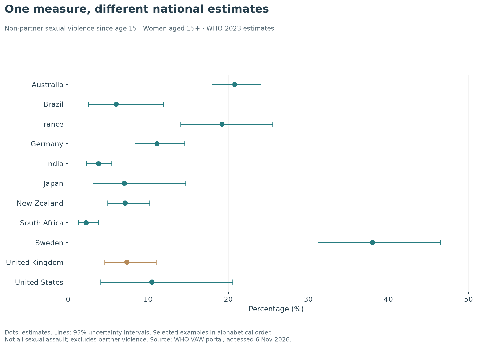
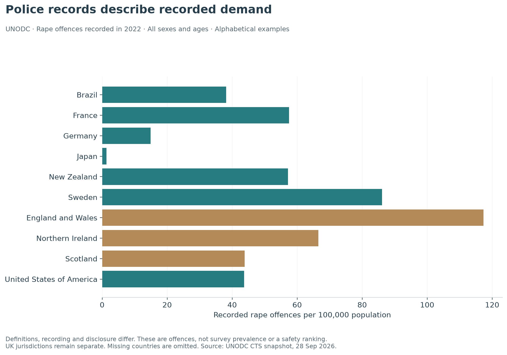

Worldwide evidence
Two separate lenses: harmonised experience estimates and offences recorded by police.
Comparing experiences across countries
WHO’s 2023 estimation round draws on surveys and studies collected between 2000 and 2023. Its non-partner sexual violence measure concerns experiences since age 15 among women aged 15 and over. It excludes current and former intimate partners; that omission is part of the definition, not evidence that partner sexual violence is unimportant. The age band includes girls aged 15–17. WHO publication · Definitions.
The snapshot contains usable estimates for 138 countries and areas. The portal’s location filter marks 145 as supported, but seven were not returned with estimates by this request. Coverage is reported from the actual response; absent territories are not assigned zero.

The UK estimate is 7.3% (4.6%–11.0%). Examples range widely, but the chart is not a league table: countries appear alphabetically, and uncertainty is displayed. Model adjustments improve comparability without eliminating differences in disclosure, questionnaires and data quality. The underlying UK inputs in this portal include a 2007 survey and a 2012 survey, both published in 2014; a 2023 model label does not mean a new UK survey was conducted that year. Underlying-study download.
What does “lifetime” mean here? Since age 15, not since birth. It is not an annual rate and should not be compared numerically with the England and Wales last-year measure.
Country explorer
Search all returned countries. Estimates are shown to one decimal place for reading; the CSV retains the supplied precision after conversion from proportions to percentages. The portal fields lci_lifetime and uci_lifetime supply the interval endpoints.
| Country / area | Estimate | 95% lower | 95% upper |
|---|---|---|---|
| Albania | 1.4% | 0.7% | 2.5% |
| Angola | 5.5% | 3.8% | 7.8% |
| Australia | 20.8% | 18.0% | 24.1% |
| Austria | 24.1% | 21.5% | 27.0% |
| Azerbaijan | 0.8% | 0.4% | 1.6% |
| Bahamas | 19.8% | 15.1% | 26.0% |
| Bangladesh | 2.6% | 1.8% | 3.8% |
| Belarus | 13.5% | 10.1% | 17.2% |
| Belgium | 12.7% | 10.6% | 15.0% |
| Belize | 4.3% | 1.4% | 9.3% |
| Benin | 2.1% | 1.3% | 3.1% |
| Bhutan | 6.8% | 5.0% | 8.8% |
| Bolivia, Plurinational State of | 8.8% | 5.7% | 14.3% |
| Bosnia and Herzegovina | 1.6% | 0.9% | 2.7% |
| Botswana | 24.7% | 13.2% | 38.7% |
| Brazil | 6.0% | 2.5% | 11.9% |
| Bulgaria | 2.8% | 1.5% | 4.3% |
| Burkina Faso | 1.4% | 0.7% | 2.6% |
| Burundi | 15.4% | 11.9% | 20.0% |
| Cambodia | 0.7% | 0.3% | 1.4% |
| Cameroon | 11.4% | 8.6% | 14.6% |
| Chad | 7.1% | 4.6% | 10.2% |
| Chile | 5.4% | 3.3% | 8.5% |
| China | 7.0% | 1.9% | 14.4% |
| Colombia | 7.9% | 4.7% | 12.4% |
| Comoros | 2.5% | 1.3% | 4.1% |
| Congo, The Democratic Republic of the | 17.6% | 12.9% | 23.3% |
| Cook Islands | 6.7% | 3.5% | 11.3% |
| Costa Rica | 28.9% | 18.4% | 44.6% |
| Croatia | 11.6% | 7.8% | 17.8% |
| Cyprus | 6.9% | 4.5% | 10.4% |
| Czechia | 5.9% | 4.0% | 8.5% |
| Côte d'Ivoire | 4.0% | 2.4% | 6.4% |
| Denmark | 31.4% | 25.2% | 37.7% |
| Dominican Republic | 9.7% | 6.3% | 13.8% |
| Ecuador | 7.4% | 4.3% | 12.0% |
| Egypt | 1.9% | 1.3% | 2.8% |
| El Salvador | 23.0% | 17.5% | 29.1% |
| Estonia | 16.5% | 12.5% | 20.5% |
| Ethiopia | 3.9% | 2.6% | 6.1% |
| Fiji | 11.5% | 7.0% | 18.0% |
| Finland | 35.6% | 33.1% | 38.5% |
| France | 19.2% | 14.1% | 25.6% |
| Gabon | 9.6% | 5.9% | 13.9% |
| Gambia | 5.9% | 3.1% | 10.0% |
| Georgia | 1.9% | 0.8% | 3.7% |
| Germany | 11.1% | 8.4% | 14.6% |
| Ghana | 8.9% | 5.8% | 11.9% |
| Greece | 16.5% | 11.9% | 22.5% |
| Grenada | 22.6% | 16.4% | 30.4% |
| Guatemala | 6.1% | 3.9% | 8.6% |
| Guyana | 10.2% | 7.5% | 13.1% |
| Haiti | 9.3% | 6.1% | 13.9% |
| Honduras | 6.1% | 3.4% | 10.8% |
| Hungary | 9.5% | 6.9% | 12.5% |
| India | 3.8% | 2.3% | 5.4% |
| Indonesia | 16.1% | 12.9% | 20.6% |
| Ireland | 25.6% | 20.5% | 30.9% |
| Italy | 20.9% | 14.7% | 27.0% |
| Jamaica | 15.8% | 11.6% | 21.1% |
| Japan | 7.0% | 3.1% | 14.7% |
| Kazakhstan | 1.5% | 0.4% | 3.4% |
| Kenya | 5.8% | 3.8% | 7.9% |
| Kiribati | 9.5% | 6.0% | 13.7% |
| Kosovo | 1.9% | 1.0% | 3.1% |
| Kyrgyzstan | 0.7% | 0.2% | 1.5% |
| Lao People's Democratic Republic | 5.2% | 3.6% | 7.8% |
| Latvia | 7.0% | 3.6% | 12.3% |
| Lesotho | 12.4% | 4.6% | 25.0% |
| Liberia | 5.3% | 3.3% | 7.8% |
| Lithuania | 7.0% | 3.6% | 11.6% |
| Luxembourg | 25.4% | 18.9% | 33.0% |
| Madagascar | 9.0% | 6.4% | 12.0% |
| Malawi | 11.4% | 8.3% | 14.7% |
| Maldives | 12.6% | 9.6% | 16.1% |
| Mali | 4.9% | 3.2% | 7.4% |
| Malta | 9.2% | 5.1% | 14.1% |
| Marshall Islands | 11.9% | 8.0% | 17.4% |
| Mauritania | 2.8% | 1.4% | 4.7% |
| Mexico | 26.1% | 23.3% | 28.7% |
| Micronesia, Federated States of | 7.8% | 4.8% | 11.8% |
| Moldova, Republic of | 5.3% | 3.4% | 7.9% |
| Mongolia | 10.0% | 8.0% | 12.3% |
| Montenegro | 1.5% | 0.7% | 2.8% |
| Mozambique | 2.1% | 1.2% | 3.5% |
| Myanmar | 1.3% | 0.6% | 2.2% |
| Namibia | 8.6% | 5.9% | 12.9% |
| Nauru | 39.9% | 26.7% | 55.9% |
| Nepal | 3.3% | 1.7% | 5.6% |
| Netherlands | 28.7% | 21.7% | 35.3% |
| New Zealand | 7.1% | 5.0% | 10.2% |
| Nigeria | 4.0% | 2.3% | 6.5% |
| North Macedonia | 2.1% | 1.1% | 3.6% |
| Pakistan | 7.1% | 2.0% | 16.9% |
| Palau | 14.9% | 10.2% | 20.9% |
| Panama | 2.4% | 1.3% | 4.2% |
| Papua New Guinea | 15.2% | 11.8% | 19.1% |
| Paraguay | 2.6% | 1.6% | 4.4% |
| Peru | 10.2% | 5.1% | 17.9% |
| Philippines | 2.5% | 1.5% | 3.8% |
| Poland | 3.0% | 1.2% | 5.7% |
| Portugal | 4.7% | 2.3% | 8.5% |
| Romania | 5.8% | 4.0% | 8.1% |
| Rwanda | 11.1% | 7.3% | 15.6% |
| Samoa | 7.1% | 3.3% | 12.2% |
| Sao Tome and Principe | 2.9% | 1.3% | 5.7% |
| Senegal | 7.3% | 5.1% | 10.3% |
| Serbia | 3.2% | 1.5% | 5.9% |
| Sierra Leone | 3.8% | 2.3% | 5.8% |
| Singapore | 4.0% | 1.5% | 8.2% |
| Slovakia | 7.1% | 3.7% | 12.0% |
| Slovenia | 7.1% | 3.6% | 12.2% |
| Solomon Islands | 15.2% | 9.4% | 24.0% |
| South Africa | 2.2% | 1.3% | 3.8% |
| South Sudan | 20.5% | 11.6% | 33.4% |
| Spain | 6.4% | 4.6% | 8.6% |
| Sri Lanka | 4.9% | 3.0% | 7.1% |
| Suriname | 11.3% | 8.1% | 16.7% |
| Sweden | 38.0% | 31.2% | 46.5% |
| Switzerland | 22.2% | 14.4% | 34.9% |
| Tajikistan | 0.2% | 0.0% | 0.6% |
| Tanzania, United Republic of | 7.5% | 5.1% | 10.4% |
| Thailand | 7.0% | 3.0% | 14.2% |
| Timor-Leste | 1.9% | 0.9% | 3.3% |
| Togo | 8.3% | 5.7% | 11.9% |
| Tonga | 3.0% | 2.1% | 4.0% |
| Trinidad and Tobago | 12.6% | 8.1% | 17.4% |
| Turkey | 2.2% | 1.4% | 3.2% |
| Turkmenistan | 0.7% | 0.2% | 1.8% |
| Tuvalu | 10.8% | 7.5% | 14.9% |
| Uganda | 11.1% | 7.8% | 16.0% |
| Ukraine | 5.3% | 3.3% | 8.0% |
| United Kingdom | 7.3% | 4.6% | 11.0% |
| United States | 10.5% | 4.0% | 20.6% |
| Vanuatu | 28.8% | 19.9% | 38.7% |
| Viet Nam | 10.3% | 8.4% | 12.9% |
| Zambia | 7.8% | 5.2% | 10.7% |
| Zimbabwe | 10.9% | 4.6% | 22.1% |
Partner violence is a separate measurement problem
The often-cited WHO global headline of around one in three women combines physical and/or sexual intimate-partner violence and non-partner sexual violence. It is not an estimate that one in three women has been sexually assaulted. A physical-or-sexual indicator cannot isolate sexual violence by itself. WHO global release.
The harmonised country comparison above intentionally uses the sexual-violence-specific non-partner indicator. The report does not add it to physical-or-sexual partner violence: populations and denominators differ, and experiences can overlap.
What police-recorded international rates measure
UNODC’s Crime Trends Survey workbook contains national returns for recorded violent and sexual offences. We extract offence rates per 100,000 population, total sex and total age, for rape, sexual assault and the broader sexual-violence category. These remain administrative records. UNODC data and workbook.

The common-year illustration uses 2022 because the England and Wales return for these categories stops there in this workbook. Scotland and Northern Ireland have later returns, while some other countries reach 2024. Selecting each country’s latest year would mix periods. All available years remain accessible below.
Higher recorded rates can reflect a combination of higher victimisation, broader definitions, greater willingness to report and more complete recording. Lower recorded rates cannot establish greater safety. The number counts offences rather than unique survivors; recording dates need not be incident dates.
Recorded-offence explorer
The controls initially show rape in 2022. Change year or category to inspect other returns. A missing row is unavailable data, not zero. Do not sum broad sexual violence with its rape and sexual-assault subcategories.
| Country / jurisdiction | Year | Recorded category | Per 100,000 |
|---|---|---|---|
| Albania | 2005 | Sexual violence | 2.89 |
| Albania | 2005 | Sexual violence: Rape | 1.59 |
| Albania | 2006 | Sexual violence | 2.85 |
| Albania | 2006 | Sexual violence: Rape | 1.31 |
| Albania | 2007 | Sexual violence | 3.34 |
| Albania | 2007 | Sexual violence: Rape | 1.36 |
| Albania | 2008 | Sexual violence | 2.54 |
| Albania | 2008 | Sexual violence: Rape | 1.30 |
| Albania | 2009 | Sexual violence | 2.80 |
| Albania | 2009 | Sexual violence: Rape | 1.15 |
| Albania | 2010 | Sexual violence | 2.70 |
| Albania | 2010 | Sexual violence: Rape | 0.82 |
| Albania | 2011 | Sexual violence | 1.51 |
| Albania | 2011 | Sexual violence: Rape | 0.76 |
| Albania | 2012 | Sexual violence | 1.51 |
| Albania | 2012 | Sexual violence: Rape | 0.82 |
| Albania | 2013 | Sexual violence | 2.99 |
| Albania | 2013 | Sexual violence: Rape | 1.34 |
| Albania | 2014 | Sexual violence | 3.34 |
| Albania | 2014 | Sexual violence: Rape | 1.41 |
| Albania | 2015 | Sexual violence | 5.14 |
| Albania | 2015 | Sexual violence: Rape | 2.45 |
| Albania | 2015 | Sexual violence: Sexual assault | 2.69 |
| Albania | 2016 | Sexual violence | 4.14 |
| Albania | 2016 | Sexual violence: Rape | 1.52 |
| Albania | 2016 | Sexual violence: Sexual assault | 2.62 |
| Albania | 2017 | Sexual violence | 3.90 |
| Albania | 2017 | Sexual violence: Rape | 1.48 |
| Albania | 2017 | Sexual violence: Sexual assault | 2.42 |
| Albania | 2018 | Sexual violence | 3.77 |
| Albania | 2018 | Sexual violence: Rape | 1.45 |
| Albania | 2018 | Sexual violence: Sexual assault | 2.31 |
| Albania | 2019 | Sexual violence | 5.34 |
| Albania | 2019 | Sexual violence: Rape | 2.67 |
| Albania | 2019 | Sexual violence: Sexual assault | 2.67 |
| Albania | 2020 | Sexual violence | 5.05 |
| Albania | 2020 | Sexual violence: Rape | 2.26 |
| Albania | 2020 | Sexual violence: Sexual assault | 1.88 |
| Albania | 2021 | Sexual violence | 4.74 |
| Albania | 2021 | Sexual violence: Rape | 2.04 |
| Albania | 2021 | Sexual violence: Sexual assault | 1.65 |
| Albania | 2022 | Sexual violence | 5.98 |
| Albania | 2022 | Sexual violence: Rape | 1.73 |
| Albania | 2022 | Sexual violence: Sexual assault | 2.94 |
| Albania | 2023 | Sexual violence | 4.77 |
| Albania | 2023 | Sexual violence: Rape | 1.64 |
| Albania | 2023 | Sexual violence: Sexual assault | 2.45 |
| Albania | 2024 | Sexual violence | 4.44 |
| Albania | 2024 | Sexual violence: Rape | 1.54 |
| Albania | 2024 | Sexual violence: Sexual assault | 2.90 |
| Algeria | 2003 | Sexual violence: Rape | 2.25 |
| Algeria | 2004 | Sexual violence: Rape | 1.93 |
| Algeria | 2005 | Sexual violence: Rape | 1.14 |
| Algeria | 2006 | Sexual violence | 10.43 |
| Algeria | 2006 | Sexual violence: Rape | 1.05 |
| Algeria | 2007 | Sexual violence | 11.42 |
| Algeria | 2007 | Sexual violence: Rape | 1.13 |
| Algeria | 2008 | Sexual violence | 11.31 |
| Algeria | 2008 | Sexual violence: Rape | 0.99 |
| Algeria | 2009 | Sexual violence | 11.92 |
| Algeria | 2009 | Sexual violence: Rape | 1.08 |
| Algeria | 2010 | Sexual violence | 10.49 |
| Algeria | 2010 | Sexual violence: Rape | 0.84 |
| Algeria | 2011 | Sexual violence | 10.53 |
| Algeria | 2011 | Sexual violence: Rape | 0.79 |
| Algeria | 2012 | Sexual violence: Rape | 2.05 |
| Algeria | 2013 | Sexual violence | 14.57 |
| Algeria | 2013 | Sexual violence: Rape | 1.77 |
| Algeria | 2014 | Sexual violence | 7.70 |
| Algeria | 2014 | Sexual violence: Rape | 1.72 |
| Algeria | 2015 | Sexual violence | 8.40 |
| Algeria | 2015 | Sexual violence: Rape | 1.52 |
| Algeria | 2015 | Sexual violence: Sexual assault | 5.71 |
| Algeria | 2018 | Sexual violence | 3.51 |
| Algeria | 2018 | Sexual violence: Rape | 1.77 |
| Algeria | 2018 | Sexual violence: Sexual assault | 2.22 |
| Algeria | 2019 | Sexual violence | 3.14 |
| Algeria | 2019 | Sexual violence: Rape | 1.28 |
| Algeria | 2019 | Sexual violence: Sexual assault | 1.86 |
| Algeria | 2020 | Sexual violence | 3.53 |
| Algeria | 2020 | Sexual violence: Rape | 1.54 |
| Algeria | 2020 | Sexual violence: Sexual assault | 1.99 |
| Algeria | 2021 | Sexual violence | 4.05 |
| Algeria | 2021 | Sexual violence: Rape | 1.75 |
| Algeria | 2021 | Sexual violence: Sexual assault | 2.30 |
| Algeria | 2022 | Sexual violence | 3.41 |
| Algeria | 2022 | Sexual violence: Rape | 1.65 |
| Algeria | 2022 | Sexual violence: Sexual assault | 2.40 |
| Algeria | 2023 | Sexual violence | 5.21 |
| Algeria | 2023 | Sexual violence: Rape | 1.62 |
| Algeria | 2023 | Sexual violence: Sexual assault | 0.52 |
| Algeria | 2024 | Sexual violence | 4.83 |
| Algeria | 2024 | Sexual violence: Rape | 1.79 |
| Algeria | 2024 | Sexual violence: Sexual assault | 3.04 |
| Andorra | 2007 | Sexual violence | 12.21 |
| Andorra | 2007 | Sexual violence: Rape | 2.44 |
| Andorra | 2008 | Sexual violence | 17.97 |
| Andorra | 2008 | Sexual violence: Rape | 2.40 |
| Andorra | 2009 | Sexual violence | 7.15 |
| Andorra | 2009 | Sexual violence: Rape | 0.00 |
| Andorra | 2010 | Sexual violence | 12.39 |
| Andorra | 2010 | Sexual violence: Rape | 1.24 |
| Andorra | 2011 | Sexual violence | 21.86 |
| Andorra | 2011 | Sexual violence: Rape | 2.57 |
| Andorra | 2012 | Sexual violence | 23.43 |
| Andorra | 2012 | Sexual violence: Rape | 6.51 |
| Andorra | 2013 | Sexual violence | 23.94 |
| Andorra | 2013 | Sexual violence: Rape | 3.99 |
| Andorra | 2014 | Sexual violence | 21.70 |
| Andorra | 2014 | Sexual violence: Rape | 8.14 |
| Andorra | 2015 | Sexual violence | 15.24 |
| Andorra | 2015 | Sexual violence: Rape | 1.39 |
| Andorra | 2015 | Sexual violence: Sexual assault | 4.16 |
| Andorra | 2016 | Sexual violence | 24.94 |
| Andorra | 2016 | Sexual violence: Rape | 2.77 |
| Andorra | 2016 | Sexual violence: Sexual assault | 15.24 |
| Andorra | 2017 | Sexual violence | 27.11 |
| Andorra | 2017 | Sexual violence: Rape | 4.07 |
| Andorra | 2017 | Sexual violence: Sexual assault | 17.62 |
| Andorra | 2018 | Sexual violence | 34.59 |
| Andorra | 2018 | Sexual violence: Rape | 2.66 |
| Andorra | 2018 | Sexual violence: Sexual assault | 18.63 |
| Andorra | 2019 | Sexual violence | 49.69 |
| Andorra | 2019 | Sexual violence: Rape | 0.00 |
| Andorra | 2019 | Sexual violence: Sexual assault | 14.38 |
| Antigua and Barbuda | 2015 | Sexual violence | 79.41 |
| Antigua and Barbuda | 2015 | Sexual violence: Rape | 35.79 |
| Antigua and Barbuda | 2015 | Sexual violence: Sexual assault | 24.61 |
| Antigua and Barbuda | 2016 | Sexual violence | 88.92 |
| Antigua and Barbuda | 2016 | Sexual violence: Rape | 34.46 |
| Antigua and Barbuda | 2016 | Sexual violence: Sexual assault | 25.56 |
| Antigua and Barbuda | 2017 | Sexual violence | 91.75 |
| Antigua and Barbuda | 2017 | Sexual violence: Rape | 25.42 |
| Antigua and Barbuda | 2017 | Sexual violence: Sexual assault | 42.00 |
| Antigua and Barbuda | 2018 | Sexual violence | 65.99 |
| Antigua and Barbuda | 2018 | Sexual violence: Rape | 25.30 |
| Antigua and Barbuda | 2018 | Sexual violence: Sexual assault | 26.40 |
| Antigua and Barbuda | 2019 | Sexual violence | 78.81 |
| Antigua and Barbuda | 2019 | Sexual violence: Rape | 25.17 |
| Antigua and Barbuda | 2019 | Sexual violence: Sexual assault | 30.65 |
| Antigua and Barbuda | 2020 | Sexual violence | 65.33 |
| Antigua and Barbuda | 2020 | Sexual violence: Rape | 19.60 |
| Antigua and Barbuda | 2020 | Sexual violence: Sexual assault | 29.40 |
| Antigua and Barbuda | 2021 | Sexual violence | 72.55 |
| Antigua and Barbuda | 2021 | Sexual violence: Rape | 24.91 |
| Antigua and Barbuda | 2021 | Sexual violence: Sexual assault | 24.91 |
| Antigua and Barbuda | 2022 | Sexual violence | 89.40 |
| Antigua and Barbuda | 2022 | Sexual violence: Rape | 33.39 |
| Antigua and Barbuda | 2022 | Sexual violence: Sexual assault | 38.78 |
| Antigua and Barbuda | 2023 | Sexual violence | 115.74 |
| Antigua and Barbuda | 2023 | Sexual violence: Rape | 42.87 |
| Antigua and Barbuda | 2023 | Sexual violence: Sexual assault | 26.79 |
| Antigua and Barbuda | 2024 | Sexual violence | 73.58 |
| Antigua and Barbuda | 2024 | Sexual violence: Rape | 23.46 |
| Antigua and Barbuda | 2024 | Sexual violence: Sexual assault | 31.99 |
| Argentina | 2005 | Sexual violence: Rape | 8.04 |
| Argentina | 2006 | Sexual violence: Rape | 8.24 |
| Argentina | 2007 | Sexual violence | 26.38 |
| Argentina | 2007 | Sexual violence: Rape | 8.19 |
| Argentina | 2008 | Sexual violence | 26.23 |
| Argentina | 2008 | Sexual violence: Rape | 8.33 |
| Argentina | 2014 | Sexual violence | 31.33 |
| Argentina | 2014 | Sexual violence: Rape | 8.73 |
| Argentina | 2014 | Sexual violence: Sexual assault | 22.60 |
| Argentina | 2015 | Sexual violence | 37.06 |
| Argentina | 2015 | Sexual violence: Rape | 8.01 |
| Argentina | 2015 | Sexual violence: Sexual assault | 29.05 |
| Argentina | 2016 | Sexual violence | 28.31 |
| Argentina | 2016 | Sexual violence: Rape | 8.15 |
| Argentina | 2016 | Sexual violence: Sexual assault | 20.16 |
| Argentina | 2017 | Sexual violence | 32.23 |
| Argentina | 2017 | Sexual violence: Rape | 8.41 |
| Argentina | 2017 | Sexual violence: Sexual assault | 23.83 |
| Argentina | 2018 | Sexual violence | 36.50 |
| Argentina | 2018 | Sexual violence: Rape | 9.27 |
| Argentina | 2018 | Sexual violence: Sexual assault | 27.22 |
| Argentina | 2019 | Sexual violence | 47.53 |
| Argentina | 2019 | Sexual violence: Rape | 12.14 |
| Argentina | 2019 | Sexual violence: Sexual assault | 35.39 |
| Argentina | 2020 | Sexual violence | 60.73 |
| Argentina | 2020 | Sexual violence: Rape | 12.63 |
| Argentina | 2020 | Sexual violence: Sexual assault | 48.09 |
| Argentina | 2021 | Sexual violence | 86.11 |
| Argentina | 2021 | Sexual violence: Rape | 15.27 |
| Argentina | 2021 | Sexual violence: Sexual assault | 70.84 |
| Argentina | 2022 | Sexual violence | 88.02 |
| Argentina | 2022 | Sexual violence: Rape | 15.55 |
| Argentina | 2022 | Sexual violence: Sexual assault | 72.46 |
| Argentina | 2023 | Sexual violence | 84.57 |
| Argentina | 2023 | Sexual violence: Rape | 14.03 |
| Argentina | 2023 | Sexual violence: Sexual assault | 70.54 |
| Argentina | 2024 | Sexual violence | 73.08 |
| Argentina | 2024 | Sexual violence: Rape | 13.56 |
| Argentina | 2024 | Sexual violence: Sexual assault | 59.52 |
| Armenia | 2003 | Sexual violence: Rape | 0.10 |
| Armenia | 2004 | Sexual violence | 1.59 |
| Armenia | 2004 | Sexual violence: Rape | 0.30 |
| Armenia | 2005 | Sexual violence | 1.70 |
| Armenia | 2005 | Sexual violence: Rape | 0.50 |
| Armenia | 2006 | Sexual violence | 1.74 |
| Armenia | 2006 | Sexual violence: Rape | 0.23 |
| Armenia | 2007 | Sexual violence | 1.11 |
| Armenia | 2007 | Sexual violence: Rape | 0.17 |
| Armenia | 2008 | Sexual violence | 2.13 |
| Armenia | 2008 | Sexual violence: Rape | 0.51 |
| Armenia | 2009 | Sexual violence | 2.48 |
| Armenia | 2009 | Sexual violence: Rape | 0.51 |
| Armenia | 2010 | Sexual violence | 2.80 |
| Armenia | 2010 | Sexual violence: Rape | 0.38 |
| Armenia | 2010 | Sexual violence: Sexual assault | 2.42 |
| Armenia | 2011 | Sexual violence | 2.43 |
| Armenia | 2011 | Sexual violence: Rape | 0.34 |
| Armenia | 2011 | Sexual violence: Sexual assault | 2.09 |
| Armenia | 2012 | Sexual violence | 3.59 |
| Armenia | 2012 | Sexual violence: Rape | 0.48 |
| Armenia | 2012 | Sexual violence: Sexual assault | 3.11 |
| Armenia | 2013 | Sexual violence | 3.97 |
| Armenia | 2013 | Sexual violence: Rape | 0.51 |
| Armenia | 2013 | Sexual violence: Sexual assault | 0.51 |
| Armenia | 2014 | Sexual violence | 3.32 |
| Armenia | 2014 | Sexual violence: Rape | 0.62 |
| Armenia | 2014 | Sexual violence: Sexual assault | 0.31 |
| Armenia | 2015 | Sexual violence | 4.11 |
| Armenia | 2015 | Sexual violence: Rape | 1.03 |
| Armenia | 2015 | Sexual violence: Sexual assault | 0.68 |
| Armenia | 2016 | Sexual violence | 4.04 |
| Armenia | 2016 | Sexual violence: Rape | 0.55 |
| Armenia | 2016 | Sexual violence: Sexual assault | 0.62 |
| Armenia | 2017 | Sexual violence | 3.50 |
| Armenia | 2017 | Sexual violence: Rape | 0.58 |
| Armenia | 2017 | Sexual violence: Sexual assault | 0.62 |
| Armenia | 2018 | Sexual violence | 2.89 |
| Armenia | 2018 | Sexual violence: Rape | 0.69 |
| Armenia | 2018 | Sexual violence: Sexual assault | 0.79 |
| Armenia | 2019 | Sexual violence | 3.58 |
| Armenia | 2019 | Sexual violence: Rape | 0.62 |
| Armenia | 2019 | Sexual violence: Sexual assault | 0.55 |
| Armenia | 2020 | Sexual violence | 2.80 |
| Armenia | 2020 | Sexual violence: Rape | 0.69 |
| Armenia | 2020 | Sexual violence: Sexual assault | 0.59 |
| Armenia | 2021 | Sexual violence | 3.24 |
| Armenia | 2021 | Sexual violence: Rape | 0.77 |
| Armenia | 2021 | Sexual violence: Sexual assault | 0.42 |
| Armenia | 2022 | Sexual violence | 3.78 |
| Armenia | 2022 | Sexual violence: Rape | 2.05 |
| Armenia | 2022 | Sexual violence: Sexual assault | 0.42 |
| Armenia | 2023 | Sexual violence | 5.98 |
| Armenia | 2023 | Sexual violence: Rape | 2.82 |
| Armenia | 2023 | Sexual violence: Sexual assault | 0.51 |
| Armenia | 2024 | Sexual violence | 10.05 |
| Australia | 2010 | Sexual violence | 85.19 |
| Australia | 2011 | Sexual violence | 82.81 |
| Australia | 2012 | Sexual violence | 85.10 |
| Australia | 2013 | Sexual violence | 86.18 |
| Australia | 2014 | Sexual violence | 87.90 |
| Australia | 2015 | Sexual violence | 91.65 |
| Australia | 2016 | Sexual violence | 94.70 |
| Australia | 2017 | Sexual violence | 104.47 |
| Australia | 2018 | Sexual violence | 104.80 |
| Australia | 2019 | Sexual violence | 105.40 |
| Australia | 2020 | Sexual violence | 106.97 |
| Australia | 2021 | Sexual violence | 119.89 |
| Australia | 2022 | Sexual violence | 122.69 |
| Australia | 2023 | Sexual violence | 137.30 |
| Australia | 2024 | Sexual violence | 150.06 |
| Austria | 2004 | Sexual violence | 24.52 |
| Austria | 2004 | Sexual violence: Rape | 8.41 |
| Austria | 2005 | Sexual violence | 20.34 |
| Austria | 2005 | Sexual violence: Rape | 8.24 |
| Austria | 2006 | Sexual violence | 21.02 |
| Austria | 2006 | Sexual violence: Rape | 8.46 |
| Austria | 2007 | Sexual violence | 21.61 |
| Austria | 2007 | Sexual violence: Rape | 8.56 |
| Austria | 2008 | Sexual violence | 35.25 |
| Austria | 2008 | Sexual violence: Rape | 8.33 |
| Austria | 2009 | Sexual violence | 30.77 |
| Austria | 2009 | Sexual violence: Rape | 9.33 |
| Austria | 2010 | Sexual violence | 39.45 |
| Austria | 2010 | Sexual violence: Rape | 10.46 |
| Austria | 2010 | Sexual violence: Sexual assault | 29.00 |
| Austria | 2011 | Sexual violence | 44.91 |
| Austria | 2011 | Sexual violence: Rape | 11.62 |
| Austria | 2011 | Sexual violence: Sexual assault | 33.29 |
| Austria | 2012 | Sexual violence | 45.72 |
| Austria | 2012 | Sexual violence: Rape | 10.47 |
| Austria | 2012 | Sexual violence: Sexual assault | 35.25 |
| Austria | 2013 | Sexual violence | 44.57 |
| Austria | 2013 | Sexual violence: Rape | 15.27 |
| Austria | 2013 | Sexual violence: Sexual assault | 25.38 |
| Austria | 2014 | Sexual violence | 41.69 |
| Austria | 2014 | Sexual violence: Rape | 13.62 |
| Austria | 2014 | Sexual violence: Sexual assault | 24.79 |
| Austria | 2015 | Sexual violence | 40.25 |
| Austria | 2015 | Sexual violence: Rape | 13.07 |
| Austria | 2015 | Sexual violence: Sexual assault | 23.24 |
| Austria | 2016 | Sexual violence | 50.25 |
| Austria | 2016 | Sexual violence: Rape | 14.09 |
| Austria | 2016 | Sexual violence: Sexual assault | 32.28 |
| Austria | 2017 | Sexual violence | 48.34 |
| Austria | 2017 | Sexual violence: Rape | 16.96 |
| Austria | 2017 | Sexual violence: Sexual assault | 27.47 |
| Austria | 2018 | Sexual violence | 50.05 |
| Austria | 2018 | Sexual violence: Rape | 18.84 |
| Austria | 2018 | Sexual violence: Sexual assault | 27.42 |
| Austria | 2019 | Sexual violence | 50.77 |
| Austria | 2019 | Sexual violence: Rape | 18.87 |
| Austria | 2019 | Sexual violence: Sexual assault | 26.57 |
| Austria | 2020 | Sexual violence | 46.42 |
| Austria | 2020 | Sexual violence: Rape | 18.88 |
| Austria | 2020 | Sexual violence: Sexual assault | 23.93 |
| Austria | 2021 | Sexual violence | 48.56 |
| Austria | 2021 | Sexual violence: Rape | 20.53 |
| Austria | 2021 | Sexual violence: Sexual assault | 24.63 |
| Austria | 2022 | Sexual violence | 54.81 |
| Austria | 2022 | Sexual violence: Rape | 22.67 |
| Austria | 2022 | Sexual violence: Sexual assault | 28.33 |
| Austria | 2023 | Sexual violence | 59.66 |
| Austria | 2023 | Sexual violence: Rape | 25.50 |
| Austria | 2023 | Sexual violence: Sexual assault | 30.72 |
| Austria | 2024 | Sexual violence | 61.32 |
| Austria | 2024 | Sexual violence: Rape | 26.40 |
| Austria | 2024 | Sexual violence: Sexual assault | 31.65 |
| Azerbaijan | 2003 | Sexual violence: Rape | 0.58 |
| Azerbaijan | 2004 | Sexual violence: Rape | 0.29 |
| Azerbaijan | 2005 | Sexual violence: Rape | 0.51 |
| Azerbaijan | 2006 | Sexual violence: Rape | 0.40 |
| Azerbaijan | 2007 | Sexual violence | 2.42 |
| Azerbaijan | 2007 | Sexual violence: Rape | 0.39 |
| Azerbaijan | 2008 | Sexual violence | 2.49 |
| Azerbaijan | 2008 | Sexual violence: Rape | 0.28 |
| Azerbaijan | 2009 | Sexual violence | 2.95 |
| Azerbaijan | 2009 | Sexual violence: Rape | 0.39 |
| Azerbaijan | 2010 | Sexual violence | 2.23 |
| Azerbaijan | 2010 | Sexual violence: Rape | 0.17 |
| Azerbaijan | 2011 | Sexual violence | 1.86 |
| Azerbaijan | 2011 | Sexual violence: Rape | 0.30 |
| Azerbaijan | 2012 | Sexual violence | 1.92 |
| Azerbaijan | 2012 | Sexual violence: Rape | 0.20 |
| Azerbaijan | 2013 | Sexual violence | 2.23 |
| Azerbaijan | 2013 | Sexual violence: Rape | 0.33 |
| Azerbaijan | 2014 | Sexual violence | 2.22 |
| Azerbaijan | 2014 | Sexual violence: Rape | 0.33 |
| Azerbaijan | 2016 | Sexual violence | 1.06 |
| Azerbaijan | 2016 | Sexual violence: Rape | 0.23 |
| Azerbaijan | 2016 | Sexual violence: Sexual assault | 0.13 |
| Azerbaijan | 2017 | Sexual violence | 1.23 |
| Azerbaijan | 2017 | Sexual violence: Rape | 0.30 |
| Azerbaijan | 2017 | Sexual violence: Sexual assault | 0.10 |
| Azerbaijan | 2018 | Sexual violence | 1.06 |
| Azerbaijan | 2018 | Sexual violence: Rape | 0.20 |
| Azerbaijan | 2018 | Sexual violence: Sexual assault | 0.09 |
| Azerbaijan | 2019 | Sexual violence | 0.81 |
| Azerbaijan | 2019 | Sexual violence: Rape | 0.20 |
| Azerbaijan | 2019 | Sexual violence: Sexual assault | 0.03 |
| Azerbaijan | 2020 | Sexual violence | 0.61 |
| Azerbaijan | 2020 | Sexual violence: Rape | 0.15 |
| Azerbaijan | 2020 | Sexual violence: Sexual assault | 0.06 |
| Azerbaijan | 2021 | Sexual violence | 0.75 |
| Azerbaijan | 2021 | Sexual violence: Rape | 0.20 |
| Azerbaijan | 2021 | Sexual violence: Sexual assault | 0.08 |
| Azerbaijan | 2022 | Sexual violence | 0.70 |
| Azerbaijan | 2022 | Sexual violence: Rape | 0.12 |
| Azerbaijan | 2022 | Sexual violence: Sexual assault | 0.05 |
| Azerbaijan | 2023 | Sexual violence | 0.68 |
| Azerbaijan | 2023 | Sexual violence: Rape | 0.14 |
| Azerbaijan | 2023 | Sexual violence: Sexual assault | 0.07 |
| Azerbaijan | 2024 | Sexual violence | 0.79 |
| Azerbaijan | 2024 | Sexual violence: Rape | 0.09 |
| Azerbaijan | 2024 | Sexual violence: Sexual assault | 0.06 |
| Bahamas | 2005 | Sexual violence | 127.66 |
| Bahamas | 2005 | Sexual violence: Rape | 25.30 |
| Bahamas | 2006 | Sexual violence | 145.53 |
| Bahamas | 2006 | Sexual violence: Rape | 20.67 |
| Bahamas | 2007 | Sexual violence | 166.98 |
| Bahamas | 2007 | Sexual violence: Rape | 38.21 |
| Bahamas | 2008 | Sexual violence | 155.53 |
| Bahamas | 2008 | Sexual violence: Rape | 32.95 |
| Bahamas | 2009 | Sexual violence | 162.34 |
| Bahamas | 2009 | Sexual violence: Rape | 30.04 |
| Bahamas | 2010 | Sexual violence | 84.09 |
| Bahamas | 2010 | Sexual violence: Rape | 21.23 |
| Bahamas | 2011 | Sexual violence | 64.03 |
| Bahamas | 2011 | Sexual violence: Rape | 28.78 |
| Bahamas | 2012 | Sexual violence | 79.63 |
| Bahamas | 2012 | Sexual violence: Rape | 25.57 |
| Bahamas | 2014 | Sexual violence | 83.18 |
| Bahamas | 2014 | Sexual violence: Rape | 18.83 |
| Bahamas | 2014 | Sexual violence: Sexual assault | 112.22 |
| Bahamas | 2015 | Sexual violence | 78.37 |
| Bahamas | 2015 | Sexual violence: Rape | 19.72 |
| Bahamas | 2015 | Sexual violence: Sexual assault | 85.64 |
| Bahamas | 2016 | Sexual violence | 59.27 |
| Bahamas | 2016 | Sexual violence: Rape | 55.40 |
| Bahamas | 2016 | Sexual violence: Sexual assault | 3.87 |
| Bahamas | 2017 | Sexual violence | 53.52 |
| Bahamas | 2017 | Sexual violence: Rape | 13.32 |
| Bahamas | 2017 | Sexual violence: Sexual assault | 2.82 |
| Bahamas | 2018 | Sexual violence | 45.58 |
| Bahamas | 2018 | Sexual violence: Rape | 14.00 |
| Bahamas | 2018 | Sexual violence: Sexual assault | 2.80 |
| Bahamas | 2019 | Sexual violence | 40.29 |
| Bahamas | 2019 | Sexual violence: Rape | 10.90 |
| Bahamas | 2019 | Sexual violence: Sexual assault | 2.03 |
| Bahamas | 2020 | Sexual violence | 53.81 |
| Bahamas | 2020 | Sexual violence: Rape | 12.63 |
| Bahamas | 2020 | Sexual violence: Sexual assault | 1.26 |
| Bahamas | 2021 | Sexual violence | 45.16 |
| Bahamas | 2021 | Sexual violence: Rape | 12.11 |
| Bahamas | 2021 | Sexual violence: Sexual assault | 1.51 |
| Bahamas | 2022 | Sexual violence | 51.32 |
| Bahamas | 2022 | Sexual violence: Rape | 13.84 |
| Bahamas | 2022 | Sexual violence: Sexual assault | 2.52 |
| Bahamas | 2023 | Sexual violence | 51.07 |
| Bahamas | 2023 | Sexual violence: Rape | 15.27 |
| Bahamas | 2023 | Sexual violence: Sexual assault | 2.25 |
| Bahrain | 2003 | Sexual violence: Rape | 2.34 |
| Bahrain | 2004 | Sexual violence: Rape | 3.10 |
| Bahrain | 2005 | Sexual violence: Rape | 2.68 |
| Bahrain | 2006 | Sexual violence: Rape | 1.71 |
| Bahrain | 2007 | Sexual violence | 13.71 |
| Bahrain | 2007 | Sexual violence: Rape | 1.99 |
| Bahrain | 2008 | Sexual violence | 15.62 |
| Bahrain | 2008 | Sexual violence: Rape | 3.21 |
| Bangladesh | 2005 | Sexual violence: Rape | 7.80 |
| Bangladesh | 2006 | Sexual violence: Rape | 7.98 |
| Barbados | 2004 | Sexual violence | 76.32 |
| Barbados | 2004 | Sexual violence: Rape | 31.43 |
| Barbados | 2005 | Sexual violence | 71.45 |
| Barbados | 2005 | Sexual violence: Rape | 28.66 |
| Barbados | 2006 | Sexual violence | 74.07 |
| Barbados | 2006 | Sexual violence: Rape | 27.78 |
| Barbados | 2007 | Sexual violence | 73.72 |
| Barbados | 2007 | Sexual violence: Rape | 26.54 |
| Barbados | 2008 | Sexual violence | 62.70 |
| Barbados | 2008 | Sexual violence: Rape | 22.73 |
| Barbados | 2009 | Sexual violence | 63.48 |
| Barbados | 2009 | Sexual violence: Rape | 24.81 |
| Barbados | 2010 | Sexual violence | 61.40 |
| Barbados | 2010 | Sexual violence: Rape | 22.89 |
| Barbados | 2011 | Sexual violence | 66.63 |
| Barbados | 2011 | Sexual violence: Rape | 25.35 |
| Barbados | 2012 | Sexual violence | 59.58 |
| Barbados | 2012 | Sexual violence: Rape | 19.14 |
| Barbados | 2013 | Sexual violence | 61.22 |
| Barbados | 2013 | Sexual violence: Rape | 20.89 |
| Barbados | 2014 | Sexual violence | 58.92 |
| Barbados | 2014 | Sexual violence: Rape | 19.40 |
| Barbados | 2015 | Sexual violence | 69.54 |
| Barbados | 2015 | Sexual violence: Rape | 22.58 |
| Barbados | 2015 | Sexual violence: Sexual assault | 28.67 |
| Barbados | 2016 | Sexual violence | 65.09 |
| Barbados | 2016 | Sexual violence: Rape | 22.53 |
| Barbados | 2016 | Sexual violence: Sexual assault | 26.47 |
| Barbados | 2017 | Sexual violence | 60.32 |
| Barbados | 2017 | Sexual violence: Rape | 26.06 |
| Barbados | 2017 | Sexual violence: Sexual assault | 14.28 |
| Barbados | 2018 | Sexual violence | 58.07 |
| Barbados | 2018 | Sexual violence: Rape | 24.94 |
| Barbados | 2018 | Sexual violence: Sexual assault | 17.10 |
| Barbados | 2019 | Sexual violence | 49.43 |
| Barbados | 2019 | Sexual violence: Rape | 20.63 |
| Barbados | 2019 | Sexual violence: Sexual assault | 17.07 |
| Barbados | 2020 | Sexual violence | 54.31 |
| Barbados | 2020 | Sexual violence: Rape | 13.84 |
| Barbados | 2020 | Sexual violence: Sexual assault | 15.26 |
| Barbados | 2021 | Sexual violence | 54.94 |
| Barbados | 2021 | Sexual violence: Rape | 18.08 |
| Barbados | 2021 | Sexual violence: Sexual assault | 32.61 |
| Barbados | 2022 | Sexual violence | 44.28 |
| Barbados | 2022 | Sexual violence: Rape | 14.52 |
| Barbados | 2022 | Sexual violence: Sexual assault | 28.34 |
| Barbados | 2023 | Sexual violence | 39.67 |
| Barbados | 2023 | Sexual violence: Rape | 14.17 |
| Barbados | 2023 | Sexual violence: Sexual assault | 25.50 |
| Barbados | 2024 | Sexual violence | 47.09 |
| Barbados | 2024 | Sexual violence: Rape | 15.22 |
| Barbados | 2024 | Sexual violence: Sexual assault | 25.49 |
| Belarus | 2003 | Sexual violence: Rape | 4.41 |
| Belarus | 2004 | Sexual violence | 7.96 |
| Belarus | 2004 | Sexual violence: Rape | 3.97 |
| Belarus | 2005 | Sexual violence | 8.47 |
| Belarus | 2005 | Sexual violence: Rape | 5.00 |
| Belarus | 2006 | Sexual violence | 6.99 |
| Belarus | 2006 | Sexual violence: Rape | 3.67 |
| Belarus | 2007 | Sexual violence | 7.15 |
| Belarus | 2007 | Sexual violence: Rape | 3.51 |
| Belarus | 2008 | Sexual violence | 5.53 |
| Belarus | 2008 | Sexual violence: Rape | 2.52 |
| Belarus | 2009 | Sexual violence | 5.35 |
| Belarus | 2009 | Sexual violence: Rape | 2.29 |
| Belarus | 2010 | Sexual violence | 3.86 |
| Belarus | 2010 | Sexual violence: Rape | 1.51 |
| Belarus | 2011 | Sexual violence | 3.63 |
| Belarus | 2011 | Sexual violence: Rape | 1.26 |
| Belarus | 2012 | Sexual violence | 4.64 |
| Belarus | 2012 | Sexual violence: Rape | 1.01 |
| Belarus | 2013 | Sexual violence | 5.10 |
| Belarus | 2013 | Sexual violence: Rape | 1.48 |
| Belarus | 2014 | Sexual violence | 4.76 |
| Belarus | 2014 | Sexual violence: Rape | 1.49 |
| Belarus | 2015 | Sexual violence | 5.65 |
| Belarus | 2015 | Sexual violence: Rape | 1.53 |
| Belarus | 2015 | Sexual violence: Sexual assault | 2.14 |
| Belarus | 2016 | Sexual violence | 7.00 |
| Belarus | 2016 | Sexual violence: Rape | 1.44 |
| Belarus | 2016 | Sexual violence: Sexual assault | 1.98 |
| Belarus | 2017 | Sexual violence | 9.19 |
| Belarus | 2017 | Sexual violence: Rape | 1.94 |
| Belarus | 2017 | Sexual violence: Sexual assault | 3.36 |
| Belarus | 2018 | Sexual violence | 11.51 |
| Belarus | 2018 | Sexual violence: Rape | 1.60 |
| Belarus | 2018 | Sexual violence: Sexual assault | 3.77 |
| Belarus | 2019 | Sexual violence | 9.46 |
| Belarus | 2019 | Sexual violence: Rape | 1.24 |
| Belarus | 2019 | Sexual violence: Sexual assault | 3.12 |
| Belarus | 2021 | Sexual violence | 10.24 |
| Belarus | 2021 | Sexual violence: Rape | 0.92 |
| Belarus | 2021 | Sexual violence: Sexual assault | 2.52 |
| Belarus | 2022 | Sexual violence | 12.73 |
| Belarus | 2022 | Sexual violence: Rape | 1.30 |
| Belarus | 2022 | Sexual violence: Sexual assault | 4.46 |
| Belarus | 2023 | Sexual violence | 13.44 |
| Belarus | 2023 | Sexual violence: Rape | 1.21 |
| Belarus | 2023 | Sexual violence: Sexual assault | 3.72 |
| Belarus | 2024 | Sexual violence | 10.61 |
| Belarus | 2024 | Sexual violence: Rape | 0.93 |
| Belarus | 2024 | Sexual violence: Sexual assault | 3.32 |
| Belgium | 2003 | Sexual violence | 53.63 |
| Belgium | 2003 | Sexual violence: Rape | 27.47 |
| Belgium | 2004 | Sexual violence: Rape | 28.25 |
| Belgium | 2005 | Sexual violence | 57.71 |
| Belgium | 2005 | Sexual violence: Rape | 28.91 |
| Belgium | 2006 | Sexual violence | 61.54 |
| Belgium | 2006 | Sexual violence: Rape | 30.50 |
| Belgium | 2007 | Sexual violence | 61.73 |
| Belgium | 2007 | Sexual violence: Rape | 30.96 |
| Belgium | 2008 | Sexual violence | 61.50 |
| Belgium | 2008 | Sexual violence: Rape | 30.17 |
| Belgium | 2009 | Sexual violence | 62.62 |
| Belgium | 2009 | Sexual violence: Rape | 29.15 |
| Belgium | 2010 | Sexual violence | 64.86 |
| Belgium | 2010 | Sexual violence: Rape | 30.25 |
| Belgium | 2010 | Sexual violence: Sexual assault | 34.61 |
| Belgium | 2011 | Sexual violence | 65.88 |
| Belgium | 2011 | Sexual violence: Rape | 30.77 |
| Belgium | 2011 | Sexual violence: Sexual assault | 35.10 |
| Belgium | 2012 | Sexual violence | 63.86 |
| Belgium | 2012 | Sexual violence: Rape | 30.65 |
| Belgium | 2012 | Sexual violence: Sexual assault | 33.20 |
| Belgium | 2013 | Sexual violence | 64.14 |
| Belgium | 2013 | Sexual violence: Rape | 29.97 |
| Belgium | 2013 | Sexual violence: Sexual assault | 34.17 |
| Belgium | 2014 | Sexual violence | 61.52 |
| Belgium | 2014 | Sexual violence: Rape | 28.44 |
| Belgium | 2014 | Sexual violence: Sexual assault | 33.09 |
| Belgium | 2015 | Sexual violence | 61.09 |
| Belgium | 2015 | Sexual violence: Rape | 28.66 |
| Belgium | 2015 | Sexual violence: Sexual assault | 32.43 |
| Belgium | 2016 | Sexual violence | 68.46 |
| Belgium | 2016 | Sexual violence: Rape | 30.03 |
| Belgium | 2016 | Sexual violence: Sexual assault | 38.43 |
| Belgium | 2017 | Sexual violence | 75.89 |
| Belgium | 2017 | Sexual violence: Rape | 32.76 |
| Belgium | 2017 | Sexual violence: Sexual assault | 43.13 |
| Belgium | 2018 | Sexual violence | 76.45 |
| Belgium | 2018 | Sexual violence: Rape | 33.84 |
| Belgium | 2018 | Sexual violence: Sexual assault | 42.61 |
| Belgium | 2019 | Sexual violence | 83.88 |
| Belgium | 2019 | Sexual violence: Rape | 36.73 |
| Belgium | 2019 | Sexual violence: Sexual assault | 47.14 |
| Belgium | 2020 | Sexual violence | 82.59 |
| Belgium | 2020 | Sexual violence: Rape | 34.67 |
| Belgium | 2020 | Sexual violence: Sexual assault | 47.92 |
| Belgium | 2021 | Sexual violence | 95.41 |
| Belgium | 2021 | Sexual violence: Rape | 40.50 |
| Belgium | 2021 | Sexual violence: Sexual assault | 54.91 |
| Belgium | 2022 | Sexual violence | 102.49 |
| Belgium | 2022 | Sexual violence: Rape | 41.73 |
| Belgium | 2022 | Sexual violence: Sexual assault | 60.76 |
| Belgium | 2023 | Sexual violence | 107.14 |
| Belgium | 2023 | Sexual violence: Rape | 41.35 |
| Belgium | 2023 | Sexual violence: Sexual assault | 65.79 |
| Belgium | 2024 | Sexual violence | 105.71 |
| Belgium | 2024 | Sexual violence: Rape | 40.82 |
| Belgium | 2024 | Sexual violence: Sexual assault | 64.89 |
| Belize | 2005 | Sexual violence: Rape | 17.16 |
| Belize | 2006 | Sexual violence: Rape | 15.28 |
| Belize | 2009 | Sexual violence | 64.62 |
| Belize | 2009 | Sexual violence: Rape | 9.60 |
| Belize | 2010 | Sexual violence | 40.59 |
| Belize | 2010 | Sexual violence: Rape | 6.56 |
| Belize | 2011 | Sexual violence | 36.97 |
| Belize | 2011 | Sexual violence: Rape | 8.25 |
| Belize | 2012 | Sexual violence | 32.59 |
| Belize | 2012 | Sexual violence: Rape | 8.37 |
| Belize | 2013 | Sexual violence: Rape | 7.61 |
| Belize | 2014 | Sexual violence | 42.70 |
| Belize | 2014 | Sexual violence: Rape | 12.61 |
| Belize | 2015 | Sexual violence | 51.92 |
| Belize | 2015 | Sexual violence: Rape | 11.23 |
| Belize | 2015 | Sexual violence: Sexual assault | 19.93 |
| Belize | 2016 | Sexual violence | 47.16 |
| Belize | 2016 | Sexual violence: Rape | 6.31 |
| Belize | 2016 | Sexual violence: Sexual assault | 17.00 |
| Belize | 2017 | Sexual violence | 40.73 |
| Belize | 2017 | Sexual violence: Rape | 5.89 |
| Belize | 2017 | Sexual violence: Sexual assault | 18.22 |
| Belize | 2018 | Sexual violence | 34.98 |
| Belize | 2018 | Sexual violence: Rape | 5.52 |
| Belize | 2018 | Sexual violence: Sexual assault | 15.78 |
| Belize | 2019 | Sexual violence | 41.73 |
| Belize | 2019 | Sexual violence: Rape | 7.78 |
| Belize | 2019 | Sexual violence: Sexual assault | 15.03 |
| Belize | 2020 | Sexual violence | 34.54 |
| Belize | 2020 | Sexual violence: Rape | 6.40 |
| Belize | 2020 | Sexual violence: Sexual assault | 14.07 |
| Belize | 2021 | Sexual violence | 28.58 |
| Belize | 2021 | Sexual violence: Rape | 3.04 |
| Belize | 2021 | Sexual violence: Sexual assault | 13.91 |
| Belize | 2022 | Sexual violence | 36.75 |
| Belize | 2022 | Sexual violence: Rape | 5.96 |
| Belize | 2022 | Sexual violence: Sexual assault | 14.90 |
| Benin | 2017 | Sexual violence: Rape | 5.23 |
| Benin | 2017 | Sexual violence: Sexual assault | 0.08 |
| Bermuda | 2003 | Sexual violence: Rape | 57.71 |
| Bermuda | 2004 | Sexual violence: Rape | 68.74 |
| Bermuda | 2009 | Sexual violence | 122.71 |
| Bermuda | 2009 | Sexual violence: Rape | 11.01 |
| Bermuda | 2010 | Sexual violence | 144.37 |
| Bermuda | 2010 | Sexual violence: Rape | 3.14 |
| Bermuda | 2011 | Sexual violence | 100.42 |
| Bermuda | 2011 | Sexual violence: Rape | 9.41 |
| Bermuda | 2012 | Sexual violence | 97.41 |
| Bermuda | 2012 | Sexual violence: Rape | 4.71 |
| Bermuda | 2013 | Sexual violence | 88.09 |
| Bermuda | 2013 | Sexual violence: Rape | 0.00 |
| Bermuda | 2013 | Sexual violence: Sexual assault | 48.76 |
| Bermuda | 2014 | Sexual violence | 94.45 |
| Bermuda | 2014 | Sexual violence: Rape | 0.00 |
| Bermuda | 2014 | Sexual violence: Sexual assault | 47.22 |
| Bermuda | 2015 | Sexual violence | 133.94 |
| Bermuda | 2015 | Sexual violence: Sexual assault | 55.15 |
| Bermuda | 2016 | Sexual violence | 141.85 |
| Bermuda | 2016 | Sexual violence: Sexual assault | 63.04 |
| Bermuda | 2017 | Sexual violence | 144.70 |
| Bermuda | 2017 | Sexual violence: Sexual assault | 67.63 |
| Bhutan | 2008 | Sexual violence | 5.83 |
| Bhutan | 2008 | Sexual violence: Rape | 4.08 |
| Bhutan | 2009 | Sexual violence | 9.80 |
| Bhutan | 2009 | Sexual violence: Rape | 7.35 |
| Bhutan | 2010 | Sexual violence | 10.12 |
| Bhutan | 2010 | Sexual violence: Rape | 6.41 |
| Bhutan | 2011 | Sexual violence | 9.16 |
| Bhutan | 2011 | Sexual violence: Rape | 7.75 |
| Bhutan | 2012 | Sexual violence | 10.60 |
| Bhutan | 2012 | Sexual violence: Rape | 8.36 |
| Bhutan | 2013 | Sexual violence | 8.82 |
| Bhutan | 2013 | Sexual violence: Rape | 8.00 |
| Bhutan | 2014 | Sexual violence | 11.05 |
| Bhutan | 2014 | Sexual violence: Rape | 5.87 |
| Bhutan | 2014 | Sexual violence: Sexual assault | 4.77 |
| Bhutan | 2015 | Sexual violence | 9.18 |
| Bhutan | 2015 | Sexual violence: Rape | 4.46 |
| Bhutan | 2015 | Sexual violence: Sexual assault | 4.46 |
| Bhutan | 2016 | Sexual violence | 10.30 |
| Bhutan | 2016 | Sexual violence: Rape | 6.02 |
| Bhutan | 2016 | Sexual violence: Sexual assault | 4.15 |
| Bhutan | 2017 | Sexual violence | 10.21 |
| Bhutan | 2017 | Sexual violence: Rape | 5.17 |
| Bhutan | 2017 | Sexual violence: Sexual assault | 4.37 |
| Bhutan | 2018 | Sexual violence: Rape | 6.45 |
| Bhutan | 2018 | Sexual violence: Sexual assault | 5.66 |
| Bhutan | 2019 | Sexual violence: Rape | 7.06 |
| Bhutan | 2019 | Sexual violence: Sexual assault | 4.18 |
| Bhutan | 2020 | Sexual violence: Rape | 6.88 |
| Bhutan | 2020 | Sexual violence: Sexual assault | 5.58 |
| Bolivia (Plurinational State of) | 2005 | Sexual violence | 18.43 |
| Bolivia (Plurinational State of) | 2005 | Sexual violence: Rape | 12.15 |
| Bolivia (Plurinational State of) | 2006 | Sexual violence | 20.28 |
| Bolivia (Plurinational State of) | 2006 | Sexual violence: Rape | 13.72 |
| Bolivia (Plurinational State of) | 2007 | Sexual violence | 24.75 |
| Bolivia (Plurinational State of) | 2007 | Sexual violence: Rape | 16.86 |
| Bolivia (Plurinational State of) | 2008 | Sexual violence | 26.10 |
| Bolivia (Plurinational State of) | 2008 | Sexual violence: Rape | 18.49 |
| Bolivia (Plurinational State of) | 2009 | Sexual violence | 29.51 |
| Bolivia (Plurinational State of) | 2009 | Sexual violence: Rape | 22.17 |
| Bolivia (Plurinational State of) | 2010 | Sexual violence | 38.73 |
| Bolivia (Plurinational State of) | 2010 | Sexual violence: Rape | 28.39 |
| Bolivia (Plurinational State of) | 2011 | Sexual violence | 34.18 |
| Bolivia (Plurinational State of) | 2011 | Sexual violence: Rape | 24.85 |
| Bolivia (Plurinational State of) | 2012 | Sexual violence | 45.87 |
| Bolivia (Plurinational State of) | 2012 | Sexual violence: Rape | 32.90 |
| Bolivia (Plurinational State of) | 2013 | Sexual violence: Rape | 30.40 |
| Bolivia (Plurinational State of) | 2013 | Sexual violence: Sexual assault | 5.66 |
| Bolivia (Plurinational State of) | 2014 | Sexual violence: Rape | 29.16 |
| Bolivia (Plurinational State of) | 2014 | Sexual violence: Sexual assault | 7.35 |
| Bolivia (Plurinational State of) | 2015 | Sexual violence: Rape | 24.10 |
| Bolivia (Plurinational State of) | 2015 | Sexual violence: Sexual assault | 12.15 |
| Bolivia (Plurinational State of) | 2016 | Sexual violence: Rape | 23.09 |
| Bolivia (Plurinational State of) | 2016 | Sexual violence: Sexual assault | 13.03 |
| Bolivia (Plurinational State of) | 2017 | Sexual violence: Rape | 21.68 |
| Bolivia (Plurinational State of) | 2017 | Sexual violence: Sexual assault | 14.78 |
| Bolivia (Plurinational State of) | 2018 | Sexual violence: Rape | 24.67 |
| Bolivia (Plurinational State of) | 2018 | Sexual violence: Sexual assault | 16.95 |
| Bolivia (Plurinational State of) | 2019 | Sexual violence | 57.11 |
| Bolivia (Plurinational State of) | 2019 | Sexual violence: Rape | 26.41 |
| Bolivia (Plurinational State of) | 2019 | Sexual violence: Sexual assault | 18.16 |
| Bolivia (Plurinational State of) | 2020 | Sexual violence | 47.38 |
| Bolivia (Plurinational State of) | 2020 | Sexual violence: Rape | 21.17 |
| Bolivia (Plurinational State of) | 2020 | Sexual violence: Sexual assault | 16.59 |
| Bolivia (Plurinational State of) | 2021 | Sexual violence | 58.64 |
| Bolivia (Plurinational State of) | 2021 | Sexual violence: Rape | 26.77 |
| Bolivia (Plurinational State of) | 2021 | Sexual violence: Sexual assault | 19.19 |
| Bolivia (Plurinational State of) | 2022 | Sexual violence | 74.76 |
| Bolivia (Plurinational State of) | 2022 | Sexual violence: Rape | 35.20 |
| Bolivia (Plurinational State of) | 2022 | Sexual violence: Sexual assault | 25.22 |
| Bolivia (Plurinational State of) | 2023 | Sexual violence | 80.22 |
| Bolivia (Plurinational State of) | 2023 | Sexual violence: Rape | 36.07 |
| Bolivia (Plurinational State of) | 2023 | Sexual violence: Sexual assault | 27.25 |
| Bosnia and Herzegovina | 2005 | Sexual violence: Rape | 0.95 |
| Bosnia and Herzegovina | 2006 | Sexual violence: Rape | 0.98 |
| Bosnia and Herzegovina | 2007 | Sexual violence | 4.39 |
| Bosnia and Herzegovina | 2007 | Sexual violence: Rape | 1.10 |
| Bosnia and Herzegovina | 2008 | Sexual violence | 4.31 |
| Bosnia and Herzegovina | 2008 | Sexual violence: Rape | 0.89 |
| Bosnia and Herzegovina | 2009 | Sexual violence | 2.29 |
| Bosnia and Herzegovina | 2009 | Sexual violence: Rape | 0.75 |
| Bosnia and Herzegovina | 2010 | Sexual violence | 3.86 |
| Bosnia and Herzegovina | 2010 | Sexual violence: Rape | 1.21 |
| Bosnia and Herzegovina | 2011 | Sexual violence | 4.46 |
| Bosnia and Herzegovina | 2011 | Sexual violence: Rape | 0.94 |
| Bosnia and Herzegovina | 2012 | Sexual violence | 3.79 |
| Bosnia and Herzegovina | 2012 | Sexual violence: Rape | 1.12 |
| Bosnia and Herzegovina | 2013 | Sexual violence | 3.79 |
| Bosnia and Herzegovina | 2013 | Sexual violence: Rape | 0.97 |
| Bosnia and Herzegovina | 2014 | Sexual violence | 3.76 |
| Bosnia and Herzegovina | 2014 | Sexual violence: Rape | 0.76 |
| Bosnia and Herzegovina | 2015 | Sexual violence | 4.66 |
| Bosnia and Herzegovina | 2015 | Sexual violence: Rape | 1.02 |
| Bosnia and Herzegovina | 2015 | Sexual violence: Sexual assault | 0.68 |
| Bosnia and Herzegovina | 2016 | Sexual violence | 4.12 |
| Bosnia and Herzegovina | 2016 | Sexual violence: Rape | 0.78 |
| Bosnia and Herzegovina | 2016 | Sexual violence: Sexual assault | 0.84 |
| Bosnia and Herzegovina | 2017 | Sexual violence | 4.61 |
| Bosnia and Herzegovina | 2017 | Sexual violence: Rape | 0.73 |
| Bosnia and Herzegovina | 2017 | Sexual violence: Sexual assault | 4.43 |
| Bosnia and Herzegovina | 2018 | Sexual violence | 2.57 |
| Bosnia and Herzegovina | 2018 | Sexual violence: Rape | 1.00 |
| Bosnia and Herzegovina | 2018 | Sexual violence: Sexual assault | 5.52 |
| Bosnia and Herzegovina | 2019 | Sexual violence | 5.56 |
| Bosnia and Herzegovina | 2019 | Sexual violence: Rape | 0.78 |
| Bosnia and Herzegovina | 2019 | Sexual violence: Sexual assault | 4.12 |
| Bosnia and Herzegovina | 2020 | Sexual violence | 5.88 |
| Bosnia and Herzegovina | 2020 | Sexual violence: Rape | 0.55 |
| Bosnia and Herzegovina | 2020 | Sexual violence: Sexual assault | 4.43 |
| Bosnia and Herzegovina | 2021 | Sexual violence | 5.98 |
| Bosnia and Herzegovina | 2021 | Sexual violence: Rape | 0.62 |
| Bosnia and Herzegovina | 2021 | Sexual violence: Sexual assault | 5.27 |
| Bosnia and Herzegovina | 2022 | Sexual violence | 4.62 |
| Bosnia and Herzegovina | 2022 | Sexual violence: Rape | 0.75 |
| Bosnia and Herzegovina | 2022 | Sexual violence: Sexual assault | 3.87 |
| Bosnia and Herzegovina | 2023 | Sexual violence | 6.19 |
| Bosnia and Herzegovina | 2023 | Sexual violence: Rape | 1.13 |
| Bosnia and Herzegovina | 2023 | Sexual violence: Sexual assault | 2.26 |
| Bosnia and Herzegovina | 2024 | Sexual violence | 7.71 |
| Bosnia and Herzegovina | 2024 | Sexual violence: Rape | 0.79 |
| Bosnia and Herzegovina | 2024 | Sexual violence: Sexual assault | 3.19 |
| Botswana | 2009 | Sexual violence: Rape | 88.11 |
| Botswana | 2010 | Sexual violence: Rape | 91.73 |
| Botswana | 2011 | Sexual violence: Rape | 86.81 |
| Botswana | 2014 | Sexual violence | 126.61 |
| Botswana | 2014 | Sexual violence: Rape | 93.64 |
| Botswana | 2017 | Sexual violence: Rape | 91.50 |
| Botswana | 2018 | Sexual violence: Rape | 89.77 |
| Botswana | 2019 | Sexual violence: Rape | 97.12 |
| Botswana | 2020 | Sexual violence: Rape | 96.28 |
| Brazil | 2006 | Sexual violence | 14.57 |
| Brazil | 2006 | Sexual violence: Rape | 12.68 |
| Brazil | 2007 | Sexual violence | 15.56 |
| Brazil | 2007 | Sexual violence: Rape | 13.63 |
| Brazil | 2008 | Sexual violence | 16.95 |
| Brazil | 2008 | Sexual violence: Rape | 14.79 |
| Brazil | 2009 | Sexual violence | 20.00 |
| Brazil | 2009 | Sexual violence: Rape | 17.66 |
| Brazil | 2010 | Sexual violence | 24.02 |
| Brazil | 2010 | Sexual violence: Rape | 21.26 |
| Brazil | 2011 | Sexual violence | 23.19 |
| Brazil | 2011 | Sexual violence: Rape | 21.15 |
| Brazil | 2012 | Sexual violence | 27.11 |
| Brazil | 2012 | Sexual violence: Rape | 25.15 |
| Brazil | 2013 | Sexual violence | 28.34 |
| Brazil | 2013 | Sexual violence: Rape | 25.16 |
| Brazil | 2014 | Sexual violence: Rape | 20.52 |
| Brazil | 2014 | Sexual violence: Sexual assault | 0.16 |
| Brazil | 2015 | Sexual violence: Rape | 20.27 |
| Brazil | 2015 | Sexual violence: Sexual assault | 0.06 |
| Brazil | 2016 | Sexual violence: Rape | 21.54 |
| Brazil | 2016 | Sexual violence: Sexual assault | 0.05 |
| Brazil | 2017 | Sexual violence: Rape | 22.99 |
| Brazil | 2017 | Sexual violence: Sexual assault | 0.03 |
| Brazil | 2018 | Sexual violence: Rape | 23.97 |
| Brazil | 2018 | Sexual violence: Sexual assault | 0.08 |
| Brazil | 2019 | Sexual violence: Rape | 22.97 |
| Brazil | 2019 | Sexual violence: Sexual assault | 3.57 |
| Brazil | 2020 | Sexual violence: Rape | 31.62 |
| Brazil | 2020 | Sexual violence: Sexual assault | 4.21 |
| Brazil | 2021 | Sexual violence | 50.56 |
| Brazil | 2021 | Sexual violence: Rape | 35.11 |
| Brazil | 2021 | Sexual violence: Sexual assault | 10.07 |
| Brazil | 2022 | Sexual violence | 57.26 |
| Brazil | 2022 | Sexual violence: Rape | 38.17 |
| Brazil | 2022 | Sexual violence: Sexual assault | 12.48 |
| Brazil | 2023 | Sexual violence | 65.14 |
| Brazil | 2023 | Sexual violence: Rape | 41.30 |
| Brazil | 2023 | Sexual violence: Sexual assault | 15.93 |
| Brazil | 2024 | Sexual violence | 65.33 |
| Brazil | 2024 | Sexual violence: Rape | 40.98 |
| Brazil | 2024 | Sexual violence: Sexual assault | 16.32 |
| Brunei Darussalam | 2003 | Sexual violence: Rape | 6.92 |
| Brunei Darussalam | 2004 | Sexual violence: Rape | 7.37 |
| Brunei Darussalam | 2005 | Sexual violence: Rape | 6.69 |
| Brunei Darussalam | 2006 | Sexual violence: Rape | 7.68 |
| Bulgaria | 2003 | Sexual violence | 16.49 |
| Bulgaria | 2003 | Sexual violence: Rape | 7.83 |
| Bulgaria | 2004 | Sexual violence | 15.16 |
| Bulgaria | 2004 | Sexual violence: Rape | 6.83 |
| Bulgaria | 2005 | Sexual violence | 13.48 |
| Bulgaria | 2005 | Sexual violence: Rape | 5.24 |
| Bulgaria | 2006 | Sexual violence | 11.92 |
| Bulgaria | 2006 | Sexual violence: Rape | 4.06 |
| Bulgaria | 2007 | Sexual violence | 10.07 |
| Bulgaria | 2007 | Sexual violence: Rape | 2.97 |
| Bulgaria | 2008 | Sexual violence | 9.94 |
| Bulgaria | 2008 | Sexual violence: Rape | 3.48 |
| Bulgaria | 2009 | Sexual violence | 9.70 |
| Bulgaria | 2009 | Sexual violence: Rape | 3.29 |
| Bulgaria | 2010 | Sexual violence | 9.36 |
| Bulgaria | 2010 | Sexual violence: Rape | 2.84 |
| Bulgaria | 2011 | Sexual violence | 8.79 |
| Bulgaria | 2011 | Sexual violence: Rape | 2.13 |
| Bulgaria | 2012 | Sexual violence | 9.51 |
| Bulgaria | 2012 | Sexual violence: Rape | 2.56 |
| Bulgaria | 2013 | Sexual violence | 8.70 |
| Bulgaria | 2013 | Sexual violence: Rape | 2.26 |
| Bulgaria | 2014 | Sexual violence | 8.44 |
| Bulgaria | 2014 | Sexual violence: Rape | 2.05 |
| Bulgaria | 2015 | Sexual violence | 8.40 |
| Bulgaria | 2015 | Sexual violence: Rape | 1.66 |
| Bulgaria | 2016 | Sexual violence | 7.77 |
| Bulgaria | 2016 | Sexual violence: Rape | 1.78 |
| Bulgaria | 2017 | Sexual violence | 9.23 |
| Bulgaria | 2017 | Sexual violence: Rape | 2.01 |
| Bulgaria | 2018 | Sexual violence | 8.19 |
| Bulgaria | 2018 | Sexual violence: Rape | 1.61 |
| Bulgaria | 2018 | Sexual violence: Sexual assault | 6.58 |
| Bulgaria | 2019 | Sexual violence | 8.67 |
| Bulgaria | 2019 | Sexual violence: Rape | 1.88 |
| Bulgaria | 2019 | Sexual violence: Sexual assault | 6.80 |
| Bulgaria | 2020 | Sexual violence | 8.19 |
| Bulgaria | 2020 | Sexual violence: Rape | 1.57 |
| Bulgaria | 2020 | Sexual violence: Sexual assault | 6.62 |
| Bulgaria | 2021 | Sexual violence | 7.95 |
| Bulgaria | 2021 | Sexual violence: Rape | 1.16 |
| Bulgaria | 2021 | Sexual violence: Sexual assault | 6.79 |
| Bulgaria | 2022 | Sexual violence | 8.31 |
| Bulgaria | 2022 | Sexual violence: Rape | 1.41 |
| Bulgaria | 2022 | Sexual violence: Sexual assault | 6.90 |
| Bulgaria | 2023 | Sexual violence | 9.18 |
| Bulgaria | 2023 | Sexual violence: Rape | 1.10 |
| Bulgaria | 2023 | Sexual violence: Sexual assault | 8.08 |
| Bulgaria | 2024 | Sexual violence | 8.97 |
| Bulgaria | 2024 | Sexual violence: Rape | 1.64 |
| Bulgaria | 2024 | Sexual violence: Sexual assault | 7.32 |
| Burundi | 2008 | Sexual violence | 7.04 |
| Burundi | 2008 | Sexual violence: Rape | 6.90 |
| Burundi | 2009 | Sexual violence | 7.82 |
| Burundi | 2009 | Sexual violence: Rape | 7.63 |
| Burundi | 2010 | Sexual violence | 7.45 |
| Burundi | 2010 | Sexual violence: Rape | 7.38 |
| Burundi | 2011 | Sexual violence | 6.83 |
| Burundi | 2011 | Sexual violence: Rape | 6.65 |
| Burundi | 2012 | Sexual violence: Rape | 10.07 |
| Burundi | 2013 | Sexual violence: Rape | 9.13 |
| Burundi | 2014 | Sexual violence | 11.71 |
| Burundi | 2014 | Sexual violence: Rape | 10.59 |
| Cabo Verde | 2010 | Sexual violence | 39.82 |
| Cabo Verde | 2010 | Sexual violence: Rape | 23.54 |
| Cabo Verde | 2011 | Sexual violence | 41.65 |
| Cabo Verde | 2011 | Sexual violence: Rape | 21.51 |
| Cabo Verde | 2012 | Sexual violence | 51.37 |
| Cabo Verde | 2012 | Sexual violence: Rape | 25.98 |
| Cabo Verde | 2013 | Sexual violence | 46.46 |
| Cabo Verde | 2013 | Sexual violence: Rape | 21.08 |
| Cabo Verde | 2014 | Sexual violence | 41.18 |
| Cabo Verde | 2014 | Sexual violence: Rape | 17.96 |
| Cabo Verde | 2015 | Sexual violence | 42.94 |
| Cabo Verde | 2015 | Sexual violence: Rape | 20.69 |
| Cabo Verde | 2015 | Sexual violence: Sexual assault | 20.69 |
| Cabo Verde | 2016 | Sexual violence | 42.34 |
| Cabo Verde | 2016 | Sexual violence: Sexual assault | 17.95 |
| Cabo Verde | 2017 | Sexual violence | 41.72 |
| Cabo Verde | 2017 | Sexual violence: Sexual assault | 14.82 |
| Cabo Verde | 2018 | Sexual violence | 30.97 |
| Cabo Verde | 2018 | Sexual violence: Sexual assault | 12.47 |
| Cameroon | 2003 | Sexual violence: Rape | 2.79 |
| Cameroon | 2004 | Sexual violence: Rape | 3.34 |
| Cameroon | 2005 | Sexual violence: Rape | 3.47 |
| Cameroon | 2006 | Sexual violence: Rape | 3.30 |
| Cameroon | 2007 | Sexual violence: Rape | 2.48 |
| Cameroon | 2009 | Sexual violence | 7.16 |
| Cameroon | 2009 | Sexual violence: Rape | 2.57 |
| Cameroon | 2010 | Sexual violence | 10.44 |
| Cameroon | 2010 | Sexual violence: Rape | 2.92 |
| Cameroon | 2011 | Sexual violence | 11.78 |
| Cameroon | 2011 | Sexual violence: Rape | 2.88 |
| Cameroon | 2012 | Sexual violence | 9.58 |
| Cameroon | 2012 | Sexual violence: Rape | 2.72 |
| Cameroon | 2013 | Sexual violence | 3.14 |
| Cameroon | 2013 | Sexual violence: Rape | 4.12 |
| Cameroon | 2014 | Sexual violence | 3.19 |
| Cameroon | 2014 | Sexual violence: Rape | 1.77 |
| Cameroon | 2015 | Sexual violence: Rape | 1.99 |
| Cameroon | 2016 | Sexual violence: Rape | 0.70 |
| Cameroon | 2017 | Sexual violence: Rape | 1.53 |
| Cameroon | 2019 | Sexual violence: Rape | 0.88 |
| Cameroon | 2020 | Sexual violence: Rape | 0.56 |
| Cameroon | 2021 | Sexual violence: Rape | 1.08 |
| Canada | 2003 | Sexual violence | 82.07 |
| Canada | 2003 | Sexual violence: Rape | 1.67 |
| Canada | 2004 | Sexual violence | 79.97 |
| Canada | 2004 | Sexual violence: Rape | 1.83 |
| Canada | 2005 | Sexual violence | 81.22 |
| Canada | 2005 | Sexual violence: Rape | 1.74 |
| Canada | 2006 | Sexual violence | 77.05 |
| Canada | 2006 | Sexual violence: Rape | 1.74 |
| Canada | 2007 | Sexual violence | 74.07 |
| Canada | 2007 | Sexual violence: Rape | 1.60 |
| Canada | 2008 | Sexual violence | 74.81 |
| Canada | 2008 | Sexual violence: Rape | 1.46 |
| Canada | 2009 | Sexual violence | 73.38 |
| Canada | 2009 | Sexual violence: Rape | 1.39 |
| Canada | 2010 | Sexual violence | 78.65 |
| Canada | 2010 | Sexual violence: Rape | 1.70 |
| Canada | 2010 | Sexual violence: Sexual assault | 65.43 |
| Canada | 2011 | Sexual violence | 77.09 |
| Canada | 2011 | Sexual violence: Rape | 1.59 |
| Canada | 2011 | Sexual violence: Sexual assault | 63.26 |
| Canada | 2012 | Sexual violence | 76.86 |
| Canada | 2012 | Sexual violence: Rape | 1.43 |
| Canada | 2012 | Sexual violence: Sexual assault | 62.62 |
| Canada | 2013 | Sexual violence | 74.89 |
| Canada | 2013 | Sexual violence: Sexual assault | 60.06 |
| Canada | 2014 | Sexual violence | 73.12 |
| Canada | 2014 | Sexual violence: Sexual assault | 57.90 |
| Canada | 2015 | Sexual violence | 76.34 |
| Canada | 2015 | Sexual violence: Sexual assault | 58.25 |
| Canada | 2016 | Sexual violence | 83.87 |
| Canada | 2016 | Sexual violence: Sexual assault | 59.36 |
| Canada | 2017 | Sexual violence | 73.87 |
| Canada | 2017 | Sexual violence: Sexual assault | 67.21 |
| Canada | 2018 | Sexual violence | 84.85 |
| Canada | 2018 | Sexual violence: Sexual assault | 76.57 |
| Canada | 2019 | Sexual violence | 92.63 |
| Canada | 2019 | Sexual violence: Sexual assault | 82.03 |
| Canada | 2020 | Sexual violence | 86.27 |
| Canada | 2020 | Sexual violence: Sexual assault | 75.74 |
| Canada | 2021 | Sexual violence | 100.51 |
| Canada | 2021 | Sexual violence: Sexual assault | 89.42 |
| Canada | 2022 | Sexual violence | 104.78 |
| Canada | 2022 | Sexual violence: Sexual assault | 93.41 |
| Canada | 2023 | Sexual violence | 107.53 |
| Canada | 2023 | Sexual violence: Sexual assault | 94.06 |
| Canada | 2024 | Sexual violence | 105.83 |
| Canada | 2024 | Sexual violence: Sexual assault | 92.76 |
| Chile | 2006 | Sexual violence | 61.38 |
| Chile | 2006 | Sexual violence: Rape | 17.35 |
| Chile | 2007 | Sexual violence | 62.84 |
| Chile | 2007 | Sexual violence: Rape | 17.65 |
| Chile | 2008 | Sexual violence | 75.69 |
| Chile | 2008 | Sexual violence: Rape | 19.89 |
| Chile | 2009 | Sexual violence | 77.47 |
| Chile | 2009 | Sexual violence: Rape | 20.01 |
| Chile | 2010 | Sexual violence | 75.72 |
| Chile | 2010 | Sexual violence: Rape | 18.27 |
| Chile | 2011 | Sexual violence | 90.37 |
| Chile | 2011 | Sexual violence: Rape | 20.69 |
| Chile | 2012 | Sexual violence | 94.24 |
| Chile | 2012 | Sexual violence: Rape | 18.69 |
| Chile | 2013 | Sexual violence | 74.80 |
| Chile | 2013 | Sexual violence: Rape | 16.47 |
| Chile | 2013 | Sexual violence: Sexual assault | 56.96 |
| Chile | 2014 | Sexual violence | 66.90 |
| Chile | 2014 | Sexual violence: Rape | 15.37 |
| Chile | 2014 | Sexual violence: Sexual assault | 49.98 |
| Chile | 2015 | Sexual violence | 64.98 |
| Chile | 2015 | Sexual violence: Rape | 15.41 |
| Chile | 2015 | Sexual violence: Sexual assault | 48.01 |
| Chile | 2016 | Sexual violence | 67.13 |
| Chile | 2016 | Sexual violence: Rape | 15.61 |
| Chile | 2016 | Sexual violence: Sexual assault | 49.07 |
| Chile | 2017 | Sexual violence | 67.87 |
| Chile | 2017 | Sexual violence: Rape | 15.28 |
| Chile | 2017 | Sexual violence: Sexual assault | 51.59 |
| Chile | 2018 | Sexual violence | 80.10 |
| Chile | 2018 | Sexual violence: Rape | 18.37 |
| Chile | 2018 | Sexual violence: Sexual assault | 60.86 |
| Chile | 2019 | Sexual violence | 91.44 |
| Chile | 2019 | Sexual violence: Rape | 21.35 |
| Chile | 2019 | Sexual violence: Sexual assault | 69.10 |
| Chile | 2020 | Sexual violence | 81.01 |
| Chile | 2020 | Sexual violence: Rape | 19.20 |
| Chile | 2020 | Sexual violence: Sexual assault | 60.22 |
| Chile | 2021 | Sexual violence | 98.86 |
| Chile | 2021 | Sexual violence: Rape | 21.91 |
| Chile | 2021 | Sexual violence: Sexual assault | 75.11 |
| Chile | 2022 | Sexual violence | 121.85 |
| Chile | 2022 | Sexual violence: Rape | 25.01 |
| Chile | 2022 | Sexual violence: Sexual assault | 95.84 |
| Chile | 2023 | Sexual violence | 94.14 |
| Chile | 2023 | Sexual violence: Rape | 21.89 |
| Chile | 2023 | Sexual violence: Sexual assault | 71.66 |
| China | 2021 | Sexual violence: Rape | 2.77 |
| China | 2022 | Sexual violence: Rape | 2.79 |
| China | 2023 | Sexual violence: Rape | 2.98 |
| China, Hong Kong Special Administrative Region | 2003 | Sexual violence: Rape | 1.02 |
| China, Hong Kong Special Administrative Region | 2004 | Sexual violence | 20.21 |
| China, Hong Kong Special Administrative Region | 2004 | Sexual violence: Rape | 1.34 |
| China, Hong Kong Special Administrative Region | 2005 | Sexual violence | 21.13 |
| China, Hong Kong Special Administrative Region | 2005 | Sexual violence: Rape | 1.43 |
| China, Hong Kong Special Administrative Region | 2006 | Sexual violence | 21.99 |
| China, Hong Kong Special Administrative Region | 2006 | Sexual violence: Rape | 1.39 |
| China, Hong Kong Special Administrative Region | 2007 | Sexual violence | 26.12 |
| China, Hong Kong Special Administrative Region | 2007 | Sexual violence: Rape | 1.53 |
| China, Hong Kong Special Administrative Region | 2008 | Sexual violence | 26.44 |
| China, Hong Kong Special Administrative Region | 2008 | Sexual violence: Rape | 1.50 |
| China, Hong Kong Special Administrative Region | 2009 | Sexual violence | 25.38 |
| China, Hong Kong Special Administrative Region | 2009 | Sexual violence: Rape | 1.93 |
| China, Hong Kong Special Administrative Region | 2010 | Sexual violence | 25.85 |
| China, Hong Kong Special Administrative Region | 2010 | Sexual violence: Rape | 1.58 |
| China, Hong Kong Special Administrative Region | 2011 | Sexual violence | 25.28 |
| China, Hong Kong Special Administrative Region | 2011 | Sexual violence: Rape | 1.27 |
| China, Hong Kong Special Administrative Region | 2012 | Sexual violence | 25.87 |
| China, Hong Kong Special Administrative Region | 2012 | Sexual violence: Rape | 1.68 |
| China, Hong Kong Special Administrative Region | 2013 | Sexual violence | 24.52 |
| China, Hong Kong Special Administrative Region | 2013 | Sexual violence: Rape | 1.45 |
| China, Hong Kong Special Administrative Region | 2017 | Sexual violence: Rape | 0.87 |
| China, Hong Kong Special Administrative Region | 2017 | Sexual violence: Sexual assault | 14.47 |
| China, Hong Kong Special Administrative Region | 2018 | Sexual violence: Rape | 0.84 |
| China, Hong Kong Special Administrative Region | 2018 | Sexual violence: Sexual assault | 14.71 |
| China, Hong Kong Special Administrative Region | 2019 | Sexual violence: Rape | 0.67 |
| China, Hong Kong Special Administrative Region | 2019 | Sexual violence: Sexual assault | 13.12 |
| China, Hong Kong Special Administrative Region | 2020 | Sexual violence: Rape | 0.85 |
| China, Hong Kong Special Administrative Region | 2020 | Sexual violence: Sexual assault | 9.11 |
| China, Hong Kong Special Administrative Region | 2021 | Sexual violence: Rape | 1.06 |
| China, Hong Kong Special Administrative Region | 2021 | Sexual violence: Sexual assault | 13.60 |
| China, Hong Kong Special Administrative Region | 2022 | Sexual violence: Rape | 0.71 |
| China, Hong Kong Special Administrative Region | 2022 | Sexual violence: Sexual assault | 12.76 |
| China, Hong Kong Special Administrative Region | 2023 | Sexual violence: Rape | 0.90 |
| China, Hong Kong Special Administrative Region | 2023 | Sexual violence: Sexual assault | 15.61 |
| China, Macao Special Administrative Region | 2008 | Sexual violence | 8.02 |
| China, Macao Special Administrative Region | 2008 | Sexual violence: Rape | 3.92 |
| China, Macao Special Administrative Region | 2009 | Sexual violence | 8.37 |
| China, Macao Special Administrative Region | 2009 | Sexual violence: Rape | 3.82 |
| China, Macao Special Administrative Region | 2010 | Sexual violence | 8.00 |
| China, Macao Special Administrative Region | 2010 | Sexual violence: Rape | 4.62 |
| China, Macao Special Administrative Region | 2010 | Sexual violence: Sexual assault | 6.22 |
| China, Macao Special Administrative Region | 2011 | Sexual violence | 8.34 |
| China, Macao Special Administrative Region | 2011 | Sexual violence: Rape | 4.34 |
| China, Macao Special Administrative Region | 2011 | Sexual violence: Sexual assault | 7.12 |
| China, Macao Special Administrative Region | 2012 | Sexual violence | 8.34 |
| China, Macao Special Administrative Region | 2012 | Sexual violence: Rape | 4.60 |
| China, Macao Special Administrative Region | 2012 | Sexual violence: Sexual assault | 7.32 |
| China, Macao Special Administrative Region | 2013 | Sexual violence | 8.85 |
| China, Macao Special Administrative Region | 2013 | Sexual violence: Rape | 4.01 |
| China, Macao Special Administrative Region | 2013 | Sexual violence: Sexual assault | 8.68 |
| China, Macao Special Administrative Region | 2014 | Sexual violence | 9.01 |
| China, Macao Special Administrative Region | 2014 | Sexual violence: Rape | 5.41 |
| China, Macao Special Administrative Region | 2014 | Sexual violence: Sexual assault | 10.81 |
| China, Macao Special Administrative Region | 2015 | Sexual violence | 15.11 |
| China, Macao Special Administrative Region | 2015 | Sexual violence: Rape | 4.82 |
| China, Macao Special Administrative Region | 2015 | Sexual violence: Sexual assault | 10.29 |
| China, Macao Special Administrative Region | 2016 | Sexual violence | 13.87 |
| China, Macao Special Administrative Region | 2016 | Sexual violence: Rape | 4.57 |
| China, Macao Special Administrative Region | 2016 | Sexual violence: Sexual assault | 8.51 |
| China, Macao Special Administrative Region | 2017 | Sexual violence | 16.70 |
| China, Macao Special Administrative Region | 2017 | Sexual violence: Rape | 5.10 |
| China, Macao Special Administrative Region | 2017 | Sexual violence: Sexual assault | 10.36 |
| China, Macao Special Administrative Region | 2018 | Sexual violence | 20.04 |
| China, Macao Special Administrative Region | 2018 | Sexual violence: Rape | 4.55 |
| China, Macao Special Administrative Region | 2018 | Sexual violence: Sexual assault | 14.88 |
| China, Macao Special Administrative Region | 2019 | Sexual violence | 23.99 |
| China, Macao Special Administrative Region | 2019 | Sexual violence: Rape | 6.41 |
| China, Macao Special Administrative Region | 2019 | Sexual violence: Sexual assault | 16.84 |
| China, Macao Special Administrative Region | 2020 | Sexual violence | 20.20 |
| China, Macao Special Administrative Region | 2020 | Sexual violence: Rape | 4.25 |
| China, Macao Special Administrative Region | 2020 | Sexual violence: Sexual assault | 14.93 |
| China, Macao Special Administrative Region | 2021 | Sexual violence | 19.73 |
| China, Macao Special Administrative Region | 2021 | Sexual violence: Rape | 4.32 |
| China, Macao Special Administrative Region | 2021 | Sexual violence: Sexual assault | 14.69 |
| China, Macao Special Administrative Region | 2022 | Sexual violence | 21.15 |
| China, Macao Special Administrative Region | 2022 | Sexual violence: Rape | 2.98 |
| China, Macao Special Administrative Region | 2022 | Sexual violence: Sexual assault | 17.32 |
| China, Macao Special Administrative Region | 2024 | Sexual violence | 31.79 |
| China, Macao Special Administrative Region | 2024 | Sexual violence: Rape | 6.66 |
| China, Macao Special Administrative Region | 2024 | Sexual violence: Sexual assault | 24.02 |
| Colombia | 2004 | Sexual violence | 10.47 |
| Colombia | 2004 | Sexual violence: Rape | 2.86 |
| Colombia | 2005 | Sexual violence | 10.90 |
| Colombia | 2005 | Sexual violence: Rape | 6.24 |
| Colombia | 2006 | Sexual violence | 15.95 |
| Colombia | 2006 | Sexual violence: Rape | 7.84 |
| Colombia | 2007 | Sexual violence | 16.51 |
| Colombia | 2007 | Sexual violence: Rape | 7.82 |
| Colombia | 2008 | Sexual violence | 15.60 |
| Colombia | 2008 | Sexual violence: Rape | 7.73 |
| Colombia | 2009 | Sexual violence | 17.49 |
| Colombia | 2009 | Sexual violence: Rape | 8.11 |
| Colombia | 2010 | Sexual violence | 15.20 |
| Colombia | 2010 | Sexual violence: Rape | 7.22 |
| Colombia | 2011 | Sexual violence | 18.05 |
| Colombia | 2011 | Sexual violence: Rape | 8.14 |
| Colombia | 2012 | Sexual violence | 24.94 |
| Colombia | 2012 | Sexual violence: Rape | 11.46 |
| Colombia | 2013 | Sexual violence | 44.94 |
| Colombia | 2013 | Sexual violence: Rape | 11.62 |
| Colombia | 2014 | Sexual violence | 45.34 |
| Colombia | 2014 | Sexual violence: Rape | 15.12 |
| Colombia | 2015 | Sexual violence | 47.08 |
| Colombia | 2015 | Sexual violence: Rape | 28.50 |
| Colombia | 2016 | Sexual violence | 45.11 |
| Colombia | 2017 | Sexual violence | 49.44 |
| Colombia | 2017 | Sexual violence: Rape | 25.12 |
| Colombia | 2018 | Sexual violence | 71.59 |
| Colombia | 2018 | Sexual violence: Rape | 66.90 |
| Colombia | 2018 | Sexual violence: Sexual assault | 4.69 |
| Colombia | 2019 | Sexual violence | 70.33 |
| Colombia | 2019 | Sexual violence: Rape | 65.72 |
| Colombia | 2019 | Sexual violence: Sexual assault | 4.61 |
| Colombia | 2020 | Sexual violence: Rape | 51.01 |
| Colombia | 2020 | Sexual violence: Sexual assault | 11.62 |
| Colombia | 2021 | Sexual violence: Rape | 57.14 |
| Colombia | 2021 | Sexual violence: Sexual assault | 14.16 |
| Colombia | 2022 | Sexual violence: Rape | 49.32 |
| Colombia | 2022 | Sexual violence: Sexual assault | 13.26 |
| Colombia | 2023 | Sexual violence: Rape | 38.53 |
| Colombia | 2023 | Sexual violence: Sexual assault | 11.11 |
| Colombia | 2024 | Sexual violence | 46.64 |
| Colombia | 2024 | Sexual violence: Rape | 46.64 |
| Colombia | 2024 | Sexual violence: Sexual assault | 13.92 |
| Costa Rica | 2006 | Sexual violence | 115.29 |
| Costa Rica | 2006 | Sexual violence: Rape | 30.34 |
| Costa Rica | 2007 | Sexual violence | 121.75 |
| Costa Rica | 2007 | Sexual violence: Rape | 30.52 |
| Costa Rica | 2008 | Sexual violence | 127.09 |
| Costa Rica | 2008 | Sexual violence: Rape | 30.56 |
| Costa Rica | 2009 | Sexual violence | 144.50 |
| Costa Rica | 2009 | Sexual violence: Rape | 35.60 |
| Costa Rica | 2010 | Sexual violence | 142.91 |
| Costa Rica | 2010 | Sexual violence: Rape | 35.40 |
| Costa Rica | 2011 | Sexual violence | 141.07 |
| Costa Rica | 2011 | Sexual violence: Rape | 35.60 |
| Costa Rica | 2012 | Sexual violence | 134.01 |
| Costa Rica | 2012 | Sexual violence: Rape | 30.66 |
| Costa Rica | 2013 | Sexual violence | 154.34 |
| Costa Rica | 2013 | Sexual violence: Rape | 36.11 |
| Costa Rica | 2014 | Sexual violence | 153.20 |
| Costa Rica | 2014 | Sexual violence: Rape | 36.16 |
| Costa Rica | 2014 | Sexual violence: Sexual assault | 78.54 |
| Costa Rica | 2015 | Sexual violence | 150.37 |
| Costa Rica | 2015 | Sexual violence: Rape | 33.27 |
| Costa Rica | 2015 | Sexual violence: Sexual assault | 78.41 |
| Costa Rica | 2016 | Sexual violence | 110.19 |
| Costa Rica | 2016 | Sexual violence: Rape | 36.57 |
| Costa Rica | 2016 | Sexual violence: Sexual assault | 73.62 |
| Costa Rica | 2017 | Sexual violence | 127.84 |
| Costa Rica | 2017 | Sexual violence: Rape | 38.02 |
| Costa Rica | 2017 | Sexual violence: Sexual assault | 89.82 |
| Costa Rica | 2018 | Sexual violence | 130.36 |
| Costa Rica | 2018 | Sexual violence: Rape | 42.24 |
| Costa Rica | 2018 | Sexual violence: Sexual assault | 88.12 |
| Costa Rica | 2019 | Sexual violence | 161.01 |
| Costa Rica | 2019 | Sexual violence: Rape | 45.12 |
| Costa Rica | 2019 | Sexual violence: Sexual assault | 115.89 |
| Costa Rica | 2020 | Sexual violence | 118.03 |
| Costa Rica | 2020 | Sexual violence: Rape | 35.95 |
| Costa Rica | 2020 | Sexual violence: Sexual assault | 82.08 |
| Costa Rica | 2021 | Sexual violence | 134.15 |
| Costa Rica | 2021 | Sexual violence: Rape | 36.17 |
| Costa Rica | 2021 | Sexual violence: Sexual assault | 97.98 |
| Costa Rica | 2022 | Sexual violence | 148.77 |
| Costa Rica | 2022 | Sexual violence: Rape | 40.12 |
| Costa Rica | 2022 | Sexual violence: Sexual assault | 108.64 |
| Costa Rica | 2023 | Sexual violence | 180.49 |
| Costa Rica | 2023 | Sexual violence: Rape | 50.08 |
| Costa Rica | 2023 | Sexual violence: Sexual assault | 130.41 |
| Costa Rica | 2024 | Sexual violence | 134.12 |
| Costa Rica | 2024 | Sexual violence: Rape | 33.31 |
| Costa Rica | 2024 | Sexual violence: Sexual assault | 100.80 |
| Croatia | 2003 | Sexual violence | 12.75 |
| Croatia | 2003 | Sexual violence: Rape | 4.95 |
| Croatia | 2004 | Sexual violence | 11.25 |
| Croatia | 2004 | Sexual violence: Rape | 3.83 |
| Croatia | 2005 | Sexual violence | 14.42 |
| Croatia | 2005 | Sexual violence: Rape | 3.29 |
| Croatia | 2006 | Sexual violence | 14.13 |
| Croatia | 2006 | Sexual violence: Rape | 4.33 |
| Croatia | 2007 | Sexual violence | 15.78 |
| Croatia | 2007 | Sexual violence: Rape | 3.75 |
| Croatia | 2008 | Sexual violence | 17.64 |
| Croatia | 2008 | Sexual violence: Rape | 4.36 |
| Croatia | 2009 | Sexual violence | 15.26 |
| Croatia | 2009 | Sexual violence: Rape | 2.99 |
| Croatia | 2010 | Sexual violence | 9.23 |
| Croatia | 2010 | Sexual violence: Rape | 3.28 |
| Croatia | 2010 | Sexual violence: Sexual assault | 5.95 |
| Croatia | 2011 | Sexual violence | 8.83 |
| Croatia | 2011 | Sexual violence: Rape | 2.85 |
| Croatia | 2011 | Sexual violence: Sexual assault | 5.98 |
| Croatia | 2012 | Sexual violence | 8.05 |
| Croatia | 2012 | Sexual violence: Rape | 2.96 |
| Croatia | 2012 | Sexual violence: Sexual assault | 5.09 |
| Croatia | 2013 | Sexual violence | 13.58 |
| Croatia | 2013 | Sexual violence: Rape | 6.46 |
| Croatia | 2013 | Sexual violence: Sexual assault | 7.12 |
| Croatia | 2014 | Sexual violence | 14.31 |
| Croatia | 2014 | Sexual violence: Rape | 7.94 |
| Croatia | 2014 | Sexual violence: Sexual assault | 6.38 |
| Croatia | 2015 | Sexual violence | 14.46 |
| Croatia | 2015 | Sexual violence: Rape | 6.17 |
| Croatia | 2015 | Sexual violence: Sexual assault | 8.29 |
| Croatia | 2016 | Sexual violence | 17.33 |
| Croatia | 2016 | Sexual violence: Rape | 7.69 |
| Croatia | 2016 | Sexual violence: Sexual assault | 8.65 |
| Croatia | 2017 | Sexual violence | 12.13 |
| Croatia | 2017 | Sexual violence: Rape | 6.03 |
| Croatia | 2017 | Sexual violence: Sexual assault | 5.64 |
| Croatia | 2018 | Sexual violence | 14.63 |
| Croatia | 2018 | Sexual violence: Rape | 7.38 |
| Croatia | 2018 | Sexual violence: Sexual assault | 6.06 |
| Croatia | 2019 | Sexual violence | 21.52 |
| Croatia | 2019 | Sexual violence: Rape | 11.84 |
| Croatia | 2019 | Sexual violence: Sexual assault | 8.81 |
| Croatia | 2020 | Sexual violence | 15.07 |
| Croatia | 2020 | Sexual violence: Rape | 7.64 |
| Croatia | 2020 | Sexual violence: Sexual assault | 6.70 |
| Croatia | 2021 | Sexual violence | 22.70 |
| Croatia | 2021 | Sexual violence: Rape | 11.49 |
| Croatia | 2021 | Sexual violence: Sexual assault | 10.01 |
| Croatia | 2022 | Sexual violence | 18.38 |
| Croatia | 2022 | Sexual violence: Rape | 9.14 |
| Croatia | 2022 | Sexual violence: Sexual assault | 8.52 |
| Croatia | 2023 | Sexual violence | 21.46 |
| Croatia | 2023 | Sexual violence: Rape | 10.83 |
| Croatia | 2023 | Sexual violence: Sexual assault | 9.21 |
| Croatia | 2024 | Sexual violence | 24.31 |
| Croatia | 2024 | Sexual violence: Rape | 12.36 |
| Croatia | 2024 | Sexual violence: Sexual assault | 10.71 |
| Cyprus | 2003 | Sexual violence: Rape | 3.20 |
| Cyprus | 2004 | Sexual violence | 13.46 |
| Cyprus | 2004 | Sexual violence: Rape | 4.03 |
| Cyprus | 2005 | Sexual violence | 10.81 |
| Cyprus | 2005 | Sexual violence: Rape | 3.76 |
| Cyprus | 2006 | Sexual violence | 9.58 |
| Cyprus | 2006 | Sexual violence: Rape | 2.75 |
| Cyprus | 2007 | Sexual violence | 11.93 |
| Cyprus | 2007 | Sexual violence: Rape | 1.77 |
| Cyprus | 2008 | Sexual violence | 8.89 |
| Cyprus | 2008 | Sexual violence: Rape | 3.12 |
| Cyprus | 2009 | Sexual violence | 7.03 |
| Cyprus | 2009 | Sexual violence: Rape | 2.43 |
| Cyprus | 2010 | Sexual violence | 7.00 |
| Cyprus | 2010 | Sexual violence: Rape | 3.19 |
| Cyprus | 2010 | Sexual violence: Sexual assault | 3.81 |
| Cyprus | 2011 | Sexual violence | 6.72 |
| Cyprus | 2011 | Sexual violence: Rape | 3.31 |
| Cyprus | 2011 | Sexual violence: Sexual assault | 3.40 |
| Cyprus | 2012 | Sexual violence | 5.92 |
| Cyprus | 2012 | Sexual violence: Rape | 2.15 |
| Cyprus | 2012 | Sexual violence: Sexual assault | 3.78 |
| Cyprus | 2013 | Sexual violence | 3.97 |
| Cyprus | 2013 | Sexual violence: Rape | 1.52 |
| Cyprus | 2013 | Sexual violence: Sexual assault | 2.45 |
| Cyprus | 2014 | Sexual violence | 4.24 |
| Cyprus | 2014 | Sexual violence: Rape | 1.16 |
| Cyprus | 2014 | Sexual violence: Sexual assault | 3.08 |
| Cyprus | 2015 | Sexual violence | 1.72 |
| Cyprus | 2015 | Sexual violence: Rape | 1.72 |
| Cyprus | 2015 | Sexual violence: Sexual assault | 0.00 |
| Cyprus | 2016 | Sexual violence | 1.94 |
| Cyprus | 2016 | Sexual violence: Rape | 1.78 |
| Cyprus | 2016 | Sexual violence: Sexual assault | 0.16 |
| Cyprus | 2017 | Sexual violence | 1.59 |
| Cyprus | 2017 | Sexual violence: Rape | 1.51 |
| Cyprus | 2017 | Sexual violence: Sexual assault | 0.08 |
| Cyprus | 2018 | Sexual violence | 2.28 |
| Cyprus | 2018 | Sexual violence: Rape | 2.20 |
| Cyprus | 2018 | Sexual violence: Sexual assault | 0.08 |
| Cyprus | 2019 | Sexual violence | 1.32 |
| Cyprus | 2019 | Sexual violence: Rape | 1.24 |
| Cyprus | 2019 | Sexual violence: Sexual assault | 0.08 |
| Cyprus | 2020 | Sexual violence | 2.30 |
| Cyprus | 2020 | Sexual violence: Rape | 2.15 |
| Cyprus | 2020 | Sexual violence: Sexual assault | 0.15 |
| Cyprus | 2021 | Sexual violence | 4.78 |
| Cyprus | 2021 | Sexual violence: Rape | 4.18 |
| Cyprus | 2021 | Sexual violence: Sexual assault | 0.61 |
| Cyprus | 2022 | Sexual violence | 4.28 |
| Cyprus | 2022 | Sexual violence: Rape | 4.28 |
| Cyprus | 2022 | Sexual violence: Sexual assault | 0.00 |
| Cyprus | 2023 | Sexual violence | 5.20 |
| Cyprus | 2023 | Sexual violence: Rape | 3.05 |
| Cyprus | 2023 | Sexual violence: Sexual assault | 2.16 |
| Cyprus | 2024 | Sexual violence | 4.27 |
| Cyprus | 2024 | Sexual violence: Rape | 3.53 |
| Cyprus | 2024 | Sexual violence: Sexual assault | 0.74 |
| Czechia | 2003 | Sexual violence | 18.52 |
| Czechia | 2003 | Sexual violence: Rape | 6.30 |
| Czechia | 2004 | Sexual violence | 18.60 |
| Czechia | 2004 | Sexual violence: Rape | 6.69 |
| Czechia | 2005 | Sexual violence | 17.99 |
| Czechia | 2005 | Sexual violence: Rape | 5.80 |
| Czechia | 2006 | Sexual violence | 15.67 |
| Czechia | 2006 | Sexual violence: Rape | 5.14 |
| Czechia | 2007 | Sexual violence | 16.34 |
| Czechia | 2007 | Sexual violence: Rape | 6.16 |
| Czechia | 2008 | Sexual violence | 16.19 |
| Czechia | 2008 | Sexual violence: Rape | 5.10 |
| Czechia | 2009 | Sexual violence | 16.60 |
| Czechia | 2009 | Sexual violence: Rape | 4.61 |
| Czechia | 2010 | Sexual violence | 12.78 |
| Czechia | 2010 | Sexual violence: Rape | 5.60 |
| Czechia | 2010 | Sexual violence: Sexual assault | 7.18 |
| Czechia | 2011 | Sexual violence | 13.87 |
| Czechia | 2011 | Sexual violence: Rape | 6.43 |
| Czechia | 2011 | Sexual violence: Sexual assault | 7.44 |
| Czechia | 2012 | Sexual violence | 13.42 |
| Czechia | 2012 | Sexual violence: Rape | 6.37 |
| Czechia | 2012 | Sexual violence: Sexual assault | 7.05 |
| Czechia | 2013 | Sexual violence | 13.48 |
| Czechia | 2013 | Sexual violence: Rape | 5.60 |
| Czechia | 2013 | Sexual violence: Sexual assault | 7.87 |
| Czechia | 2014 | Sexual violence | 13.62 |
| Czechia | 2014 | Sexual violence: Rape | 6.36 |
| Czechia | 2014 | Sexual violence: Sexual assault | 7.23 |
| Czechia | 2015 | Sexual violence | 13.51 |
| Czechia | 2015 | Sexual violence: Rape | 5.68 |
| Czechia | 2015 | Sexual violence: Sexual assault | 7.80 |
| Czechia | 2016 | Sexual violence | 13.23 |
| Czechia | 2016 | Sexual violence: Rape | 6.16 |
| Czechia | 2016 | Sexual violence: Sexual assault | 6.92 |
| Czechia | 2017 | Sexual violence | 13.41 |
| Czechia | 2017 | Sexual violence: Rape | 5.67 |
| Czechia | 2017 | Sexual violence: Sexual assault | 7.62 |
| Czechia | 2018 | Sexual violence | 13.73 |
| Czechia | 2018 | Sexual violence: Rape | 6.17 |
| Czechia | 2018 | Sexual violence: Sexual assault | 7.44 |
| Czechia | 2019 | Sexual violence | 14.78 |
| Czechia | 2019 | Sexual violence: Rape | 6.47 |
| Czechia | 2019 | Sexual violence: Sexual assault | 8.20 |
| Czechia | 2020 | Sexual violence | 13.77 |
| Czechia | 2020 | Sexual violence: Rape | 6.06 |
| Czechia | 2020 | Sexual violence: Sexual assault | 7.50 |
| Czechia | 2021 | Sexual violence | 15.13 |
| Czechia | 2021 | Sexual violence: Rape | 14.16 |
| Czechia | 2021 | Sexual violence: Sexual assault | 0.78 |
| Czechia | 2022 | Sexual violence | 17.07 |
| Czechia | 2022 | Sexual violence: Rape | 16.05 |
| Czechia | 2022 | Sexual violence: Sexual assault | 0.84 |
| Czechia | 2023 | Sexual violence | 17.24 |
| Czechia | 2023 | Sexual violence: Rape | 16.17 |
| Czechia | 2023 | Sexual violence: Sexual assault | 0.88 |
| Czechia | 2024 | Sexual violence | 18.10 |
| Czechia | 2024 | Sexual violence: Rape | 17.39 |
| Czechia | 2024 | Sexual violence: Sexual assault | 0.65 |
| Côte d’Ivoire | 2007 | Sexual violence | 4.08 |
| Côte d’Ivoire | 2008 | Sexual violence | 3.33 |
| Denmark | 2003 | Sexual violence: Rape | 8.76 |
| Denmark | 2004 | Sexual violence: Rape | 10.40 |
| Denmark | 2005 | Sexual violence: Rape | 8.76 |
| Denmark | 2006 | Sexual violence: Rape | 9.69 |
| Denmark | 2007 | Sexual violence: Rape | 9.01 |
| Denmark | 2008 | Sexual violence: Rape | 7.21 |
| Denmark | 2009 | Sexual violence: Rape | 6.37 |
| Denmark | 2010 | Sexual violence | 36.23 |
| Denmark | 2010 | Sexual violence: Rape | 17.20 |
| Denmark | 2010 | Sexual violence: Sexual assault | 19.03 |
| Denmark | 2011 | Sexual violence | 33.50 |
| Denmark | 2011 | Sexual violence: Rape | 15.31 |
| Denmark | 2011 | Sexual violence: Sexual assault | 18.18 |
| Denmark | 2012 | Sexual violence | 34.05 |
| Denmark | 2012 | Sexual violence: Rape | 15.54 |
| Denmark | 2012 | Sexual violence: Sexual assault | 18.51 |
| Denmark | 2013 | Sexual violence | 32.82 |
| Denmark | 2013 | Sexual violence: Rape | 14.94 |
| Denmark | 2013 | Sexual violence: Sexual assault | 17.88 |
| Denmark | 2014 | Sexual violence | 41.96 |
| Denmark | 2014 | Sexual violence: Rape | 14.83 |
| Denmark | 2014 | Sexual violence: Sexual assault | 27.13 |
| Denmark | 2015 | Sexual violence | 45.94 |
| Denmark | 2015 | Sexual violence: Rape | 18.49 |
| Denmark | 2015 | Sexual violence: Sexual assault | 27.45 |
| Denmark | 2016 | Sexual violence | 66.22 |
| Denmark | 2016 | Sexual violence: Rape | 29.31 |
| Denmark | 2016 | Sexual violence: Sexual assault | 36.91 |
| Denmark | 2017 | Sexual violence | 83.17 |
| Denmark | 2017 | Sexual violence: Rape | 31.27 |
| Denmark | 2017 | Sexual violence: Sexual assault | 51.90 |
| Denmark | 2018 | Sexual violence | 95.62 |
| Denmark | 2018 | Sexual violence: Rape | 38.26 |
| Denmark | 2018 | Sexual violence: Sexual assault | 57.35 |
| Denmark | 2019 | Sexual violence | 84.18 |
| Denmark | 2019 | Sexual violence: Rape | 35.27 |
| Denmark | 2019 | Sexual violence: Sexual assault | 48.91 |
| Denmark | 2020 | Sexual violence | 92.09 |
| Denmark | 2020 | Sexual violence: Rape | 37.30 |
| Denmark | 2020 | Sexual violence: Sexual assault | 54.79 |
| Denmark | 2021 | Sexual violence | 108.30 |
| Denmark | 2021 | Sexual violence: Rape | 45.38 |
| Denmark | 2021 | Sexual violence: Sexual assault | 62.92 |
| Denmark | 2022 | Sexual violence | 106.66 |
| Denmark | 2022 | Sexual violence: Rape | 47.96 |
| Denmark | 2022 | Sexual violence: Sexual assault | 58.70 |
| Denmark | 2023 | Sexual violence | 113.75 |
| Denmark | 2023 | Sexual violence: Rape | 39.93 |
| Denmark | 2023 | Sexual violence: Sexual assault | 73.82 |
| Denmark | 2024 | Sexual violence | 90.79 |
| Denmark | 2024 | Sexual violence: Rape | 38.73 |
| Denmark | 2024 | Sexual violence: Sexual assault | 52.06 |
| Dominica | 2014 | Sexual violence | 0.00 |
| Dominica | 2014 | Sexual violence: Rape | 18.47 |
| Dominica | 2014 | Sexual violence: Sexual assault | 152.05 |
| Dominica | 2015 | Sexual violence | 134.92 |
| Dominica | 2015 | Sexual violence: Rape | 32.67 |
| Dominica | 2015 | Sexual violence: Sexual assault | 102.26 |
| Dominica | 2016 | Sexual violence | 120.68 |
| Dominica | 2016 | Sexual violence: Rape | 20.11 |
| Dominica | 2016 | Sexual violence: Sexual assault | 100.57 |
| Dominica | 2017 | Sexual violence | 141.61 |
| Dominica | 2017 | Sexual violence: Rape | 17.52 |
| Dominica | 2017 | Sexual violence: Sexual assault | 124.09 |
| Dominica | 2018 | Sexual violence | 86.54 |
| Dominica | 2018 | Sexual violence: Rape | 8.80 |
| Dominica | 2018 | Sexual violence: Sexual assault | 77.74 |
| Dominica | 2019 | Sexual violence | 88.39 |
| Dominica | 2019 | Sexual violence: Rape | 14.73 |
| Dominica | 2019 | Sexual violence: Sexual assault | 73.66 |
| Dominica | 2020 | Sexual violence | 109.51 |
| Dominica | 2020 | Sexual violence: Rape | 17.76 |
| Dominica | 2020 | Sexual violence: Sexual assault | 85.83 |
| Dominica | 2021 | Sexual violence | 95.24 |
| Dominica | 2021 | Sexual violence: Rape | 14.88 |
| Dominica | 2021 | Sexual violence: Sexual assault | 77.38 |
| Dominica | 2022 | Sexual violence | 134.68 |
| Dominica | 2022 | Sexual violence: Rape | 13.47 |
| Dominica | 2022 | Sexual violence: Sexual assault | 115.22 |
| Dominica | 2023 | Sexual violence | 84.20 |
| Dominica | 2023 | Sexual violence: Rape | 9.02 |
| Dominica | 2023 | Sexual violence: Sexual assault | 70.67 |
| Dominica | 2024 | Sexual violence | 101.20 |
| Dominica | 2024 | Sexual violence: Rape | 15.10 |
| Dominica | 2024 | Sexual violence: Sexual assault | 86.10 |
| Dominican Republic | 2012 | Sexual violence | 0.53 |
| Dominican Republic | 2012 | Sexual violence: Rape | 15.80 |
| Dominican Republic | 2013 | Sexual violence | 78.44 |
| Dominican Republic | 2013 | Sexual violence: Rape | 13.46 |
| Dominican Republic | 2013 | Sexual violence: Sexual assault | 26.89 |
| Dominican Republic | 2014 | Sexual violence | 82.04 |
| Dominican Republic | 2014 | Sexual violence: Rape | 13.87 |
| Dominican Republic | 2014 | Sexual violence: Sexual assault | 26.12 |
| Dominican Republic | 2015 | Sexual violence | 64.60 |
| Dominican Republic | 2015 | Sexual violence: Rape | 12.22 |
| Dominican Republic | 2015 | Sexual violence: Sexual assault | 25.32 |
| Dominican Republic | 2016 | Sexual violence | 59.45 |
| Dominican Republic | 2016 | Sexual violence: Rape | 11.06 |
| Dominican Republic | 2016 | Sexual violence: Sexual assault | 19.95 |
| Dominican Republic | 2017 | Sexual violence | 48.39 |
| Dominican Republic | 2017 | Sexual violence: Rape | 11.61 |
| Dominican Republic | 2017 | Sexual violence: Sexual assault | 15.84 |
| Dominican Republic | 2018 | Sexual violence | 54.55 |
| Dominican Republic | 2018 | Sexual violence: Rape | 11.96 |
| Dominican Republic | 2018 | Sexual violence: Sexual assault | 18.97 |
| Dominican Republic | 2019 | Sexual violence | 58.98 |
| Dominican Republic | 2019 | Sexual violence: Rape | 12.88 |
| Dominican Republic | 2019 | Sexual violence: Sexual assault | 19.73 |
| Dominican Republic | 2020 | Sexual violence | 40.47 |
| Dominican Republic | 2020 | Sexual violence: Rape | 9.38 |
| Dominican Republic | 2020 | Sexual violence: Sexual assault | 15.57 |
| Dominican Republic | 2021 | Sexual violence | 51.31 |
| Dominican Republic | 2021 | Sexual violence: Rape | 12.14 |
| Dominican Republic | 2021 | Sexual violence: Sexual assault | 23.31 |
| Dominican Republic | 2022 | Sexual violence | 47.79 |
| Dominican Republic | 2022 | Sexual violence: Rape | 10.20 |
| Dominican Republic | 2022 | Sexual violence: Sexual assault | 21.57 |
| Dominican Republic | 2023 | Sexual violence | 47.86 |
| Dominican Republic | 2023 | Sexual violence: Rape | 11.83 |
| Dominican Republic | 2023 | Sexual violence: Sexual assault | 20.59 |
| Ecuador | 2003 | Sexual violence: Rape | 11.13 |
| Ecuador | 2004 | Sexual violence: Rape | 9.16 |
| Ecuador | 2005 | Sexual violence: Rape | 10.83 |
| Ecuador | 2006 | Sexual violence: Rape | 10.54 |
| Ecuador | 2009 | Sexual violence | 24.90 |
| Ecuador | 2009 | Sexual violence: Rape | 15.24 |
| Ecuador | 2010 | Sexual violence | 24.22 |
| Ecuador | 2010 | Sexual violence: Rape | 14.03 |
| Ecuador | 2011 | Sexual violence | 23.60 |
| Ecuador | 2011 | Sexual violence: Rape | 12.80 |
| Ecuador | 2012 | Sexual violence | 26.21 |
| Ecuador | 2012 | Sexual violence: Rape | 13.27 |
| Ecuador | 2013 | Sexual violence | 24.48 |
| Ecuador | 2013 | Sexual violence: Rape | 10.96 |
| Ecuador | 2014 | Sexual violence | 18.86 |
| Ecuador | 2014 | Sexual violence: Rape | 8.99 |
| Ecuador | 2015 | Sexual violence | 64.76 |
| Ecuador | 2015 | Sexual violence: Rape | 30.58 |
| Ecuador | 2015 | Sexual violence: Sexual assault | 34.16 |
| Ecuador | 2016 | Sexual violence | 64.98 |
| Ecuador | 2016 | Sexual violence: Rape | 27.52 |
| Ecuador | 2016 | Sexual violence: Sexual assault | 37.45 |
| Ecuador | 2017 | Sexual violence | 80.67 |
| Ecuador | 2017 | Sexual violence: Rape | 29.66 |
| Ecuador | 2017 | Sexual violence: Sexual assault | 50.99 |
| Ecuador | 2018 | Sexual violence | 95.46 |
| Ecuador | 2018 | Sexual violence: Rape | 31.41 |
| Ecuador | 2018 | Sexual violence: Sexual assault | 64.04 |
| Ecuador | 2019 | Sexual violence | 90.79 |
| Ecuador | 2019 | Sexual violence: Rape | 31.58 |
| Ecuador | 2019 | Sexual violence: Sexual assault | 59.21 |
| Ecuador | 2020 | Sexual violence | 76.57 |
| Ecuador | 2020 | Sexual violence: Rape | 35.67 |
| Ecuador | 2020 | Sexual violence: Sexual assault | 40.89 |
| Ecuador | 2021 | Sexual violence | 82.77 |
| Ecuador | 2021 | Sexual violence: Rape | 36.54 |
| Ecuador | 2021 | Sexual violence: Sexual assault | 46.23 |
| Ecuador | 2022 | Sexual violence | 98.64 |
| Ecuador | 2022 | Sexual violence: Rape | 39.55 |
| Ecuador | 2022 | Sexual violence: Sexual assault | 59.08 |
| Ecuador | 2023 | Sexual violence | 91.28 |
| Ecuador | 2023 | Sexual violence: Rape | 37.13 |
| Ecuador | 2023 | Sexual violence: Sexual assault | 54.15 |
| Ecuador | 2024 | Sexual violence | 84.35 |
| Ecuador | 2024 | Sexual violence: Rape | 35.36 |
| Ecuador | 2024 | Sexual violence: Sexual assault | 48.99 |
| Egypt | 2003 | Sexual violence: Rape | 0.03 |
| Egypt | 2004 | Sexual violence: Rape | 0.03 |
| Egypt | 2005 | Sexual violence: Rape | 0.05 |
| Egypt | 2006 | Sexual violence | 0.19 |
| Egypt | 2006 | Sexual violence: Rape | 0.06 |
| Egypt | 2007 | Sexual violence | 0.20 |
| Egypt | 2007 | Sexual violence: Rape | 0.07 |
| Egypt | 2008 | Sexual violence | 0.23 |
| Egypt | 2008 | Sexual violence: Rape | 0.10 |
| Egypt | 2009 | Sexual violence | 0.23 |
| Egypt | 2009 | Sexual violence: Rape | 0.08 |
| Egypt | 2010 | Sexual violence | 0.19 |
| Egypt | 2010 | Sexual violence: Rape | 0.10 |
| Egypt | 2011 | Sexual violence | 0.13 |
| Egypt | 2011 | Sexual violence: Rape | 0.11 |
| El Salvador | 2007 | Sexual violence: Rape | 9.55 |
| El Salvador | 2008 | Sexual violence: Rape | 9.35 |
| El Salvador | 2009 | Sexual violence | 31.69 |
| El Salvador | 2009 | Sexual violence: Rape | 5.99 |
| El Salvador | 2010 | Sexual violence | 36.77 |
| El Salvador | 2010 | Sexual violence: Rape | 5.90 |
| El Salvador | 2011 | Sexual violence | 44.99 |
| El Salvador | 2011 | Sexual violence: Rape | 5.35 |
| El Salvador | 2012 | Sexual violence | 56.71 |
| El Salvador | 2012 | Sexual violence: Rape | 6.44 |
| El Salvador | 2013 | Sexual violence | 50.71 |
| El Salvador | 2013 | Sexual violence: Rape | 6.27 |
| El Salvador | 2014 | Sexual violence | 41.49 |
| El Salvador | 2014 | Sexual violence: Rape | 5.95 |
| El Salvador | 2015 | Sexual violence | 71.80 |
| El Salvador | 2015 | Sexual violence: Rape | 36.35 |
| El Salvador | 2015 | Sexual violence: Sexual assault | 21.46 |
| El Salvador | 2016 | Sexual violence | 83.33 |
| El Salvador | 2016 | Sexual violence: Rape | 38.22 |
| El Salvador | 2016 | Sexual violence: Sexual assault | 8.52 |
| El Salvador | 2017 | Sexual violence | 81.48 |
| El Salvador | 2017 | Sexual violence: Rape | 37.08 |
| El Salvador | 2017 | Sexual violence: Sexual assault | 10.54 |
| El Salvador | 2018 | Sexual violence | 89.87 |
| El Salvador | 2018 | Sexual violence: Rape | 39.44 |
| El Salvador | 2018 | Sexual violence: Sexual assault | 12.14 |
| El Salvador | 2019 | Sexual violence | 96.20 |
| El Salvador | 2019 | Sexual violence: Rape | 39.79 |
| El Salvador | 2019 | Sexual violence: Sexual assault | 13.07 |
| El Salvador | 2020 | Sexual violence | 76.81 |
| El Salvador | 2020 | Sexual violence: Rape | 31.41 |
| El Salvador | 2020 | Sexual violence: Sexual assault | 12.35 |
| El Salvador | 2021 | Sexual violence | 94.62 |
| El Salvador | 2021 | Sexual violence: Rape | 39.85 |
| El Salvador | 2021 | Sexual violence: Sexual assault | 21.93 |
| El Salvador | 2022 | Sexual violence | 107.27 |
| El Salvador | 2022 | Sexual violence: Rape | 43.58 |
| El Salvador | 2022 | Sexual violence: Sexual assault | 23.55 |
| Estonia | 2003 | Sexual violence | 15.68 |
| Estonia | 2003 | Sexual violence: Rape | 7.81 |
| Estonia | 2004 | Sexual violence | 38.60 |
| Estonia | 2004 | Sexual violence: Rape | 8.88 |
| Estonia | 2005 | Sexual violence | 29.67 |
| Estonia | 2005 | Sexual violence: Rape | 13.21 |
| Estonia | 2006 | Sexual violence | 26.28 |
| Estonia | 2006 | Sexual violence: Rape | 11.36 |
| Estonia | 2007 | Sexual violence | 18.20 |
| Estonia | 2007 | Sexual violence: Rape | 9.10 |
| Estonia | 2008 | Sexual violence | 27.52 |
| Estonia | 2008 | Sexual violence: Rape | 11.97 |
| Estonia | 2009 | Sexual violence | 23.15 |
| Estonia | 2009 | Sexual violence: Rape | 9.29 |
| Estonia | 2010 | Sexual violence | 20.65 |
| Estonia | 2010 | Sexual violence: Rape | 6.08 |
| Estonia | 2011 | Sexual violence | 23.43 |
| Estonia | 2011 | Sexual violence: Rape | 6.86 |
| Estonia | 2012 | Sexual violence | 30.24 |
| Estonia | 2012 | Sexual violence: Rape | 10.81 |
| Estonia | 2013 | Sexual violence | 28.91 |
| Estonia | 2013 | Sexual violence: Rape | 10.24 |
| Estonia | 2014 | Sexual violence | 25.79 |
| Estonia | 2014 | Sexual violence: Rape | 11.18 |
| Estonia | 2015 | Sexual violence | 42.83 |
| Estonia | 2015 | Sexual violence: Rape | 12.25 |
| Estonia | 2017 | Sexual violence | 19.66 |
| Estonia | 2017 | Sexual violence: Rape | 11.39 |
| Estonia | 2017 | Sexual violence: Sexual assault | 8.27 |
| Estonia | 2018 | Sexual violence | 22.39 |
| Estonia | 2018 | Sexual violence: Rape | 16.04 |
| Estonia | 2018 | Sexual violence: Sexual assault | 6.35 |
| Estonia | 2019 | Sexual violence | 26.76 |
| Estonia | 2019 | Sexual violence: Rape | 15.30 |
| Estonia | 2019 | Sexual violence: Sexual assault | 11.46 |
| Estonia | 2020 | Sexual violence | 23.31 |
| Estonia | 2020 | Sexual violence: Rape | 11.43 |
| Estonia | 2020 | Sexual violence: Sexual assault | 11.88 |
| Estonia | 2021 | Sexual violence | 29.51 |
| Estonia | 2021 | Sexual violence: Rape | 13.97 |
| Estonia | 2021 | Sexual violence: Sexual assault | 10.06 |
| Estonia | 2022 | Sexual violence | 26.89 |
| Estonia | 2022 | Sexual violence: Rape | 11.26 |
| Estonia | 2022 | Sexual violence: Sexual assault | 10.67 |
| Estonia | 2023 | Sexual violence | 31.16 |
| Estonia | 2023 | Sexual violence: Rape | 13.97 |
| Estonia | 2023 | Sexual violence: Sexual assault | 17.19 |
| Estonia | 2024 | Sexual violence | 34.69 |
| Estonia | 2024 | Sexual violence: Rape | 14.85 |
| Estonia | 2024 | Sexual violence: Sexual assault | 13.23 |
| Eswatini | 2003 | Sexual violence: Rape | 73.59 |
| Eswatini | 2004 | Sexual violence: Rape | 79.11 |
| Eswatini | 2021 | Sexual violence: Rape | 75.17 |
| Eswatini | 2021 | Sexual violence: Sexual assault | 8.62 |
| Finland | 2003 | Sexual violence | 30.33 |
| Finland | 2003 | Sexual violence: Rape | 10.99 |
| Finland | 2004 | Sexual violence | 33.76 |
| Finland | 2004 | Sexual violence: Rape | 11.38 |
| Finland | 2005 | Sexual violence | 36.58 |
| Finland | 2005 | Sexual violence: Rape | 11.30 |
| Finland | 2006 | Sexual violence | 51.80 |
| Finland | 2006 | Sexual violence: Rape | 11.64 |
| Finland | 2007 | Sexual violence | 43.98 |
| Finland | 2007 | Sexual violence: Rape | 13.97 |
| Finland | 2008 | Sexual violence | 54.69 |
| Finland | 2008 | Sexual violence: Rape | 17.22 |
| Finland | 2009 | Sexual violence | 41.30 |
| Finland | 2009 | Sexual violence: Rape | 12.36 |
| Finland | 2010 | Sexual violence | 45.07 |
| Finland | 2010 | Sexual violence: Rape | 15.25 |
| Finland | 2010 | Sexual violence: Sexual assault | 29.20 |
| Finland | 2011 | Sexual violence | 60.35 |
| Finland | 2011 | Sexual violence: Rape | 19.28 |
| Finland | 2011 | Sexual violence: Sexual assault | 39.34 |
| Finland | 2012 | Sexual violence | 64.85 |
| Finland | 2012 | Sexual violence: Rape | 18.64 |
| Finland | 2012 | Sexual violence: Sexual assault | 41.10 |
| Finland | 2013 | Sexual violence | 54.94 |
| Finland | 2013 | Sexual violence: Rape | 17.93 |
| Finland | 2013 | Sexual violence: Sexual assault | 37.01 |
| Finland | 2014 | Sexual violence | 51.72 |
| Finland | 2014 | Sexual violence: Rape | 18.47 |
| Finland | 2014 | Sexual violence: Sexual assault | 33.25 |
| Finland | 2015 | Sexual violence | 50.59 |
| Finland | 2015 | Sexual violence: Rape | 19.03 |
| Finland | 2015 | Sexual violence: Sexual assault | 31.55 |
| Finland | 2016 | Sexual violence | 58.01 |
| Finland | 2016 | Sexual violence: Rape | 21.11 |
| Finland | 2016 | Sexual violence: Sexual assault | 36.90 |
| Finland | 2017 | Sexual violence | 55.44 |
| Finland | 2017 | Sexual violence: Rape | 22.60 |
| Finland | 2017 | Sexual violence: Sexual assault | 32.84 |
| Finland | 2018 | Sexual violence | 64.13 |
| Finland | 2018 | Sexual violence: Rape | 25.26 |
| Finland | 2018 | Sexual violence: Sexual assault | 38.87 |
| Finland | 2019 | Sexual violence | 72.60 |
| Finland | 2019 | Sexual violence: Rape | 27.36 |
| Finland | 2019 | Sexual violence: Sexual assault | 45.24 |
| Finland | 2020 | Sexual violence | 73.46 |
| Finland | 2020 | Sexual violence: Rape | 27.45 |
| Finland | 2020 | Sexual violence: Sexual assault | 46.01 |
| Finland | 2021 | Sexual violence | 92.33 |
| Finland | 2021 | Sexual violence: Rape | 36.18 |
| Finland | 2021 | Sexual violence: Sexual assault | 56.14 |
| Finland | 2022 | Sexual violence | 93.75 |
| Finland | 2022 | Sexual violence: Rape | 33.34 |
| Finland | 2022 | Sexual violence: Sexual assault | 60.40 |
| Finland | 2023 | Sexual violence | 111.37 |
| Finland | 2023 | Sexual violence: Rape | 43.13 |
| Finland | 2023 | Sexual violence: Sexual assault | 68.24 |
| Finland | 2024 | Sexual violence | 141.47 |
| Finland | 2024 | Sexual violence: Rape | 53.12 |
| Finland | 2024 | Sexual violence: Sexual assault | 88.35 |
| France | 2003 | Sexual violence | 42.48 |
| France | 2003 | Sexual violence: Rape | 17.14 |
| France | 2004 | Sexual violence | 42.89 |
| France | 2004 | Sexual violence: Rape | 17.17 |
| France | 2005 | Sexual violence | 38.73 |
| France | 2005 | Sexual violence: Rape | 16.22 |
| France | 2006 | Sexual violence | 36.85 |
| France | 2006 | Sexual violence: Rape | 15.77 |
| France | 2007 | Sexual violence | 37.24 |
| France | 2007 | Sexual violence: Rape | 16.23 |
| France | 2008 | Sexual violence | 38.28 |
| France | 2008 | Sexual violence: Rape | 16.37 |
| France | 2009 | Sexual violence | 36.85 |
| France | 2009 | Sexual violence: Rape | 15.60 |
| France | 2010 | Sexual violence | 36.21 |
| France | 2010 | Sexual violence: Rape | 15.94 |
| France | 2011 | Sexual violence | 37.45 |
| France | 2011 | Sexual violence: Rape | 16.33 |
| France | 2012 | Sexual violence | 41.81 |
| France | 2012 | Sexual violence: Rape | 16.99 |
| France | 2013 | Sexual violence | 43.14 |
| France | 2013 | Sexual violence: Rape | 17.35 |
| France | 2014 | Sexual violence | 47.86 |
| France | 2014 | Sexual violence: Rape | 18.79 |
| France | 2015 | Sexual violence | 51.27 |
| France | 2015 | Sexual violence: Rape | 19.75 |
| France | 2015 | Sexual violence: Sexual assault | 31.52 |
| France | 2016 | Sexual violence | 54.49 |
| France | 2016 | Sexual violence: Rape | 22.03 |
| France | 2016 | Sexual violence: Sexual assault | 32.46 |
| France | 2017 | Sexual violence | 60.80 |
| France | 2017 | Sexual violence: Rape | 24.92 |
| France | 2017 | Sexual violence: Sexual assault | 35.87 |
| France | 2018 | Sexual violence | 72.46 |
| France | 2018 | Sexual violence: Rape | 29.24 |
| France | 2018 | Sexual violence: Sexual assault | 43.22 |
| France | 2019 | Sexual violence | 84.02 |
| France | 2019 | Sexual violence: Rape | 34.80 |
| France | 2019 | Sexual violence: Sexual assault | 49.22 |
| France | 2020 | Sexual violence | 85.54 |
| France | 2020 | Sexual violence: Rape | 38.77 |
| France | 2020 | Sexual violence: Sexual assault | 46.77 |
| France | 2021 | Sexual violence | 112.35 |
| France | 2021 | Sexual violence: Rape | 51.33 |
| France | 2021 | Sexual violence: Sexual assault | 61.01 |
| France | 2022 | Sexual violence | 126.07 |
| France | 2022 | Sexual violence: Rape | 57.51 |
| France | 2022 | Sexual violence: Sexual assault | 68.25 |
| France | 2023 | Sexual violence | 134.89 |
| France | 2023 | Sexual violence: Rape | 62.69 |
| France | 2023 | Sexual violence: Sexual assault | 72.20 |
| France | 2024 | Sexual violence | 145.24 |
| France | 2024 | Sexual violence: Rape | 68.05 |
| France | 2024 | Sexual violence: Sexual assault | 77.19 |
| Georgia | 2003 | Sexual violence: Rape | 1.27 |
| Georgia | 2004 | Sexual violence | 2.42 |
| Georgia | 2004 | Sexual violence: Rape | 1.53 |
| Georgia | 2005 | Sexual violence | 4.07 |
| Georgia | 2005 | Sexual violence: Rape | 3.50 |
| Georgia | 2006 | Sexual violence | 5.73 |
| Georgia | 2006 | Sexual violence: Rape | 4.18 |
| Georgia | 2007 | Sexual violence | 5.42 |
| Georgia | 2007 | Sexual violence: Rape | 3.93 |
| Georgia | 2008 | Sexual violence | 5.13 |
| Georgia | 2008 | Sexual violence: Rape | 2.54 |
| Georgia | 2009 | Sexual violence | 4.16 |
| Georgia | 2009 | Sexual violence: Rape | 2.14 |
| Georgia | 2010 | Sexual violence | 4.24 |
| Georgia | 2010 | Sexual violence: Rape | 2.10 |
| Georgia | 2014 | Sexual violence | 3.45 |
| Georgia | 2014 | Sexual violence: Rape | 1.08 |
| Georgia | 2018 | Sexual violence | 10.67 |
| Georgia | 2018 | Sexual violence: Rape | 2.53 |
| Georgia | 2019 | Sexual violence | 11.09 |
| Georgia | 2019 | Sexual violence: Rape | 3.13 |
| Germany | 2003 | Sexual violence | 66.53 |
| Germany | 2003 | Sexual violence: Rape | 10.68 |
| Germany | 2004 | Sexual violence | 69.81 |
| Germany | 2004 | Sexual violence: Rape | 10.76 |
| Germany | 2005 | Sexual violence | 67.28 |
| Germany | 2005 | Sexual violence: Rape | 9.91 |
| Germany | 2006 | Sexual violence | 63.93 |
| Germany | 2006 | Sexual violence: Rape | 9.94 |
| Germany | 2007 | Sexual violence | 69.23 |
| Germany | 2007 | Sexual violence: Rape | 9.24 |
| Germany | 2008 | Sexual violence | 70.01 |
| Germany | 2008 | Sexual violence: Rape | 8.99 |
| Germany | 2009 | Sexual violence | 60.65 |
| Germany | 2009 | Sexual violence: Rape | 9.04 |
| Germany | 2010 | Sexual violence | 45.24 |
| Germany | 2010 | Sexual violence: Rape | 9.56 |
| Germany | 2010 | Sexual violence: Sexual assault | 35.68 |
| Germany | 2011 | Sexual violence | 44.96 |
| Germany | 2011 | Sexual violence: Rape | 9.32 |
| Germany | 2011 | Sexual violence: Sexual assault | 35.64 |
| Germany | 2012 | Sexual violence | 44.83 |
| Germany | 2012 | Sexual violence: Rape | 9.93 |
| Germany | 2012 | Sexual violence: Sexual assault | 34.91 |
| Germany | 2013 | Sexual violence | 43.59 |
| Germany | 2013 | Sexual violence: Rape | 9.14 |
| Germany | 2013 | Sexual violence: Sexual assault | 34.45 |
| Germany | 2014 | Sexual violence | 42.96 |
| Germany | 2014 | Sexual violence: Rape | 9.03 |
| Germany | 2014 | Sexual violence: Sexual assault | 33.93 |
| Germany | 2015 | Sexual violence | 41.75 |
| Germany | 2015 | Sexual violence: Rape | 8.56 |
| Germany | 2015 | Sexual violence: Sexual assault | 33.19 |
| Germany | 2016 | Sexual violence | 44.91 |
| Germany | 2016 | Sexual violence: Rape | 9.57 |
| Germany | 2016 | Sexual violence: Sexual assault | 35.34 |
| Germany | 2017 | Sexual violence | 41.89 |
| Germany | 2017 | Sexual violence: Rape | 10.00 |
| Germany | 2017 | Sexual violence: Sexual assault | 31.89 |
| Germany | 2018 | Sexual violence | 48.68 |
| Germany | 2018 | Sexual violence: Rape | 10.84 |
| Germany | 2018 | Sexual violence: Sexual assault | 37.84 |
| Germany | 2019 | Sexual violence | 48.74 |
| Germany | 2019 | Sexual violence: Rape | 11.46 |
| Germany | 2019 | Sexual violence: Sexual assault | 37.28 |
| Germany | 2020 | Sexual violence | 49.12 |
| Germany | 2020 | Sexual violence: Rape | 12.10 |
| Germany | 2020 | Sexual violence: Sexual assault | 37.02 |
| Germany | 2021 | Sexual violence | 49.93 |
| Germany | 2021 | Sexual violence: Rape | 12.44 |
| Germany | 2021 | Sexual violence: Sexual assault | 37.49 |
| Germany | 2022 | Sexual violence | 59.09 |
| Germany | 2022 | Sexual violence: Rape | 14.93 |
| Germany | 2022 | Sexual violence: Sexual assault | 44.16 |
| Germany | 2023 | Sexual violence | 62.28 |
| Germany | 2023 | Sexual violence: Rape | 15.50 |
| Germany | 2023 | Sexual violence: Sexual assault | 46.78 |
| Germany | 2024 | Sexual violence | 64.29 |
| Germany | 2024 | Sexual violence: Rape | 16.87 |
| Germany | 2024 | Sexual violence: Sexual assault | 47.42 |
| Ghana | 2018 | Sexual violence | 8.06 |
| Ghana | 2018 | Sexual violence: Rape | 1.89 |
| Ghana | 2019 | Sexual violence | 7.15 |
| Ghana | 2019 | Sexual violence: Rape | 1.61 |
| Ghana | 2020 | Sexual violence | 7.30 |
| Ghana | 2020 | Sexual violence: Rape | 1.56 |
| Ghana | 2020 | Sexual violence: Sexual assault | 0.11 |
| Ghana | 2021 | Sexual violence | 5.66 |
| Ghana | 2021 | Sexual violence: Rape | 1.27 |
| Greece | 2003 | Sexual violence | 8.23 |
| Greece | 2003 | Sexual violence: Rape | 2.12 |
| Greece | 2004 | Sexual violence | 5.72 |
| Greece | 2004 | Sexual violence: Rape | 2.19 |
| Greece | 2005 | Sexual violence | 5.76 |
| Greece | 2005 | Sexual violence: Rape | 1.61 |
| Greece | 2006 | Sexual violence | 6.31 |
| Greece | 2006 | Sexual violence: Rape | 1.65 |
| Greece | 2007 | Sexual violence | 5.02 |
| Greece | 2007 | Sexual violence: Rape | 1.67 |
| Greece | 2008 | Sexual violence | 6.16 |
| Greece | 2008 | Sexual violence: Rape | 2.09 |
| Greece | 2009 | Sexual violence | 8.32 |
| Greece | 2009 | Sexual violence: Rape | 1.92 |
| Greece | 2010 | Sexual violence | 4.59 |
| Greece | 2010 | Sexual violence: Rape | 1.93 |
| Greece | 2010 | Sexual violence: Sexual assault | 1.68 |
| Greece | 2011 | Sexual violence | 3.92 |
| Greece | 2011 | Sexual violence: Rape | 1.55 |
| Greece | 2011 | Sexual violence: Sexual assault | 1.62 |
| Greece | 2012 | Sexual violence | 4.40 |
| Greece | 2012 | Sexual violence: Rape | 1.51 |
| Greece | 2012 | Sexual violence: Sexual assault | 1.84 |
| Greece | 2013 | Sexual violence | 4.27 |
| Greece | 2013 | Sexual violence: Rape | 1.36 |
| Greece | 2013 | Sexual violence: Sexual assault | 1.71 |
| Greece | 2014 | Sexual violence | 4.28 |
| Greece | 2014 | Sexual violence: Rape | 1.23 |
| Greece | 2014 | Sexual violence: Sexual assault | 1.75 |
| Greece | 2015 | Sexual violence | 5.12 |
| Greece | 2015 | Sexual violence: Rape | 1.13 |
| Greece | 2015 | Sexual violence: Sexual assault | 2.39 |
| Greece | 2016 | Sexual violence | 4.58 |
| Greece | 2016 | Sexual violence: Rape | 1.44 |
| Greece | 2016 | Sexual violence: Sexual assault | 2.44 |
| Greece | 2017 | Sexual violence | 4.21 |
| Greece | 2017 | Sexual violence: Rape | 1.45 |
| Greece | 2017 | Sexual violence: Sexual assault | 2.08 |
| Greece | 2018 | Sexual violence | 3.94 |
| Greece | 2018 | Sexual violence: Rape | 1.46 |
| Greece | 2018 | Sexual violence: Sexual assault | 1.70 |
| Greece | 2019 | Sexual violence | 2.83 |
| Greece | 2019 | Sexual violence: Rape | 1.70 |
| Greece | 2019 | Sexual violence: Sexual assault | 0.65 |
| Greece | 2020 | Sexual violence | 5.08 |
| Greece | 2020 | Sexual violence: Rape | 1.61 |
| Greece | 2020 | Sexual violence: Sexual assault | 3.39 |
| Greece | 2021 | Sexual violence | 9.13 |
| Greece | 2021 | Sexual violence: Rape | 2.45 |
| Greece | 2021 | Sexual violence: Sexual assault | 6.22 |
| Greece | 2022 | Sexual violence | 10.56 |
| Greece | 2022 | Sexual violence: Rape | 3.20 |
| Greece | 2022 | Sexual violence: Sexual assault | 6.80 |
| Greece | 2023 | Sexual violence | 10.22 |
| Greece | 2023 | Sexual violence: Rape | 2.86 |
| Greece | 2023 | Sexual violence: Sexual assault | 6.68 |
| Greece | 2024 | Sexual violence | 12.44 |
| Greece | 2024 | Sexual violence: Rape | 3.50 |
| Greece | 2024 | Sexual violence: Sexual assault | 8.16 |
| Grenada | 2005 | Sexual violence | 137.60 |
| Grenada | 2005 | Sexual violence: Rape | 20.96 |
| Grenada | 2006 | Sexual violence | 88.98 |
| Grenada | 2006 | Sexual violence: Rape | 19.98 |
| Grenada | 2007 | Sexual violence | 138.43 |
| Grenada | 2007 | Sexual violence: Rape | 27.14 |
| Grenada | 2008 | Sexual violence | 152.40 |
| Grenada | 2008 | Sexual violence: Rape | 27.95 |
| Grenada | 2009 | Sexual violence | 142.92 |
| Grenada | 2009 | Sexual violence: Rape | 40.45 |
| Grenada | 2010 | Sexual violence | 99.47 |
| Grenada | 2010 | Sexual violence: Rape | 21.51 |
| Grenada | 2011 | Sexual violence | 112.42 |
| Grenada | 2011 | Sexual violence: Rape | 32.12 |
| Grenada | 2012 | Sexual violence | 187.10 |
| Grenada | 2012 | Sexual violence: Rape | 16.85 |
| Grenada | 2013 | Sexual violence | 130.41 |
| Grenada | 2013 | Sexual violence: Rape | 31.72 |
| Grenada | 2014 | Sexual violence | 135.81 |
| Grenada | 2014 | Sexual violence: Rape | 47.31 |
| Grenada | 2014 | Sexual violence: Sexual assault | 8.76 |
| Grenada | 2015 | Sexual violence | 113.36 |
| Grenada | 2015 | Sexual violence: Rape | 47.09 |
| Grenada | 2015 | Sexual violence: Sexual assault | 13.08 |
| Grenada | 2016 | Sexual violence | 198.91 |
| Grenada | 2016 | Sexual violence: Rape | 44.30 |
| Grenada | 2016 | Sexual violence: Sexual assault | 15.63 |
| Grenada | 2017 | Sexual violence | 172.39 |
| Grenada | 2017 | Sexual violence: Rape | 48.51 |
| Grenada | 2017 | Sexual violence: Sexual assault | 16.46 |
| Grenada | 2018 | Sexual violence | 413.17 |
| Grenada | 2018 | Sexual violence: Rape | 49.27 |
| Grenada | 2018 | Sexual violence: Sexual assault | 34.57 |
| Grenada | 2019 | Sexual violence | 404.37 |
| Grenada | 2019 | Sexual violence: Rape | 111.22 |
| Grenada | 2019 | Sexual violence: Sexual assault | 41.39 |
| Grenada | 2020 | Sexual violence | 287.09 |
| Grenada | 2020 | Sexual violence: Rape | 174.49 |
| Grenada | 2020 | Sexual violence: Sexual assault | 17.19 |
| Grenada | 2021 | Sexual violence | 321.37 |
| Grenada | 2021 | Sexual violence: Rape | 163.69 |
| Grenada | 2021 | Sexual violence: Sexual assault | 40.28 |
| Grenada | 2022 | Sexual violence | 293.38 |
| Grenada | 2022 | Sexual violence: Rape | 153.96 |
| Grenada | 2022 | Sexual violence: Sexual assault | 23.95 |
| Grenada | 2023 | Sexual violence | 232.32 |
| Grenada | 2023 | Sexual violence: Rape | 101.64 |
| Grenada | 2023 | Sexual violence: Sexual assault | 26.48 |
| Guatemala | 2004 | Sexual violence | 2.83 |
| Guatemala | 2004 | Sexual violence: Rape | 2.83 |
| Guatemala | 2005 | Sexual violence | 2.40 |
| Guatemala | 2005 | Sexual violence: Rape | 2.40 |
| Guatemala | 2006 | Sexual violence | 2.16 |
| Guatemala | 2006 | Sexual violence: Rape | 2.16 |
| Guatemala | 2007 | Sexual violence | 2.33 |
| Guatemala | 2007 | Sexual violence: Rape | 2.33 |
| Guatemala | 2008 | Sexual violence | 2.76 |
| Guatemala | 2008 | Sexual violence: Rape | 2.76 |
| Guatemala | 2009 | Sexual violence | 2.82 |
| Guatemala | 2009 | Sexual violence: Rape | 2.82 |
| Guatemala | 2010 | Sexual violence | 3.42 |
| Guatemala | 2010 | Sexual violence: Rape | 3.42 |
| Guatemala | 2011 | Sexual violence | 3.85 |
| Guatemala | 2011 | Sexual violence: Rape | 3.85 |
| Guatemala | 2012 | Sexual violence | 4.34 |
| Guatemala | 2012 | Sexual violence: Rape | 4.34 |
| Guatemala | 2013 | Sexual violence | 63.64 |
| Guatemala | 2013 | Sexual violence: Rape | 45.05 |
| Guatemala | 2013 | Sexual violence: Sexual assault | 18.59 |
| Guatemala | 2014 | Sexual violence | 78.14 |
| Guatemala | 2014 | Sexual violence: Rape | 58.55 |
| Guatemala | 2014 | Sexual violence: Sexual assault | 19.60 |
| Guatemala | 2015 | Sexual violence | 67.00 |
| Guatemala | 2015 | Sexual violence: Rape | 48.45 |
| Guatemala | 2015 | Sexual violence: Sexual assault | 18.55 |
| Guatemala | 2016 | Sexual violence | 63.80 |
| Guatemala | 2016 | Sexual violence: Rape | 45.31 |
| Guatemala | 2016 | Sexual violence: Sexual assault | 18.50 |
| Guatemala | 2017 | Sexual violence | 63.87 |
| Guatemala | 2017 | Sexual violence: Rape | 42.52 |
| Guatemala | 2017 | Sexual violence: Sexual assault | 17.50 |
| Guatemala | 2018 | Sexual violence | 64.30 |
| Guatemala | 2018 | Sexual violence: Rape | 41.87 |
| Guatemala | 2018 | Sexual violence: Sexual assault | 17.90 |
| Guatemala | 2019 | Sexual violence | 65.02 |
| Guatemala | 2019 | Sexual violence: Rape | 41.21 |
| Guatemala | 2019 | Sexual violence: Sexual assault | 18.62 |
| Guatemala | 2020 | Sexual violence | 55.43 |
| Guatemala | 2020 | Sexual violence: Rape | 34.67 |
| Guatemala | 2020 | Sexual violence: Sexual assault | 15.47 |
| Guatemala | 2021 | Sexual violence | 63.08 |
| Guatemala | 2021 | Sexual violence: Rape | 39.86 |
| Guatemala | 2021 | Sexual violence: Sexual assault | 17.60 |
| Guatemala | 2022 | Sexual violence | 61.52 |
| Guatemala | 2022 | Sexual violence: Rape | 37.67 |
| Guatemala | 2022 | Sexual violence: Sexual assault | 16.92 |
| Guatemala | 2023 | Sexual violence | 54.39 |
| Guatemala | 2023 | Sexual violence: Rape | 33.16 |
| Guatemala | 2023 | Sexual violence: Sexual assault | 15.58 |
| Guatemala | 2024 | Sexual violence | 48.33 |
| Guatemala | 2024 | Sexual violence: Rape | 27.91 |
| Guatemala | 2024 | Sexual violence: Sexual assault | 14.51 |
| Guinea | 2007 | Sexual violence | 0.34 |
| Guinea | 2007 | Sexual violence: Rape | 0.95 |
| Guinea-Bissau | 2013 | Sexual violence: Sexual assault | 3.36 |
| Guinea-Bissau | 2014 | Sexual violence: Sexual assault | 3.85 |
| Guyana | 2005 | Sexual violence | 31.41 |
| Guyana | 2006 | Sexual violence | 30.17 |
| Guyana | 2007 | Sexual violence | 18.23 |
| Guyana | 2008 | Sexual violence | 17.76 |
| Guyana | 2009 | Sexual violence | 13.96 |
| Guyana | 2009 | Sexual violence: Rape | 8.24 |
| Guyana | 2010 | Sexual violence | 19.62 |
| Guyana | 2010 | Sexual violence: Rape | 15.62 |
| Guyana | 2011 | Sexual violence | 39.80 |
| Guyana | 2011 | Sexual violence: Rape | 32.16 |
| Guyana | 2012 | Sexual violence | 37.52 |
| Guyana | 2012 | Sexual violence: Rape | 36.05 |
| Guyana | 2013 | Sexual violence | 40.93 |
| Guyana | 2013 | Sexual violence: Rape | 35.87 |
| Guyana | 2015 | Sexual violence | 50.08 |
| Guyana | 2015 | Sexual violence: Rape | 42.30 |
| Guyana | 2015 | Sexual violence: Sexual assault | 3.29 |
| Guyana | 2016 | Sexual violence | 37.85 |
| Guyana | 2016 | Sexual violence: Rape | 34.71 |
| Guyana | 2016 | Sexual violence: Sexual assault | 1.31 |
| Guyana | 2017 | Sexual violence | 32.01 |
| Guyana | 2017 | Sexual violence: Rape | 28.76 |
| Guyana | 2017 | Sexual violence: Sexual assault | 1.30 |
| Guyana | 2018 | Sexual violence | 36.76 |
| Guyana | 2018 | Sexual violence: Rape | 30.83 |
| Guyana | 2018 | Sexual violence: Sexual assault | 2.27 |
| Guyana | 2019 | Sexual violence | 51.01 |
| Guyana | 2019 | Sexual violence: Rape | 22.53 |
| Guyana | 2019 | Sexual violence: Sexual assault | 3.59 |
| Guyana | 2020 | Sexual violence | 34.80 |
| Guyana | 2020 | Sexual violence: Rape | 25.02 |
| Guyana | 2020 | Sexual violence: Sexual assault | 2.35 |
| Guyana | 2021 | Sexual violence | 53.34 |
| Guyana | 2021 | Sexual violence: Rape | 40.96 |
| Guyana | 2021 | Sexual violence: Sexual assault | 5.27 |
| Guyana | 2022 | Sexual violence | 44.67 |
| Guyana | 2022 | Sexual violence: Rape | 31.04 |
| Guyana | 2022 | Sexual violence: Sexual assault | 7.67 |
| Guyana | 2023 | Sexual violence | 36.43 |
| Guyana | 2023 | Sexual violence: Rape | 24.08 |
| Guyana | 2023 | Sexual violence: Sexual assault | 7.38 |
| Guyana | 2024 | Sexual violence | 39.59 |
| Guyana | 2024 | Sexual violence: Rape | 28.76 |
| Guyana | 2024 | Sexual violence: Sexual assault | 4.21 |
| Haiti | 2018 | Sexual violence: Rape | 2.17 |
| Holy See | 2009 | Sexual violence | 0.00 |
| Holy See | 2009 | Sexual violence: Rape | 0.00 |
| Holy See | 2010 | Sexual violence | 0.00 |
| Holy See | 2010 | Sexual violence: Rape | 0.00 |
| Holy See | 2011 | Sexual violence | 0.00 |
| Holy See | 2011 | Sexual violence: Rape | 0.00 |
| Holy See | 2012 | Sexual violence | 0.00 |
| Holy See | 2012 | Sexual violence: Rape | 0.00 |
| Holy See | 2013 | Sexual violence | 0.00 |
| Holy See | 2013 | Sexual violence: Rape | 0.00 |
| Holy See | 2014 | Sexual violence | 0.00 |
| Holy See | 2014 | Sexual violence: Rape | 0.00 |
| Holy See | 2015 | Sexual violence | 0.00 |
| Holy See | 2015 | Sexual violence: Rape | 0.00 |
| Holy See | 2015 | Sexual violence: Sexual assault | 0.00 |
| Holy See | 2021 | Sexual violence | 0.00 |
| Holy See | 2021 | Sexual violence: Rape | 0.00 |
| Holy See | 2021 | Sexual violence: Sexual assault | 0.00 |
| Holy See | 2022 | Sexual violence | 0.00 |
| Holy See | 2022 | Sexual violence: Rape | 0.00 |
| Holy See | 2022 | Sexual violence: Sexual assault | 0.00 |
| Holy See | 2023 | Sexual violence | 403.63 |
| Holy See | 2023 | Sexual violence: Rape | 0.00 |
| Holy See | 2023 | Sexual violence: Sexual assault | 0.00 |
| Holy See | 2024 | Sexual violence | 0.00 |
| Holy See | 2024 | Sexual violence: Rape | 0.00 |
| Holy See | 2024 | Sexual violence: Sexual assault | 0.00 |
| Honduras | 2011 | Sexual violence | 41.92 |
| Honduras | 2011 | Sexual violence: Rape | 21.01 |
| Honduras | 2012 | Sexual violence | 30.40 |
| Honduras | 2012 | Sexual violence: Rape | 11.96 |
| Honduras | 2013 | Sexual violence | 33.33 |
| Honduras | 2013 | Sexual violence: Rape | 11.62 |
| Honduras | 2013 | Sexual violence: Sexual assault | 4.24 |
| Honduras | 2014 | Sexual violence | 25.82 |
| Honduras | 2014 | Sexual violence: Rape | 8.30 |
| Honduras | 2014 | Sexual violence: Sexual assault | 3.33 |
| Honduras | 2015 | Sexual violence | 16.07 |
| Honduras | 2015 | Sexual violence: Rape | 6.56 |
| Honduras | 2015 | Sexual violence: Sexual assault | 2.49 |
| Honduras | 2016 | Sexual violence | 17.76 |
| Honduras | 2016 | Sexual violence: Rape | 9.37 |
| Honduras | 2016 | Sexual violence: Sexual assault | 1.52 |
| Honduras | 2017 | Sexual violence | 15.26 |
| Honduras | 2017 | Sexual violence: Rape | 8.81 |
| Honduras | 2017 | Sexual violence: Sexual assault | 0.56 |
| Honduras | 2018 | Sexual violence | 14.61 |
| Honduras | 2018 | Sexual violence: Rape | 8.23 |
| Honduras | 2018 | Sexual violence: Sexual assault | 1.48 |
| Honduras | 2019 | Sexual violence | 12.62 |
| Honduras | 2019 | Sexual violence: Rape | 7.31 |
| Honduras | 2019 | Sexual violence: Sexual assault | 1.96 |
| Honduras | 2020 | Sexual violence | 9.41 |
| Honduras | 2020 | Sexual violence: Rape | 5.14 |
| Honduras | 2020 | Sexual violence: Sexual assault | 2.77 |
| Honduras | 2021 | Sexual violence | 33.84 |
| Honduras | 2021 | Sexual violence: Rape | 18.48 |
| Honduras | 2021 | Sexual violence: Sexual assault | 10.52 |
| Honduras | 2022 | Sexual violence | 31.06 |
| Honduras | 2022 | Sexual violence: Rape | 17.09 |
| Honduras | 2022 | Sexual violence: Sexual assault | 10.54 |
| Honduras | 2023 | Sexual violence | 28.89 |
| Honduras | 2023 | Sexual violence: Rape | 16.95 |
| Honduras | 2023 | Sexual violence: Sexual assault | 8.61 |
| Honduras | 2024 | Sexual violence | 31.01 |
| Honduras | 2024 | Sexual violence: Rape | 18.77 |
| Honduras | 2024 | Sexual violence: Sexual assault | 8.64 |
| Hungary | 2003 | Sexual violence | 5.54 |
| Hungary | 2003 | Sexual violence: Rape | 5.29 |
| Hungary | 2004 | Sexual violence | 7.65 |
| Hungary | 2004 | Sexual violence: Rape | 2.65 |
| Hungary | 2005 | Sexual violence | 8.52 |
| Hungary | 2005 | Sexual violence: Rape | 2.62 |
| Hungary | 2006 | Sexual violence | 6.50 |
| Hungary | 2006 | Sexual violence: Rape | 2.05 |
| Hungary | 2007 | Sexual violence | 6.41 |
| Hungary | 2007 | Sexual violence: Rape | 2.14 |
| Hungary | 2008 | Sexual violence | 25.23 |
| Hungary | 2008 | Sexual violence: Rape | 2.14 |
| Hungary | 2009 | Sexual violence | 14.62 |
| Hungary | 2009 | Sexual violence: Rape | 2.28 |
| Hungary | 2010 | Sexual violence | 12.95 |
| Hungary | 2010 | Sexual violence: Rape | 2.47 |
| Hungary | 2011 | Sexual violence | 8.13 |
| Hungary | 2011 | Sexual violence: Rape | 1.97 |
| Hungary | 2012 | Sexual violence | 13.66 |
| Hungary | 2012 | Sexual violence: Rape | 1.94 |
| Hungary | 2013 | Sexual violence | 60.41 |
| Hungary | 2013 | Sexual violence: Rape | 2.51 |
| Hungary | 2014 | Sexual violence | 7.84 |
| Hungary | 2014 | Sexual violence: Rape | 3.22 |
| Hungary | 2016 | Sexual violence | 6.12 |
| Hungary | 2016 | Sexual violence: Rape | 6.10 |
| Hungary | 2017 | Sexual violence | 6.01 |
| Hungary | 2017 | Sexual violence: Rape | 6.01 |
| Hungary | 2018 | Sexual violence | 5.53 |
| Hungary | 2018 | Sexual violence: Rape | 5.53 |
| Hungary | 2019 | Sexual violence | 3.94 |
| Hungary | 2019 | Sexual violence: Rape | 3.90 |
| Hungary | 2020 | Sexual violence | 5.17 |
| Hungary | 2020 | Sexual violence: Rape | 5.17 |
| Hungary | 2021 | Sexual violence | 4.87 |
| Hungary | 2021 | Sexual violence: Rape | 4.87 |
| Hungary | 2022 | Sexual violence | 6.06 |
| Hungary | 2022 | Sexual violence: Rape | 6.06 |
| Hungary | 2023 | Sexual violence | 5.54 |
| Hungary | 2023 | Sexual violence: Rape | 5.54 |
| Hungary | 2024 | Sexual violence | 5.05 |
| Hungary | 2024 | Sexual violence: Rape | 5.05 |
| Iceland | 2003 | Sexual violence: Rape | 23.83 |
| Iceland | 2004 | Sexual violence: Rape | 17.46 |
| Iceland | 2005 | Sexual violence | 97.02 |
| Iceland | 2005 | Sexual violence: Rape | 25.27 |
| Iceland | 2006 | Sexual violence | 92.47 |
| Iceland | 2006 | Sexual violence: Rape | 23.69 |
| Iceland | 2007 | Sexual violence | 111.98 |
| Iceland | 2007 | Sexual violence: Rape | 27.92 |
| Iceland | 2008 | Sexual violence | 115.90 |
| Iceland | 2008 | Sexual violence: Rape | 21.42 |
| Iceland | 2009 | Sexual violence: Rape | 24.48 |
| Iceland | 2010 | Sexual violence | 68.21 |
| Iceland | 2010 | Sexual violence: Rape | 30.80 |
| Iceland | 2010 | Sexual violence: Sexual assault | 6.60 |
| Iceland | 2011 | Sexual violence | 89.30 |
| Iceland | 2011 | Sexual violence: Rape | 40.11 |
| Iceland | 2011 | Sexual violence: Sexual assault | 10.97 |
| Iceland | 2012 | Sexual violence | 85.09 |
| Iceland | 2012 | Sexual violence: Rape | 38.03 |
| Iceland | 2012 | Sexual violence: Sexual assault | 9.04 |
| Iceland | 2013 | Sexual violence | 225.70 |
| Iceland | 2013 | Sexual violence: Rape | 55.58 |
| Iceland | 2013 | Sexual violence: Sexual assault | 17.29 |
| Iceland | 2014 | Sexual violence | 127.93 |
| Iceland | 2014 | Sexual violence: Rape | 39.39 |
| Iceland | 2014 | Sexual violence: Sexual assault | 12.52 |
| Iceland | 2015 | Sexual violence | 133.55 |
| Iceland | 2015 | Sexual violence: Rape | 53.78 |
| Iceland | 2015 | Sexual violence: Sexual assault | 13.60 |
| Iceland | 2016 | Sexual violence | 148.40 |
| Iceland | 2016 | Sexual violence: Rape | 55.13 |
| Iceland | 2016 | Sexual violence: Sexual assault | 13.41 |
| Iceland | 2017 | Sexual violence | 138.56 |
| Iceland | 2017 | Sexual violence: Rape | 62.00 |
| Iceland | 2017 | Sexual violence: Sexual assault | 20.09 |
| Iceland | 2018 | Sexual violence | 156.16 |
| Iceland | 2018 | Sexual violence: Rape | 74.54 |
| Iceland | 2018 | Sexual violence: Sexual assault | 11.34 |
| Iceland | 2019 | Sexual violence | 182.42 |
| Iceland | 2019 | Sexual violence: Rape | 59.61 |
| Iceland | 2019 | Sexual violence: Sexual assault | 19.68 |
| Iceland | 2020 | Sexual violence | 141.84 |
| Iceland | 2020 | Sexual violence: Rape | 43.10 |
| Iceland | 2020 | Sexual violence: Sexual assault | 13.09 |
| Iceland | 2021 | Sexual violence | 173.36 |
| Iceland | 2021 | Sexual violence: Rape | 56.62 |
| Iceland | 2021 | Sexual violence: Sexual assault | 15.30 |
| Iceland | 2022 | Sexual violence | 163.53 |
| Iceland | 2022 | Sexual violence: Rape | 67.31 |
| Iceland | 2022 | Sexual violence: Sexual assault | 21.56 |
| Iceland | 2023 | Sexual violence | 130.05 |
| Iceland | 2023 | Sexual violence: Rape | 45.41 |
| Iceland | 2023 | Sexual violence: Sexual assault | 18.06 |
| Iceland | 2024 | Sexual violence | 141.33 |
| Iceland | 2024 | Sexual violence: Rape | 46.26 |
| Iceland | 2024 | Sexual violence: Sexual assault | 15.76 |
| India | 2004 | Sexual violence | 5.53 |
| India | 2004 | Sexual violence: Rape | 1.61 |
| India | 2005 | Sexual violence | 5.41 |
| India | 2005 | Sexual violence: Rape | 1.59 |
| India | 2006 | Sexual violence | 5.62 |
| India | 2006 | Sexual violence: Rape | 1.65 |
| India | 2007 | Sexual violence | 5.91 |
| India | 2007 | Sexual violence: Rape | 1.74 |
| India | 2008 | Sexual violence | 6.13 |
| India | 2008 | Sexual violence: Rape | 1.78 |
| India | 2009 | Sexual violence | 5.80 |
| India | 2009 | Sexual violence: Rape | 1.75 |
| India | 2010 | Sexual violence | 5.85 |
| India | 2010 | Sexual violence: Rape | 1.78 |
| India | 2011 | Sexual violence | 6.01 |
| India | 2011 | Sexual violence: Rape | 1.92 |
| India | 2012 | Sexual violence | 6.21 |
| India | 2012 | Sexual violence: Rape | 1.95 |
| India | 2013 | Sexual violence | 9.03 |
| India | 2013 | Sexual violence: Rape | 2.60 |
| Indonesia | 2008 | Sexual violence: Rape | 1.21 |
| Indonesia | 2009 | Sexual violence: Rape | 1.05 |
| Indonesia | 2010 | Sexual violence: Rape | 0.89 |
| Indonesia | 2011 | Sexual violence: Rape | 0.79 |
| Indonesia | 2012 | Sexual violence | 2.02 |
| Indonesia | 2012 | Sexual violence: Rape | 0.70 |
| Indonesia | 2013 | Sexual violence | 1.90 |
| Indonesia | 2013 | Sexual violence: Rape | 0.66 |
| Indonesia | 2014 | Sexual violence | 2.12 |
| Indonesia | 2014 | Sexual violence: Rape | 0.66 |
| Indonesia | 2015 | Sexual violence | 1.92 |
| Indonesia | 2015 | Sexual violence: Rape | 0.66 |
| Indonesia | 2015 | Sexual violence: Sexual assault | 1.26 |
| Indonesia | 2016 | Sexual violence | 1.98 |
| Indonesia | 2016 | Sexual violence: Rape | 0.60 |
| Indonesia | 2016 | Sexual violence: Sexual assault | 1.38 |
| Indonesia | 2017 | Sexual violence | 2.06 |
| Indonesia | 2017 | Sexual violence: Rape | 0.52 |
| Indonesia | 2017 | Sexual violence: Sexual assault | 1.54 |
| Indonesia | 2018 | Sexual violence | 1.95 |
| Indonesia | 2018 | Sexual violence: Rape | 0.48 |
| Indonesia | 2018 | Sexual violence: Sexual assault | 1.47 |
| Indonesia | 2021 | Sexual violence | 2.13 |
| Indonesia | 2021 | Sexual violence: Rape | 0.42 |
| Indonesia | 2021 | Sexual violence: Sexual assault | 1.71 |
| Indonesia | 2022 | Sexual violence | 1.64 |
| Indonesia | 2022 | Sexual violence: Rape | 0.52 |
| Indonesia | 2022 | Sexual violence: Sexual assault | 1.04 |
| Indonesia | 2023 | Sexual violence | 3.23 |
| Indonesia | 2023 | Sexual violence: Rape | 1.75 |
| Indonesia | 2023 | Sexual violence: Sexual assault | 0.97 |
| Indonesia | 2024 | Sexual violence | 3.32 |
| Indonesia | 2024 | Sexual violence: Rape | 1.96 |
| Indonesia | 2024 | Sexual violence: Sexual assault | 0.71 |
| Iraq (Central Iraq) | 2008 | Sexual violence: Rape | 1.70 |
| Iraq (Central Iraq) | 2009 | Sexual violence: Rape | 1.88 |
| Iraq (Central Iraq) | 2010 | Sexual violence: Rape | 2.03 |
| Iraq (Central Iraq) | 2011 | Sexual violence: Rape | 2.00 |
| Iraq (Central Iraq) | 2012 | Sexual violence: Rape | 1.91 |
| Iraq (Central Iraq) | 2013 | Sexual violence: Rape | 1.86 |
| Iraq (Central Iraq) | 2014 | Sexual violence: Rape | 1.39 |
| Iraq (Central Iraq) | 2018 | Sexual violence: Rape | 1.87 |
| Iraq (Central Iraq) | 2019 | Sexual violence: Rape | 2.04 |
| Iraq (Central Iraq) | 2020 | Sexual violence: Rape | 1.45 |
| Iraq (Central Iraq) | 2021 | Sexual violence: Rape | 2.53 |
| Ireland | 2003 | Sexual violence: Rape | 9.27 |
| Ireland | 2004 | Sexual violence | 43.09 |
| Ireland | 2004 | Sexual violence: Rape | 10.06 |
| Ireland | 2005 | Sexual violence | 43.34 |
| Ireland | 2005 | Sexual violence: Rape | 10.85 |
| Ireland | 2006 | Sexual violence | 33.15 |
| Ireland | 2006 | Sexual violence: Rape | 8.69 |
| Ireland | 2007 | Sexual violence | 31.09 |
| Ireland | 2007 | Sexual violence: Rape | 8.13 |
| Ireland | 2008 | Sexual violence | 31.34 |
| Ireland | 2008 | Sexual violence: Rape | 7.76 |
| Ireland | 2009 | Sexual violence | 32.64 |
| Ireland | 2009 | Sexual violence: Rape | 7.26 |
| Ireland | 2010 | Sexual violence | 51.90 |
| Ireland | 2010 | Sexual violence: Rape | 10.48 |
| Ireland | 2011 | Sexual violence | 43.98 |
| Ireland | 2011 | Sexual violence: Rape | 9.85 |
| Ireland | 2012 | Sexual violence | 46.00 |
| Ireland | 2012 | Sexual violence: Rape | 11.28 |
| Ireland | 2013 | Sexual violence | 40.72 |
| Ireland | 2013 | Sexual violence: Rape | 9.75 |
| Ireland | 2013 | Sexual violence: Sexual assault | 30.96 |
| Ireland | 2014 | Sexual violence | 40.02 |
| Ireland | 2014 | Sexual violence: Rape | 10.30 |
| Ireland | 2014 | Sexual violence: Sexual assault | 29.71 |
| Ireland | 2015 | Sexual violence | 49.04 |
| Ireland | 2015 | Sexual violence: Rape | 14.16 |
| Ireland | 2015 | Sexual violence: Sexual assault | 29.86 |
| Ireland | 2016 | Sexual violence | 53.54 |
| Ireland | 2016 | Sexual violence: Rape | 14.64 |
| Ireland | 2016 | Sexual violence: Sexual assault | 32.25 |
| Ireland | 2017 | Sexual violence | 52.62 |
| Ireland | 2017 | Sexual violence: Rape | 17.44 |
| Ireland | 2017 | Sexual violence: Sexual assault | 35.17 |
| Ireland | 2018 | Sexual violence | 57.59 |
| Ireland | 2018 | Sexual violence: Rape | 21.14 |
| Ireland | 2018 | Sexual violence: Sexual assault | 36.45 |
| Ireland | 2019 | Sexual violence | 57.93 |
| Ireland | 2019 | Sexual violence: Rape | 21.59 |
| Ireland | 2019 | Sexual violence: Sexual assault | 36.34 |
| Ireland | 2020 | Sexual violence | 52.68 |
| Ireland | 2020 | Sexual violence: Rape | 20.99 |
| Ireland | 2020 | Sexual violence: Sexual assault | 31.69 |
| Ireland | 2021 | Sexual violence | 59.52 |
| Ireland | 2021 | Sexual violence: Rape | 22.21 |
| Ireland | 2021 | Sexual violence: Sexual assault | 37.31 |
| Ireland | 2022 | Sexual violence | 62.50 |
| Ireland | 2022 | Sexual violence: Rape | 21.76 |
| Ireland | 2022 | Sexual violence: Sexual assault | 40.74 |
| Ireland | 2023 | Sexual violence | 57.13 |
| Ireland | 2023 | Sexual violence: Rape | 19.67 |
| Ireland | 2023 | Sexual violence: Sexual assault | 37.47 |
| Ireland | 2024 | Sexual violence | 63.48 |
| Ireland | 2024 | Sexual violence: Rape | 19.79 |
| Ireland | 2024 | Sexual violence: Sexual assault | 43.69 |
| Israel | 2004 | Sexual violence | 73.85 |
| Israel | 2004 | Sexual violence: Rape | 19.94 |
| Israel | 2005 | Sexual violence | 68.34 |
| Israel | 2005 | Sexual violence: Rape | 18.18 |
| Israel | 2006 | Sexual violence: Rape | 18.86 |
| Israel | 2007 | Sexual violence | 66.50 |
| Israel | 2007 | Sexual violence: Rape | 18.24 |
| Israel | 2008 | Sexual violence | 63.49 |
| Israel | 2008 | Sexual violence: Rape | 17.55 |
| Israel | 2010 | Sexual violence | 67.55 |
| Israel | 2010 | Sexual violence: Rape | 13.92 |
| Israel | 2011 | Sexual violence | 61.20 |
| Israel | 2011 | Sexual violence: Rape | 13.99 |
| Israel | 2018 | Sexual violence | 83.63 |
| Israel | 2018 | Sexual violence: Rape | 17.21 |
| Israel | 2018 | Sexual violence: Sexual assault | 66.37 |
| Israel | 2019 | Sexual violence | 81.31 |
| Israel | 2019 | Sexual violence: Rape | 15.81 |
| Israel | 2019 | Sexual violence: Sexual assault | 65.12 |
| Israel | 2020 | Sexual violence | 79.59 |
| Israel | 2020 | Sexual violence: Rape | 14.86 |
| Israel | 2020 | Sexual violence: Sexual assault | 64.19 |
| Israel | 2021 | Sexual violence | 89.86 |
| Israel | 2021 | Sexual violence: Rape | 16.49 |
| Israel | 2021 | Sexual violence: Sexual assault | 72.69 |
| Israel | 2022 | Sexual violence | 95.40 |
| Israel | 2022 | Sexual violence: Rape | 19.73 |
| Israel | 2022 | Sexual violence: Sexual assault | 74.82 |
| Israel | 2023 | Sexual violence | 79.96 |
| Israel | 2023 | Sexual violence: Rape | 14.94 |
| Israel | 2023 | Sexual violence: Sexual assault | 64.46 |
| Israel | 2024 | Sexual violence | 83.20 |
| Israel | 2024 | Sexual violence: Rape | 17.58 |
| Israel | 2024 | Sexual violence: Sexual assault | 65.10 |
| Italy | 2003 | Sexual violence | 4.75 |
| Italy | 2004 | Sexual violence | 6.42 |
| Italy | 2005 | Sexual violence | 6.87 |
| Italy | 2006 | Sexual violence | 7.68 |
| Italy | 2007 | Sexual violence | 8.28 |
| Italy | 2008 | Sexual violence | 8.22 |
| Italy | 2009 | Sexual violence | 8.28 |
| Italy | 2010 | Sexual violence | 8.00 |
| Italy | 2011 | Sexual violence | 7.65 |
| Italy | 2012 | Sexual violence | 7.75 |
| Italy | 2013 | Sexual violence | 7.40 |
| Italy | 2014 | Sexual violence | 7.84 |
| Italy | 2015 | Sexual violence | 7.45 |
| Italy | 2016 | Sexual violence | 7.46 |
| Italy | 2017 | Sexual violence | 8.47 |
| Italy | 2018 | Sexual violence | 8.93 |
| Italy | 2019 | Sexual violence | 8.98 |
| Italy | 2020 | Sexual violence | 8.21 |
| Italy | 2021 | Sexual violence | 9.65 |
| Italy | 2022 | Sexual violence | 11.43 |
| Italy | 2023 | Sexual violence | 11.33 |
| Italy | 2024 | Sexual violence | 12.51 |
| Jamaica | 2005 | Sexual violence | 40.64 |
| Jamaica | 2006 | Sexual violence | 42.28 |
| Jamaica | 2006 | Sexual violence: Rape | 26.18 |
| Jamaica | 2007 | Sexual violence | 45.10 |
| Jamaica | 2007 | Sexual violence: Rape | 26.31 |
| Jamaica | 2008 | Sexual violence | 54.01 |
| Jamaica | 2008 | Sexual violence: Rape | 31.30 |
| Jamaica | 2009 | Sexual violence | 47.72 |
| Jamaica | 2009 | Sexual violence: Rape | 25.83 |
| Jamaica | 2010 | Sexual violence | 54.06 |
| Jamaica | 2010 | Sexual violence: Rape | 26.45 |
| Jamaica | 2011 | Sexual violence | 72.78 |
| Jamaica | 2011 | Sexual violence: Rape | 30.94 |
| Jamaica | 2012 | Sexual violence | 105.90 |
| Jamaica | 2012 | Sexual violence: Rape | 34.48 |
| Jamaica | 2013 | Sexual violence | 94.80 |
| Jamaica | 2013 | Sexual violence: Rape | 30.97 |
| Jamaica | 2014 | Sexual violence | 83.90 |
| Jamaica | 2014 | Sexual violence: Rape | 25.77 |
| Jamaica | 2015 | Sexual violence | 73.04 |
| Jamaica | 2015 | Sexual violence: Rape | 22.23 |
| Jamaica | 2016 | Sexual violence | 55.73 |
| Jamaica | 2016 | Sexual violence: Rape | 18.68 |
| Jamaica | 2017 | Sexual violence | 56.75 |
| Jamaica | 2017 | Sexual violence: Rape | 17.44 |
| Jamaica | 2017 | Sexual violence: Sexual assault | 17.12 |
| Jamaica | 2018 | Sexual violence | 57.44 |
| Jamaica | 2018 | Sexual violence: Rape | 17.94 |
| Jamaica | 2018 | Sexual violence: Sexual assault | 15.82 |
| Jamaica | 2019 | Sexual violence | 78.35 |
| Jamaica | 2019 | Sexual violence: Rape | 20.05 |
| Jamaica | 2019 | Sexual violence: Sexual assault | 24.51 |
| Jamaica | 2020 | Sexual violence | 69.88 |
| Jamaica | 2020 | Sexual violence: Rape | 19.22 |
| Jamaica | 2020 | Sexual violence: Sexual assault | 25.22 |
| Jamaica | 2021 | Sexual violence | 64.03 |
| Jamaica | 2021 | Sexual violence: Rape | 16.25 |
| Jamaica | 2021 | Sexual violence: Sexual assault | 26.54 |
| Jamaica | 2022 | Sexual violence | 61.53 |
| Jamaica | 2022 | Sexual violence: Rape | 16.70 |
| Jamaica | 2022 | Sexual violence: Sexual assault | 28.04 |
| Jamaica | 2023 | Sexual violence | 62.19 |
| Jamaica | 2023 | Sexual violence: Rape | 16.87 |
| Jamaica | 2023 | Sexual violence: Sexual assault | 30.92 |
| Jamaica | 2024 | Sexual violence | 60.12 |
| Jamaica | 2024 | Sexual violence: Rape | 15.00 |
| Jamaica | 2024 | Sexual violence: Sexual assault | 32.40 |
| Japan | 2003 | Sexual violence | 9.79 |
| Japan | 2003 | Sexual violence: Rape | 1.94 |
| Japan | 2004 | Sexual violence | 8.89 |
| Japan | 2004 | Sexual violence: Rape | 1.70 |
| Japan | 2005 | Sexual violence | 8.46 |
| Japan | 2005 | Sexual violence: Rape | 1.62 |
| Japan | 2006 | Sexual violence | 8.03 |
| Japan | 2006 | Sexual violence: Rape | 1.52 |
| Japan | 2007 | Sexual violence | 7.36 |
| Japan | 2007 | Sexual violence: Rape | 1.38 |
| Japan | 2008 | Sexual violence | 6.81 |
| Japan | 2008 | Sexual violence: Rape | 1.24 |
| Japan | 2009 | Sexual violence | 6.35 |
| Japan | 2009 | Sexual violence: Rape | 1.11 |
| Japan | 2010 | Sexual violence | 6.52 |
| Japan | 2010 | Sexual violence: Rape | 1.01 |
| Japan | 2011 | Sexual violence | 6.34 |
| Japan | 2011 | Sexual violence: Rape | 0.93 |
| Japan | 2012 | Sexual violence | 6.71 |
| Japan | 2012 | Sexual violence: Rape | 0.99 |
| Japan | 2013 | Sexual violence | 7.10 |
| Japan | 2013 | Sexual violence: Rape | 1.10 |
| Japan | 2014 | Sexual violence | 6.79 |
| Japan | 2014 | Sexual violence: Rape | 0.98 |
| Japan | 2015 | Sexual violence | 6.22 |
| Japan | 2015 | Sexual violence: Rape | 0.92 |
| Japan | 2016 | Sexual violence | 5.64 |
| Japan | 2016 | Sexual violence: Rape | 0.78 |
| Japan | 2020 | Sexual violence | 4.34 |
| Japan | 2020 | Sexual violence: Rape | 1.05 |
| Japan | 2020 | Sexual violence: Sexual assault | 3.29 |
| Japan | 2021 | Sexual violence | 4.51 |
| Japan | 2021 | Sexual violence: Rape | 1.10 |
| Japan | 2021 | Sexual violence: Sexual assault | 3.41 |
| Japan | 2022 | Sexual violence | 5.09 |
| Japan | 2022 | Sexual violence: Rape | 1.32 |
| Japan | 2022 | Sexual violence: Sexual assault | 3.77 |
| Japan | 2023 | Sexual violence | 7.08 |
| Japan | 2023 | Sexual violence: Rape | 2.18 |
| Japan | 2023 | Sexual violence: Sexual assault | 4.90 |
| Japan | 2024 | Sexual violence | 8.83 |
| Japan | 2024 | Sexual violence: Rape | 3.18 |
| Japan | 2024 | Sexual violence: Sexual assault | 5.65 |
| Jordan | 2005 | Sexual violence: Rape | 1.29 |
| Jordan | 2006 | Sexual violence: Rape | 1.71 |
| Jordan | 2018 | Sexual violence | 11.12 |
| Jordan | 2018 | Sexual violence: Rape | 1.34 |
| Jordan | 2018 | Sexual violence: Sexual assault | 9.78 |
| Jordan | 2019 | Sexual violence | 11.10 |
| Jordan | 2019 | Sexual violence: Rape | 1.61 |
| Jordan | 2019 | Sexual violence: Sexual assault | 9.49 |
| Jordan | 2020 | Sexual violence | 9.41 |
| Jordan | 2020 | Sexual violence: Rape | 1.84 |
| Jordan | 2020 | Sexual violence: Sexual assault | 7.57 |
| Jordan | 2021 | Sexual violence | 9.80 |
| Jordan | 2021 | Sexual violence: Rape | 1.64 |
| Jordan | 2021 | Sexual violence: Sexual assault | 8.17 |
| Jordan | 2022 | Sexual violence | 8.80 |
| Jordan | 2022 | Sexual violence: Sexual assault | 8.80 |
| Jordan | 2023 | Sexual violence | 8.14 |
| Jordan | 2023 | Sexual violence: Sexual assault | 8.14 |
| Jordan | 2024 | Sexual violence | 7.66 |
| Jordan | 2024 | Sexual violence: Sexual assault | 7.66 |
| Kazakhstan | 2005 | Sexual violence: Rape | 9.91 |
| Kazakhstan | 2006 | Sexual violence | 2.53 |
| Kazakhstan | 2006 | Sexual violence: Rape | 9.84 |
| Kazakhstan | 2007 | Sexual violence | 2.35 |
| Kazakhstan | 2007 | Sexual violence: Rape | 9.31 |
| Kazakhstan | 2008 | Sexual violence | 2.09 |
| Kazakhstan | 2008 | Sexual violence: Rape | 7.90 |
| Kazakhstan | 2009 | Sexual violence | 2.13 |
| Kazakhstan | 2009 | Sexual violence: Rape | 8.28 |
| Kazakhstan | 2010 | Sexual violence | 2.10 |
| Kazakhstan | 2010 | Sexual violence: Rape | 8.24 |
| Kazakhstan | 2011 | Sexual violence | 2.19 |
| Kazakhstan | 2011 | Sexual violence: Rape | 10.32 |
| Kazakhstan | 2012 | Sexual violence | 2.44 |
| Kazakhstan | 2012 | Sexual violence: Rape | 13.31 |
| Kazakhstan | 2013 | Sexual violence | 2.93 |
| Kazakhstan | 2013 | Sexual violence: Rape | 17.94 |
| Kazakhstan | 2014 | Sexual violence | 2.45 |
| Kazakhstan | 2014 | Sexual violence: Rape | 14.18 |
| Kazakhstan | 2015 | Sexual violence | 2.58 |
| Kazakhstan | 2015 | Sexual violence: Rape | 12.93 |
| Kazakhstan | 2017 | Sexual violence | 11.36 |
| Kazakhstan | 2017 | Sexual violence: Rape | 7.06 |
| Kazakhstan | 2017 | Sexual violence: Sexual assault | 2.02 |
| Kenya | 2004 | Sexual violence | 8.30 |
| Kenya | 2004 | Sexual violence: Rape | 4.15 |
| Kenya | 2005 | Sexual violence | 7.24 |
| Kenya | 2005 | Sexual violence: Rape | 3.81 |
| Kenya | 2006 | Sexual violence | 8.03 |
| Kenya | 2006 | Sexual violence: Rape | 3.50 |
| Kenya | 2007 | Sexual violence | 8.02 |
| Kenya | 2007 | Sexual violence: Rape | 2.30 |
| Kenya | 2008 | Sexual violence | 6.94 |
| Kenya | 2008 | Sexual violence: Rape | 1.87 |
| Kenya | 2009 | Sexual violence | 10.07 |
| Kenya | 2009 | Sexual violence: Rape | 2.10 |
| Kenya | 2010 | Sexual violence | 11.58 |
| Kenya | 2010 | Sexual violence: Rape | 2.22 |
| Kenya | 2011 | Sexual violence | 11.00 |
| Kenya | 2011 | Sexual violence: Rape | 2.18 |
| Kenya | 2012 | Sexual violence | 10.95 |
| Kenya | 2012 | Sexual violence: Rape | 1.79 |
| Kenya | 2013 | Sexual violence | 10.62 |
| Kenya | 2013 | Sexual violence: Rape | 2.12 |
| Kenya | 2014 | Sexual violence | 11.26 |
| Kenya | 2014 | Sexual violence: Rape | 1.94 |
| Kenya | 2015 | Sexual violence | 13.09 |
| Kenya | 2015 | Sexual violence: Rape | 1.81 |
| Kenya | 2015 | Sexual violence: Sexual assault | 0.40 |
| Kenya | 2016 | Sexual violence | 12.94 |
| Kenya | 2016 | Sexual violence: Rape | 1.85 |
| Kenya | 2016 | Sexual violence: Sexual assault | 0.37 |
| Kenya | 2017 | Sexual violence | 11.16 |
| Kenya | 2017 | Sexual violence: Rape | 1.66 |
| Kenya | 2017 | Sexual violence: Sexual assault | 0.43 |
| Kenya | 2018 | Sexual violence | 14.41 |
| Kenya | 2018 | Sexual violence: Rape | 1.95 |
| Kenya | 2018 | Sexual violence: Sexual assault | 0.41 |
| Kenya | 2019 | Sexual violence | 15.72 |
| Kenya | 2019 | Sexual violence: Rape | 2.05 |
| Kenya | 2019 | Sexual violence: Sexual assault | 0.53 |
| Kenya | 2020 | Sexual violence | 17.53 |
| Kenya | 2020 | Sexual violence: Rape | 1.80 |
| Kenya | 2020 | Sexual violence: Sexual assault | 0.55 |
| Kenya | 2021 | Sexual violence | 17.20 |
| Kenya | 2021 | Sexual violence: Rape | 1.77 |
| Kenya | 2021 | Sexual violence: Sexual assault | 0.57 |
| Kenya | 2022 | Sexual violence | 15.08 |
| Kenya | 2022 | Sexual violence: Rape | 1.73 |
| Kenya | 2022 | Sexual violence: Sexual assault | 0.69 |
| Kenya | 2023 | Sexual violence | 12.95 |
| Kenya | 2023 | Sexual violence: Rape | 1.49 |
| Kenya | 2023 | Sexual violence: Sexual assault | 0.72 |
| Kenya | 2024 | Sexual violence | 13.56 |
| Kenya | 2024 | Sexual violence: Rape | 1.65 |
| Kosovo under UNSCR 1244 | 2008 | Sexual violence | 10.77 |
| Kosovo under UNSCR 1244 | 2008 | Sexual violence: Rape | 2.78 |
| Kosovo under UNSCR 1244 | 2009 | Sexual violence | 9.47 |
| Kosovo under UNSCR 1244 | 2009 | Sexual violence: Rape | 2.45 |
| Kosovo under UNSCR 1244 | 2010 | Sexual violence | 8.33 |
| Kosovo under UNSCR 1244 | 2010 | Sexual violence: Rape | 1.84 |
| Kosovo under UNSCR 1244 | 2011 | Sexual violence | 8.59 |
| Kosovo under UNSCR 1244 | 2011 | Sexual violence: Rape | 1.34 |
| Kosovo under UNSCR 1244 | 2012 | Sexual violence | 9.08 |
| Kosovo under UNSCR 1244 | 2012 | Sexual violence: Rape | 1.83 |
| Kosovo under UNSCR 1244 | 2013 | Sexual violence | 11.06 |
| Kosovo under UNSCR 1244 | 2013 | Sexual violence: Rape | 1.76 |
| Kosovo under UNSCR 1244 | 2013 | Sexual violence: Sexual assault | 2.64 |
| Kosovo under UNSCR 1244 | 2014 | Sexual violence | 11.33 |
| Kosovo under UNSCR 1244 | 2014 | Sexual violence: Rape | 1.60 |
| Kosovo under UNSCR 1244 | 2014 | Sexual violence: Sexual assault | 2.99 |
| Kosovo under UNSCR 1244 | 2015 | Sexual violence | 13.77 |
| Kosovo under UNSCR 1244 | 2015 | Sexual violence: Rape | 1.74 |
| Kosovo under UNSCR 1244 | 2015 | Sexual violence: Sexual assault | 3.09 |
| Kosovo under UNSCR 1244 | 2016 | Sexual violence | 13.68 |
| Kosovo under UNSCR 1244 | 2016 | Sexual violence: Rape | 1.59 |
| Kosovo under UNSCR 1244 | 2016 | Sexual violence: Sexual assault | 3.18 |
| Kosovo under UNSCR 1244 | 2017 | Sexual violence | 24.94 |
| Kosovo under UNSCR 1244 | 2017 | Sexual violence: Rape | 1.64 |
| Kosovo under UNSCR 1244 | 2017 | Sexual violence: Sexual assault | 2.83 |
| Kosovo under UNSCR 1244 | 2018 | Sexual violence | 20.53 |
| Kosovo under UNSCR 1244 | 2018 | Sexual violence: Rape | 1.81 |
| Kosovo under UNSCR 1244 | 2018 | Sexual violence: Sexual assault | 2.60 |
| Kosovo under UNSCR 1244 | 2019 | Sexual violence | 8.72 |
| Kosovo under UNSCR 1244 | 2019 | Sexual violence: Rape | 2.85 |
| Kosovo under UNSCR 1244 | 2019 | Sexual violence: Sexual assault | 3.48 |
| Kosovo under UNSCR 1244 | 2020 | Sexual violence: Rape | 3.43 |
| Kosovo under UNSCR 1244 | 2020 | Sexual violence: Sexual assault | 3.20 |
| Kosovo under UNSCR 1244 | 2021 | Sexual violence: Rape | 5.74 |
| Kosovo under UNSCR 1244 | 2021 | Sexual violence: Sexual assault | 4.19 |
| Kuwait | 2004 | Sexual violence | 18.22 |
| Kuwait | 2004 | Sexual violence: Rape | 4.54 |
| Kuwait | 2005 | Sexual violence | 16.63 |
| Kuwait | 2005 | Sexual violence: Rape | 4.83 |
| Kuwait | 2006 | Sexual violence | 17.85 |
| Kuwait | 2006 | Sexual violence: Rape | 5.29 |
| Kuwait | 2007 | Sexual violence | 16.79 |
| Kuwait | 2007 | Sexual violence: Rape | 5.46 |
| Kuwait | 2008 | Sexual violence | 15.88 |
| Kuwait | 2008 | Sexual violence: Rape | 4.53 |
| Kuwait | 2009 | Sexual violence | 18.21 |
| Kuwait | 2009 | Sexual violence: Rape | 4.26 |
| Kyrgyzstan | 2003 | Sexual violence: Rape | 5.74 |
| Kyrgyzstan | 2004 | Sexual violence: Rape | 5.34 |
| Kyrgyzstan | 2005 | Sexual violence: Rape | 5.68 |
| Kyrgyzstan | 2006 | Sexual violence: Rape | 5.13 |
| Kyrgyzstan | 2007 | Sexual violence: Rape | 5.65 |
| Kyrgyzstan | 2008 | Sexual violence: Rape | 5.67 |
| Kyrgyzstan | 2009 | Sexual violence: Rape | 5.61 |
| Kyrgyzstan | 2010 | Sexual violence: Rape | 5.72 |
| Kyrgyzstan | 2011 | Sexual violence: Rape | 5.92 |
| Kyrgyzstan | 2012 | Sexual violence: Rape | 5.60 |
| Kyrgyzstan | 2013 | Sexual violence: Rape | 5.83 |
| Kyrgyzstan | 2014 | Sexual violence: Rape | 5.66 |
| Kyrgyzstan | 2015 | Sexual violence: Rape | 4.75 |
| Kyrgyzstan | 2015 | Sexual violence: Sexual assault | 0.20 |
| Kyrgyzstan | 2016 | Sexual violence: Rape | 4.06 |
| Kyrgyzstan | 2016 | Sexual violence: Sexual assault | 0.21 |
| Kyrgyzstan | 2017 | Sexual violence: Rape | 3.50 |
| Kyrgyzstan | 2017 | Sexual violence: Sexual assault | 0.06 |
| Kyrgyzstan | 2018 | Sexual violence: Rape | 3.45 |
| Kyrgyzstan | 2018 | Sexual violence: Sexual assault | 0.09 |
| Kyrgyzstan | 2019 | Sexual violence: Rape | 10.01 |
| Kyrgyzstan | 2020 | Sexual violence: Rape | 7.28 |
| Latvia | 2003 | Sexual violence | 13.32 |
| Latvia | 2003 | Sexual violence: Rape | 5.37 |
| Latvia | 2004 | Sexual violence | 28.62 |
| Latvia | 2004 | Sexual violence: Rape | 14.09 |
| Latvia | 2005 | Sexual violence | 32.19 |
| Latvia | 2005 | Sexual violence: Rape | 11.21 |
| Latvia | 2006 | Sexual violence | 14.78 |
| Latvia | 2006 | Sexual violence: Rape | 5.81 |
| Latvia | 2007 | Sexual violence | 20.90 |
| Latvia | 2007 | Sexual violence: Rape | 4.23 |
| Latvia | 2008 | Sexual violence | 19.10 |
| Latvia | 2008 | Sexual violence: Rape | 4.59 |
| Latvia | 2009 | Sexual violence | 14.71 |
| Latvia | 2009 | Sexual violence: Rape | 3.22 |
| Latvia | 2010 | Sexual violence | 11.01 |
| Latvia | 2010 | Sexual violence: Rape | 3.72 |
| Latvia | 2011 | Sexual violence | 9.61 |
| Latvia | 2011 | Sexual violence: Rape | 2.43 |
| Latvia | 2012 | Sexual violence | 16.02 |
| Latvia | 2012 | Sexual violence: Rape | 3.15 |
| Latvia | 2013 | Sexual violence | 22.45 |
| Latvia | 2013 | Sexual violence: Rape | 3.63 |
| Latvia | 2014 | Sexual violence | 27.73 |
| Latvia | 2014 | Sexual violence: Rape | 3.76 |
| Latvia | 2015 | Sexual violence | 23.56 |
| Latvia | 2015 | Sexual violence: Rape | 3.03 |
| Latvia | 2015 | Sexual violence: Sexual assault | 12.29 |
| Latvia | 2016 | Sexual violence | 11.23 |
| Latvia | 2016 | Sexual violence: Rape | 7.25 |
| Latvia | 2016 | Sexual violence: Sexual assault | 4.23 |
| Latvia | 2017 | Sexual violence | 13.49 |
| Latvia | 2017 | Sexual violence: Rape | 8.29 |
| Latvia | 2017 | Sexual violence: Sexual assault | 5.77 |
| Latvia | 2018 | Sexual violence | 15.30 |
| Latvia | 2018 | Sexual violence: Rape | 9.13 |
| Latvia | 2018 | Sexual violence: Sexual assault | 6.90 |
| Latvia | 2019 | Sexual violence | 15.83 |
| Latvia | 2019 | Sexual violence: Rape | 8.93 |
| Latvia | 2019 | Sexual violence: Sexual assault | 7.10 |
| Latvia | 2020 | Sexual violence | 16.25 |
| Latvia | 2020 | Sexual violence: Rape | 10.63 |
| Latvia | 2020 | Sexual violence: Sexual assault | 6.05 |
| Latvia | 2021 | Sexual violence | 17.77 |
| Latvia | 2021 | Sexual violence: Rape | 9.12 |
| Latvia | 2021 | Sexual violence: Sexual assault | 9.17 |
| Latvia | 2022 | Sexual violence | 21.21 |
| Latvia | 2022 | Sexual violence: Rape | 12.87 |
| Latvia | 2022 | Sexual violence: Sexual assault | 9.04 |
| Latvia | 2023 | Sexual violence | 29.27 |
| Latvia | 2023 | Sexual violence: Rape | 15.03 |
| Latvia | 2023 | Sexual violence: Sexual assault | 14.87 |
| Latvia | 2024 | Sexual violence | 28.21 |
| Latvia | 2024 | Sexual violence: Rape | 15.39 |
| Latvia | 2024 | Sexual violence: Sexual assault | 13.73 |
| Lebanon | 2008 | Sexual violence | 2.05 |
| Lebanon | 2008 | Sexual violence: Rape | 2.05 |
| Lebanon | 2009 | Sexual violence | 3.97 |
| Lebanon | 2009 | Sexual violence: Rape | 3.57 |
| Lebanon | 2010 | Sexual violence | 4.17 |
| Lebanon | 2010 | Sexual violence: Rape | 3.67 |
| Lebanon | 2011 | Sexual violence | 3.67 |
| Lebanon | 2011 | Sexual violence: Rape | 3.67 |
| Lebanon | 2012 | Sexual violence | 4.14 |
| Lebanon | 2012 | Sexual violence: Rape | 3.48 |
| Lebanon | 2013 | Sexual violence | 3.46 |
| Lebanon | 2013 | Sexual violence: Rape | 3.15 |
| Lebanon | 2014 | Sexual violence | 3.21 |
| Lebanon | 2014 | Sexual violence: Rape | 2.69 |
| Lebanon | 2014 | Sexual violence: Sexual assault | 1.04 |
| Lebanon | 2015 | Sexual violence | 3.18 |
| Lebanon | 2015 | Sexual violence: Rape | 2.97 |
| Lebanon | 2015 | Sexual violence: Sexual assault | 0.99 |
| Lebanon | 2016 | Sexual violence | 2.99 |
| Lebanon | 2016 | Sexual violence: Rape | 2.74 |
| Lebanon | 2016 | Sexual violence: Sexual assault | 1.19 |
| Lebanon | 2017 | Sexual violence | 2.47 |
| Lebanon | 2017 | Sexual violence: Rape | 2.32 |
| Lebanon | 2017 | Sexual violence: Sexual assault | 1.74 |
| Lebanon | 2018 | Sexual violence | 2.16 |
| Lebanon | 2018 | Sexual violence: Rape | 1.69 |
| Lebanon | 2018 | Sexual violence: Sexual assault | 0.47 |
| Lebanon | 2019 | Sexual violence | 2.67 |
| Lebanon | 2019 | Sexual violence: Rape | 2.24 |
| Lebanon | 2019 | Sexual violence: Sexual assault | 0.43 |
| Lebanon | 2020 | Sexual violence | 0.77 |
| Lebanon | 2020 | Sexual violence: Rape | 0.65 |
| Lebanon | 2020 | Sexual violence: Sexual assault | 0.12 |
| Lebanon | 2021 | Sexual violence | 0.26 |
| Lebanon | 2021 | Sexual violence: Rape | 0.19 |
| Lebanon | 2021 | Sexual violence: Sexual assault | 0.07 |
| Lebanon | 2022 | Sexual violence | 0.09 |
| Lebanon | 2022 | Sexual violence: Rape | 0.09 |
| Lebanon | 2023 | Sexual violence | 0.03 |
| Lebanon | 2023 | Sexual violence: Rape | 0.02 |
| Lebanon | 2023 | Sexual violence: Sexual assault | 0.02 |
| Lesotho | 2007 | Sexual violence: Rape | 92.00 |
| Lesotho | 2008 | Sexual violence: Rape | 95.50 |
| Lesotho | 2009 | Sexual violence: Rape | 89.71 |
| Liechtenstein | 2003 | Sexual violence | 49.91 |
| Liechtenstein | 2003 | Sexual violence: Rape | 0.00 |
| Liechtenstein | 2004 | Sexual violence | 20.36 |
| Liechtenstein | 2004 | Sexual violence: Rape | 2.91 |
| Liechtenstein | 2005 | Sexual violence | 51.89 |
| Liechtenstein | 2005 | Sexual violence: Rape | 11.53 |
| Liechtenstein | 2006 | Sexual violence | 34.31 |
| Liechtenstein | 2006 | Sexual violence: Rape | 5.72 |
| Liechtenstein | 2007 | Sexual violence | 51.10 |
| Liechtenstein | 2007 | Sexual violence: Rape | 2.84 |
| Liechtenstein | 2008 | Sexual violence | 31.04 |
| Liechtenstein | 2008 | Sexual violence: Rape | 8.46 |
| Liechtenstein | 2009 | Sexual violence | 8.40 |
| Liechtenstein | 2009 | Sexual violence: Rape | 0.00 |
| Liechtenstein | 2010 | Sexual violence | 16.67 |
| Liechtenstein | 2010 | Sexual violence: Rape | 0.00 |
| Liechtenstein | 2011 | Sexual violence | 13.79 |
| Liechtenstein | 2011 | Sexual violence: Rape | 5.51 |
| Liechtenstein | 2012 | Sexual violence | 32.79 |
| Liechtenstein | 2012 | Sexual violence: Rape | 10.93 |
| Liechtenstein | 2013 | Sexual violence | 16.26 |
| Liechtenstein | 2013 | Sexual violence: Rape | 8.13 |
| Liechtenstein | 2014 | Sexual violence | 21.53 |
| Liechtenstein | 2014 | Sexual violence: Rape | 13.45 |
| Liechtenstein | 2015 | Sexual violence | 24.06 |
| Liechtenstein | 2015 | Sexual violence: Rape | 5.35 |
| Liechtenstein | 2016 | Sexual violence | 23.93 |
| Liechtenstein | 2016 | Sexual violence: Rape | 5.32 |
| Liechtenstein | 2016 | Sexual violence: Sexual assault | 18.61 |
| Liechtenstein | 2017 | Sexual violence | 21.14 |
| Liechtenstein | 2017 | Sexual violence: Rape | 13.21 |
| Liechtenstein | 2018 | Sexual violence | 23.60 |
| Liechtenstein | 2018 | Sexual violence: Rape | 13.11 |
| Liechtenstein | 2019 | Sexual violence | 15.61 |
| Liechtenstein | 2019 | Sexual violence: Rape | 2.60 |
| Liechtenstein | 2020 | Sexual violence | 28.37 |
| Liechtenstein | 2020 | Sexual violence: Rape | 7.74 |
| Liechtenstein | 2021 | Sexual violence | 15.37 |
| Liechtenstein | 2021 | Sexual violence: Rape | 5.12 |
| Liechtenstein | 2022 | Sexual violence | 35.61 |
| Liechtenstein | 2022 | Sexual violence: Rape | 10.17 |
| Liechtenstein | 2023 | Sexual violence | 50.51 |
| Liechtenstein | 2023 | Sexual violence: Rape | 12.63 |
| Liechtenstein | 2024 | Sexual violence | 70.23 |
| Liechtenstein | 2024 | Sexual violence: Rape | 12.54 |
| Lithuania | 2003 | Sexual violence | 12.15 |
| Lithuania | 2003 | Sexual violence: Rape | 8.14 |
| Lithuania | 2004 | Sexual violence | 13.15 |
| Lithuania | 2004 | Sexual violence: Rape | 7.70 |
| Lithuania | 2005 | Sexual violence | 16.80 |
| Lithuania | 2005 | Sexual violence: Rape | 7.98 |
| Lithuania | 2006 | Sexual violence | 15.93 |
| Lithuania | 2006 | Sexual violence: Rape | 7.74 |
| Lithuania | 2007 | Sexual violence | 12.53 |
| Lithuania | 2007 | Sexual violence: Rape | 6.19 |
| Lithuania | 2008 | Sexual violence | 12.76 |
| Lithuania | 2008 | Sexual violence: Rape | 5.13 |
| Lithuania | 2009 | Sexual violence | 12.55 |
| Lithuania | 2009 | Sexual violence: Rape | 4.71 |
| Lithuania | 2010 | Sexual violence | 16.59 |
| Lithuania | 2010 | Sexual violence: Rape | 6.71 |
| Lithuania | 2010 | Sexual violence: Sexual assault | 9.88 |
| Lithuania | 2011 | Sexual violence | 17.47 |
| Lithuania | 2011 | Sexual violence: Rape | 6.31 |
| Lithuania | 2011 | Sexual violence: Sexual assault | 11.16 |
| Lithuania | 2012 | Sexual violence | 14.76 |
| Lithuania | 2012 | Sexual violence: Rape | 5.96 |
| Lithuania | 2012 | Sexual violence: Sexual assault | 8.80 |
| Lithuania | 2013 | Sexual violence | 8.62 |
| Lithuania | 2013 | Sexual violence: Rape | 4.50 |
| Lithuania | 2013 | Sexual violence: Sexual assault | 4.12 |
| Lithuania | 2014 | Sexual violence | 10.81 |
| Lithuania | 2014 | Sexual violence: Rape | 5.39 |
| Lithuania | 2014 | Sexual violence: Sexual assault | 5.42 |
| Lithuania | 2015 | Sexual violence | 9.05 |
| Lithuania | 2015 | Sexual violence: Rape | 5.33 |
| Lithuania | 2015 | Sexual violence: Sexual assault | 3.72 |
| Lithuania | 2016 | Sexual violence | 7.25 |
| Lithuania | 2016 | Sexual violence: Rape | 3.83 |
| Lithuania | 2016 | Sexual violence: Sexual assault | 3.42 |
| Lithuania | 2017 | Sexual violence | 7.99 |
| Lithuania | 2017 | Sexual violence: Rape | 4.38 |
| Lithuania | 2017 | Sexual violence: Sexual assault | 3.61 |
| Lithuania | 2018 | Sexual violence | 7.81 |
| Lithuania | 2018 | Sexual violence: Rape | 4.14 |
| Lithuania | 2018 | Sexual violence: Sexual assault | 3.68 |
| Lithuania | 2019 | Sexual violence | 6.80 |
| Lithuania | 2019 | Sexual violence: Rape | 3.36 |
| Lithuania | 2019 | Sexual violence: Sexual assault | 3.43 |
| Lithuania | 2020 | Sexual violence | 4.51 |
| Lithuania | 2020 | Sexual violence: Rape | 2.58 |
| Lithuania | 2020 | Sexual violence: Sexual assault | 1.93 |
| Lithuania | 2021 | Sexual violence | 5.26 |
| Lithuania | 2021 | Sexual violence: Rape | 2.43 |
| Lithuania | 2021 | Sexual violence: Sexual assault | 2.83 |
| Lithuania | 2022 | Sexual violence | 5.01 |
| Lithuania | 2022 | Sexual violence: Rape | 2.38 |
| Lithuania | 2022 | Sexual violence: Sexual assault | 2.63 |
| Lithuania | 2023 | Sexual violence | 6.34 |
| Lithuania | 2023 | Sexual violence: Rape | 3.22 |
| Lithuania | 2023 | Sexual violence: Sexual assault | 3.12 |
| Lithuania | 2024 | Sexual violence | 5.84 |
| Lithuania | 2024 | Sexual violence: Rape | 3.01 |
| Lithuania | 2024 | Sexual violence: Sexual assault | 2.83 |
| Luxembourg | 2006 | Sexual violence | 43.35 |
| Luxembourg | 2006 | Sexual violence: Rape | 8.46 |
| Luxembourg | 2007 | Sexual violence | 123.26 |
| Luxembourg | 2007 | Sexual violence: Rape | 9.16 |
| Luxembourg | 2008 | Sexual violence | 72.19 |
| Luxembourg | 2008 | Sexual violence: Rape | 11.66 |
| Luxembourg | 2009 | Sexual violence | 41.75 |
| Luxembourg | 2009 | Sexual violence: Rape | 11.24 |
| Luxembourg | 2010 | Sexual violence | 41.58 |
| Luxembourg | 2010 | Sexual violence: Rape | 13.01 |
| Luxembourg | 2011 | Sexual violence | 41.84 |
| Luxembourg | 2011 | Sexual violence: Rape | 13.50 |
| Luxembourg | 2012 | Sexual violence | 52.36 |
| Luxembourg | 2012 | Sexual violence: Rape | 14.31 |
| Luxembourg | 2013 | Sexual violence | 49.32 |
| Luxembourg | 2013 | Sexual violence: Rape | 16.38 |
| Luxembourg | 2014 | Sexual violence | 64.54 |
| Luxembourg | 2014 | Sexual violence: Rape | 13.12 |
| Luxembourg | 2014 | Sexual violence: Sexual assault | 51.41 |
| Luxembourg | 2015 | Sexual violence | 57.59 |
| Luxembourg | 2015 | Sexual violence: Rape | 11.94 |
| Luxembourg | 2016 | Sexual violence | 71.81 |
| Luxembourg | 2016 | Sexual violence: Rape | 18.17 |
| Luxembourg | 2017 | Sexual violence | 60.69 |
| Luxembourg | 2017 | Sexual violence: Rape | 14.08 |
| Luxembourg | 2018 | Sexual violence | 58.87 |
| Luxembourg | 2018 | Sexual violence: Rape | 12.50 |
| Luxembourg | 2019 | Sexual violence | 47.73 |
| Luxembourg | 2019 | Sexual violence: Rape | 18.70 |
| Luxembourg | 2020 | Sexual violence | 45.83 |
| Luxembourg | 2020 | Sexual violence: Rape | 16.49 |
| Luxembourg | 2021 | Sexual violence | 54.35 |
| Luxembourg | 2021 | Sexual violence: Rape | 17.18 |
| Luxembourg | 2022 | Sexual violence | 60.00 |
| Luxembourg | 2022 | Sexual violence: Rape | 20.05 |
| Luxembourg | 2023 | Sexual violence | 45.86 |
| Luxembourg | 2023 | Sexual violence: Rape | 21.95 |
| Madagascar | 2010 | Sexual violence | 3.14 |
| Madagascar | 2010 | Sexual violence: Rape | 2.14 |
| Madagascar | 2010 | Sexual violence: Sexual assault | 1.38 |
| Madagascar | 2011 | Sexual violence | 3.12 |
| Madagascar | 2011 | Sexual violence: Rape | 2.12 |
| Madagascar | 2011 | Sexual violence: Sexual assault | 1.68 |
| Madagascar | 2012 | Sexual violence | 2.54 |
| Madagascar | 2012 | Sexual violence: Rape | 1.49 |
| Madagascar | 2012 | Sexual violence: Sexual assault | 1.01 |
| Madagascar | 2013 | Sexual violence | 1.74 |
| Madagascar | 2013 | Sexual violence: Rape | 1.54 |
| Madagascar | 2013 | Sexual violence: Sexual assault | 1.65 |
| Madagascar | 2014 | Sexual violence | 3.61 |
| Madagascar | 2014 | Sexual violence: Rape | 1.44 |
| Madagascar | 2014 | Sexual violence: Sexual assault | 1.64 |
| Madagascar | 2015 | Sexual violence | 4.39 |
| Madagascar | 2015 | Sexual violence: Rape | 1.31 |
| Madagascar | 2015 | Sexual violence: Sexual assault | 1.65 |
| Madagascar | 2021 | Sexual violence | 1.28 |
| Madagascar | 2021 | Sexual violence: Rape | 1.09 |
| Madagascar | 2021 | Sexual violence: Sexual assault | 0.19 |
| Madagascar | 2022 | Sexual violence | 0.91 |
| Madagascar | 2022 | Sexual violence: Rape | 0.85 |
| Madagascar | 2022 | Sexual violence: Sexual assault | 0.06 |
| Madagascar | 2023 | Sexual violence | 1.37 |
| Madagascar | 2023 | Sexual violence: Rape | 0.99 |
| Madagascar | 2023 | Sexual violence: Sexual assault | 0.38 |
| Madagascar | 2024 | Sexual violence | 0.80 |
| Madagascar | 2024 | Sexual violence: Rape | 0.47 |
| Madagascar | 2024 | Sexual violence: Sexual assault | 0.33 |
| Malaysia | 2019 | Sexual violence | 10.24 |
| Malaysia | 2019 | Sexual violence: Rape | 4.35 |
| Malaysia | 2019 | Sexual violence: Sexual assault | 0.92 |
| Malaysia | 2020 | Sexual violence | 9.15 |
| Malaysia | 2020 | Sexual violence: Rape | 4.07 |
| Malaysia | 2020 | Sexual violence: Sexual assault | 1.12 |
| Malaysia | 2021 | Sexual violence | 9.36 |
| Malaysia | 2021 | Sexual violence: Rape | 3.97 |
| Malaysia | 2021 | Sexual violence: Sexual assault | 1.48 |
| Malaysia | 2022 | Sexual violence | 9.52 |
| Malaysia | 2022 | Sexual violence: Rape | 4.30 |
| Malaysia | 2022 | Sexual violence: Sexual assault | 1.37 |
| Malaysia | 2023 | Sexual violence | 10.37 |
| Malaysia | 2023 | Sexual violence: Rape | 4.82 |
| Malaysia | 2023 | Sexual violence: Sexual assault | 1.49 |
| Maldives | 2003 | Sexual violence: Rape | 0.67 |
| Maldives | 2004 | Sexual violence: Rape | 0.33 |
| Maldives | 2007 | Sexual violence | 105.40 |
| Maldives | 2007 | Sexual violence: Rape | 1.54 |
| Maldives | 2008 | Sexual violence | 139.51 |
| Maldives | 2008 | Sexual violence: Rape | 2.08 |
| Maldives | 2009 | Sexual violence | 161.94 |
| Maldives | 2009 | Sexual violence: Rape | 1.72 |
| Maldives | 2010 | Sexual violence | 144.96 |
| Maldives | 2010 | Sexual violence: Rape | 2.49 |
| Maldives | 2011 | Sexual violence | 171.81 |
| Maldives | 2011 | Sexual violence: Rape | 3.48 |
| Maldives | 2012 | Sexual violence | 149.17 |
| Maldives | 2012 | Sexual violence: Rape | 0.78 |
| Maldives | 2013 | Sexual violence | 143.22 |
| Maldives | 2013 | Sexual violence: Rape | 1.25 |
| Maldives | 2014 | Sexual violence | 117.98 |
| Maldives | 2014 | Sexual violence: Rape | 0.73 |
| Maldives | 2014 | Sexual violence: Sexual assault | 69.39 |
| Maldives | 2015 | Sexual violence | 128.46 |
| Maldives | 2015 | Sexual violence: Rape | 0.93 |
| Maldives | 2015 | Sexual violence: Sexual assault | 85.95 |
| Maldives | 2016 | Sexual violence | 109.18 |
| Maldives | 2016 | Sexual violence: Rape | 1.35 |
| Maldives | 2016 | Sexual violence: Sexual assault | 77.37 |
| Maldives | 2017 | Sexual violence | 92.74 |
| Maldives | 2017 | Sexual violence: Rape | 1.31 |
| Maldives | 2017 | Sexual violence: Sexual assault | 68.73 |
| Malta | 2003 | Sexual violence: Rape | 2.69 |
| Malta | 2004 | Sexual violence: Rape | 3.16 |
| Malta | 2005 | Sexual violence: Rape | 1.69 |
| Malta | 2006 | Sexual violence: Rape | 4.09 |
| Malta | 2007 | Sexual violence | 16.78 |
| Malta | 2007 | Sexual violence: Rape | 2.40 |
| Malta | 2008 | Sexual violence | 19.09 |
| Malta | 2008 | Sexual violence: Rape | 4.53 |
| Malta | 2009 | Sexual violence | 19.49 |
| Malta | 2009 | Sexual violence: Rape | 2.85 |
| Malta | 2010 | Sexual violence | 21.53 |
| Malta | 2010 | Sexual violence: Rape | 2.60 |
| Malta | 2010 | Sexual violence: Sexual assault | 18.93 |
| Malta | 2011 | Sexual violence | 16.25 |
| Malta | 2011 | Sexual violence: Rape | 4.24 |
| Malta | 2011 | Sexual violence: Sexual assault | 12.01 |
| Malta | 2012 | Sexual violence | 19.22 |
| Malta | 2012 | Sexual violence: Rape | 3.05 |
| Malta | 2012 | Sexual violence: Sexual assault | 16.17 |
| Malta | 2013 | Sexual violence | 21.94 |
| Malta | 2013 | Sexual violence: Rape | 3.50 |
| Malta | 2013 | Sexual violence: Sexual assault | 18.44 |
| Malta | 2014 | Sexual violence | 17.72 |
| Malta | 2014 | Sexual violence: Rape | 2.53 |
| Malta | 2014 | Sexual violence: Sexual assault | 15.19 |
| Malta | 2015 | Sexual violence | 23.37 |
| Malta | 2015 | Sexual violence: Rape | 5.17 |
| Malta | 2015 | Sexual violence: Sexual assault | 18.20 |
| Malta | 2016 | Sexual violence | 19.33 |
| Malta | 2016 | Sexual violence: Rape | 5.93 |
| Malta | 2016 | Sexual violence: Sexual assault | 13.40 |
| Malta | 2017 | Sexual violence | 16.67 |
| Malta | 2017 | Sexual violence: Rape | 4.06 |
| Malta | 2017 | Sexual violence: Sexual assault | 12.61 |
| Malta | 2018 | Sexual violence | 19.19 |
| Malta | 2018 | Sexual violence: Rape | 3.71 |
| Malta | 2018 | Sexual violence: Sexual assault | 15.48 |
| Malta | 2019 | Sexual violence | 23.61 |
| Malta | 2019 | Sexual violence: Rape | 6.15 |
| Malta | 2019 | Sexual violence: Sexual assault | 17.46 |
| Malta | 2020 | Sexual violence | 17.17 |
| Malta | 2020 | Sexual violence: Rape | 3.28 |
| Malta | 2020 | Sexual violence: Sexual assault | 13.89 |
| Malta | 2021 | Sexual violence | 26.32 |
| Malta | 2021 | Sexual violence: Rape | 6.10 |
| Malta | 2021 | Sexual violence: Sexual assault | 20.21 |
| Malta | 2022 | Sexual violence | 26.69 |
| Malta | 2022 | Sexual violence: Rape | 7.38 |
| Malta | 2022 | Sexual violence: Sexual assault | 19.31 |
| Malta | 2023 | Sexual violence | 29.46 |
| Malta | 2023 | Sexual violence: Rape | 11.82 |
| Malta | 2023 | Sexual violence: Sexual assault | 17.64 |
| Malta | 2024 | Sexual violence | 26.13 |
| Malta | 2024 | Sexual violence: Rape | 14.45 |
| Malta | 2024 | Sexual violence: Sexual assault | 11.68 |
| Mauritius | 2003 | Sexual violence | 23.99 |
| Mauritius | 2003 | Sexual violence: Rape | 4.27 |
| Mauritius | 2004 | Sexual violence | 23.76 |
| Mauritius | 2004 | Sexual violence: Rape | 3.20 |
| Mauritius | 2005 | Sexual violence | 24.98 |
| Mauritius | 2005 | Sexual violence: Rape | 3.02 |
| Mauritius | 2006 | Sexual violence | 33.23 |
| Mauritius | 2006 | Sexual violence: Rape | 5.06 |
| Mauritius | 2007 | Sexual violence | 30.25 |
| Mauritius | 2007 | Sexual violence: Rape | 6.07 |
| Mauritius | 2008 | Sexual violence | 32.40 |
| Mauritius | 2008 | Sexual violence: Rape | 5.41 |
| Mauritius | 2009 | Sexual violence | 34.56 |
| Mauritius | 2009 | Sexual violence: Rape | 4.46 |
| Mauritius | 2010 | Sexual violence | 33.68 |
| Mauritius | 2010 | Sexual violence: Rape | 3.98 |
| Mauritius | 2011 | Sexual violence | 36.23 |
| Mauritius | 2011 | Sexual violence: Rape | 4.51 |
| Mauritius | 2020 | Sexual violence | 44.42 |
| Mauritius | 2020 | Sexual violence: Rape | 2.10 |
| Mauritius | 2021 | Sexual violence | 47.51 |
| Mauritius | 2021 | Sexual violence: Rape | 2.81 |
| Mexico | 2004 | Sexual violence | 27.60 |
| Mexico | 2004 | Sexual violence: Rape | 13.08 |
| Mexico | 2005 | Sexual violence | 27.05 |
| Mexico | 2005 | Sexual violence: Rape | 12.81 |
| Mexico | 2006 | Sexual violence | 28.82 |
| Mexico | 2006 | Sexual violence: Rape | 12.95 |
| Mexico | 2007 | Sexual violence | 30.43 |
| Mexico | 2007 | Sexual violence: Rape | 13.05 |
| Mexico | 2008 | Sexual violence | 29.77 |
| Mexico | 2008 | Sexual violence: Rape | 12.75 |
| Mexico | 2009 | Sexual violence | 30.19 |
| Mexico | 2009 | Sexual violence: Rape | 13.26 |
| Mexico | 2010 | Sexual violence | 30.02 |
| Mexico | 2010 | Sexual violence: Rape | 13.20 |
| Mexico | 2011 | Sexual violence | 29.53 |
| Mexico | 2011 | Sexual violence: Rape | 12.96 |
| Mexico | 2011 | Sexual violence: Sexual assault | 9.01 |
| Mexico | 2012 | Sexual violence | 31.15 |
| Mexico | 2012 | Sexual violence: Rape | 13.58 |
| Mexico | 2012 | Sexual violence: Sexual assault | 9.49 |
| Mexico | 2013 | Sexual violence | 33.00 |
| Mexico | 2013 | Sexual violence: Rape | 13.92 |
| Mexico | 2013 | Sexual violence: Sexual assault | 13.07 |
| Mexico | 2014 | Sexual violence | 29.06 |
| Mexico | 2014 | Sexual violence: Rape | 12.42 |
| Mexico | 2014 | Sexual violence: Sexual assault | 13.30 |
| Mexico | 2015 | Sexual violence | 29.43 |
| Mexico | 2015 | Sexual violence: Rape | 13.16 |
| Mexico | 2015 | Sexual violence: Sexual assault | 13.81 |
| Mexico | 2016 | Sexual violence | 29.90 |
| Mexico | 2016 | Sexual violence: Rape | 12.20 |
| Mexico | 2016 | Sexual violence: Sexual assault | 14.26 |
| Mexico | 2017 | Sexual violence | 31.04 |
| Mexico | 2017 | Sexual violence: Rape | 12.23 |
| Mexico | 2017 | Sexual violence: Sexual assault | 15.94 |
| Mexico | 2018 | Sexual violence | 34.44 |
| Mexico | 2018 | Sexual violence: Rape | 13.30 |
| Mexico | 2018 | Sexual violence: Sexual assault | 18.33 |
| Mexico | 2019 | Sexual violence | 41.52 |
| Mexico | 2019 | Sexual violence: Rape | 14.93 |
| Mexico | 2019 | Sexual violence: Sexual assault | 24.65 |
| Mexico | 2020 | Sexual violence | 41.91 |
| Mexico | 2020 | Sexual violence: Rape | 14.18 |
| Mexico | 2020 | Sexual violence: Sexual assault | 24.04 |
| Mexico | 2021 | Sexual violence | 54.11 |
| Mexico | 2021 | Sexual violence: Rape | 17.93 |
| Mexico | 2021 | Sexual violence: Sexual assault | 30.22 |
| Mexico | 2022 | Sexual violence | 64.90 |
| Mexico | 2022 | Sexual violence: Rape | 19.63 |
| Mexico | 2022 | Sexual violence: Sexual assault | 38.12 |
| Mexico | 2023 | Sexual violence | 68.85 |
| Mexico | 2023 | Sexual violence: Rape | 18.96 |
| Mexico | 2023 | Sexual violence: Sexual assault | 43.09 |
| Mexico | 2024 | Sexual violence | 63.41 |
| Mexico | 2024 | Sexual violence: Rape | 17.67 |
| Mexico | 2024 | Sexual violence: Sexual assault | 38.16 |
| Monaco | 2003 | Sexual violence: Rape | 3.09 |
| Monaco | 2005 | Sexual violence: Rape | 9.31 |
| Monaco | 2006 | Sexual violence: Rape | 6.24 |
| Monaco | 2014 | Sexual violence | 41.52 |
| Monaco | 2014 | Sexual violence: Rape | 27.68 |
| Monaco | 2014 | Sexual violence: Sexual assault | 0.00 |
| Monaco | 2015 | Sexual violence | 16.32 |
| Monaco | 2015 | Sexual violence: Rape | 16.32 |
| Monaco | 2015 | Sexual violence: Sexual assault | 0.00 |
| Monaco | 2016 | Sexual violence | 13.41 |
| Monaco | 2016 | Sexual violence: Rape | 13.41 |
| Monaco | 2016 | Sexual violence: Sexual assault | 0.00 |
| Mongolia | 2003 | Sexual violence: Rape | 15.31 |
| Mongolia | 2004 | Sexual violence: Rape | 14.87 |
| Mongolia | 2005 | Sexual violence | 13.19 |
| Mongolia | 2005 | Sexual violence: Rape | 12.48 |
| Mongolia | 2006 | Sexual violence | 12.50 |
| Mongolia | 2006 | Sexual violence: Rape | 12.15 |
| Mongolia | 2007 | Sexual violence | 14.03 |
| Mongolia | 2007 | Sexual violence: Rape | 13.61 |
| Mongolia | 2008 | Sexual violence | 14.16 |
| Mongolia | 2008 | Sexual violence: Rape | 13.44 |
| Mongolia | 2009 | Sexual violence | 13.02 |
| Mongolia | 2009 | Sexual violence: Rape | 12.46 |
| Mongolia | 2010 | Sexual violence | 13.40 |
| Mongolia | 2010 | Sexual violence: Rape | 12.66 |
| Mongolia | 2011 | Sexual violence | 14.13 |
| Mongolia | 2011 | Sexual violence: Rape | 13.37 |
| Mongolia | 2012 | Sexual violence | 11.88 |
| Mongolia | 2012 | Sexual violence: Rape | 10.91 |
| Mongolia | 2013 | Sexual violence | 14.20 |
| Mongolia | 2013 | Sexual violence: Rape | 12.06 |
| Mongolia | 2014 | Sexual violence | 12.12 |
| Mongolia | 2014 | Sexual violence: Rape | 10.30 |
| Mongolia | 2015 | Sexual violence | 12.06 |
| Mongolia | 2015 | Sexual violence: Rape | 9.37 |
| Mongolia | 2015 | Sexual violence: Sexual assault | 0.00 |
| Mongolia | 2016 | Sexual violence | 9.54 |
| Mongolia | 2016 | Sexual violence: Rape | 9.54 |
| Mongolia | 2016 | Sexual violence: Sexual assault | 0.00 |
| Mongolia | 2017 | Sexual violence | 12.11 |
| Mongolia | 2017 | Sexual violence: Rape | 12.11 |
| Mongolia | 2017 | Sexual violence: Sexual assault | 0.68 |
| Mongolia | 2018 | Sexual violence | 19.60 |
| Mongolia | 2018 | Sexual violence: Rape | 16.38 |
| Mongolia | 2018 | Sexual violence: Sexual assault | 0.38 |
| Mongolia | 2019 | Sexual violence | 18.87 |
| Mongolia | 2019 | Sexual violence: Rape | 14.88 |
| Mongolia | 2019 | Sexual violence: Sexual assault | 0.46 |
| Mongolia | 2020 | Sexual violence | 15.35 |
| Mongolia | 2020 | Sexual violence: Rape | 12.19 |
| Mongolia | 2020 | Sexual violence: Sexual assault | 0.43 |
| Mongolia | 2021 | Sexual violence | 16.17 |
| Mongolia | 2021 | Sexual violence: Rape | 13.14 |
| Mongolia | 2021 | Sexual violence: Sexual assault | 0.24 |
| Mongolia | 2022 | Sexual violence | 20.02 |
| Mongolia | 2022 | Sexual violence: Rape | 16.24 |
| Mongolia | 2022 | Sexual violence: Sexual assault | 0.00 |
| Mongolia | 2023 | Sexual violence | 21.21 |
| Mongolia | 2023 | Sexual violence: Rape | 16.43 |
| Mongolia | 2023 | Sexual violence: Sexual assault | 0.00 |
| Mongolia | 2024 | Sexual violence | 24.37 |
| Mongolia | 2024 | Sexual violence: Rape | 18.93 |
| Mongolia | 2024 | Sexual violence: Sexual assault | 0.00 |
| Montenegro | 2003 | Sexual violence | 5.05 |
| Montenegro | 2004 | Sexual violence | 6.63 |
| Montenegro | 2005 | Sexual violence | 5.52 |
| Montenegro | 2005 | Sexual violence: Rape | 1.26 |
| Montenegro | 2006 | Sexual violence | 6.78 |
| Montenegro | 2006 | Sexual violence: Rape | 1.74 |
| Montenegro | 2007 | Sexual violence | 4.74 |
| Montenegro | 2007 | Sexual violence: Rape | 1.11 |
| Montenegro | 2008 | Sexual violence | 5.53 |
| Montenegro | 2008 | Sexual violence: Rape | 2.69 |
| Montenegro | 2009 | Sexual violence | 6.64 |
| Montenegro | 2009 | Sexual violence: Rape | 1.42 |
| Montenegro | 2010 | Sexual violence | 5.70 |
| Montenegro | 2010 | Sexual violence: Rape | 0.79 |
| Montenegro | 2011 | Sexual violence | 3.95 |
| Montenegro | 2011 | Sexual violence: Rape | 0.47 |
| Montenegro | 2012 | Sexual violence | 3.79 |
| Montenegro | 2012 | Sexual violence: Rape | 0.47 |
| Montenegro | 2013 | Sexual violence | 3.95 |
| Montenegro | 2013 | Sexual violence: Rape | 0.63 |
| Montenegro | 2014 | Sexual violence | 4.91 |
| Montenegro | 2014 | Sexual violence: Rape | 0.79 |
| Montenegro | 2015 | Sexual violence | 4.14 |
| Montenegro | 2015 | Sexual violence: Rape | 0.80 |
| Montenegro | 2015 | Sexual violence: Sexual assault | 3.34 |
| Montenegro | 2016 | Sexual violence | 3.52 |
| Montenegro | 2016 | Sexual violence: Rape | 0.32 |
| Montenegro | 2016 | Sexual violence: Sexual assault | 2.56 |
| Montenegro | 2017 | Sexual violence | 3.71 |
| Montenegro | 2017 | Sexual violence: Rape | 1.61 |
| Montenegro | 2017 | Sexual violence: Sexual assault | 1.13 |
| Montenegro | 2018 | Sexual violence | 3.74 |
| Montenegro | 2018 | Sexual violence: Rape | 1.30 |
| Montenegro | 2018 | Sexual violence: Sexual assault | 2.11 |
| Montenegro | 2019 | Sexual violence | 6.05 |
| Montenegro | 2019 | Sexual violence: Rape | 0.65 |
| Montenegro | 2019 | Sexual violence: Sexual assault | 4.58 |
| Montenegro | 2020 | Sexual violence | 4.44 |
| Montenegro | 2020 | Sexual violence: Rape | 1.48 |
| Montenegro | 2020 | Sexual violence: Sexual assault | 2.30 |
| Montenegro | 2021 | Sexual violence | 5.96 |
| Montenegro | 2021 | Sexual violence: Rape | 1.32 |
| Montenegro | 2021 | Sexual violence: Sexual assault | 3.97 |
| Montenegro | 2022 | Sexual violence | 6.51 |
| Montenegro | 2022 | Sexual violence: Rape | 2.60 |
| Montenegro | 2022 | Sexual violence: Sexual assault | 3.25 |
| Montenegro | 2023 | Sexual violence | 6.31 |
| Montenegro | 2023 | Sexual violence: Rape | 2.37 |
| Montenegro | 2023 | Sexual violence: Sexual assault | 3.95 |
| Montenegro | 2024 | Sexual violence | 7.67 |
| Montenegro | 2024 | Sexual violence: Rape | 4.23 |
| Montenegro | 2024 | Sexual violence: Sexual assault | 3.45 |
| Morocco | 2003 | Sexual violence | 2.80 |
| Morocco | 2003 | Sexual violence: Rape | 2.09 |
| Morocco | 2004 | Sexual violence | 1.98 |
| Morocco | 2004 | Sexual violence: Rape | 1.51 |
| Morocco | 2005 | Sexual violence | 3.06 |
| Morocco | 2005 | Sexual violence: Rape | 1.56 |
| Morocco | 2006 | Sexual violence | 7.29 |
| Morocco | 2006 | Sexual violence: Rape | 3.45 |
| Morocco | 2007 | Sexual violence | 8.12 |
| Morocco | 2007 | Sexual violence: Rape | 3.90 |
| Morocco | 2008 | Sexual violence | 8.10 |
| Morocco | 2008 | Sexual violence: Rape | 3.58 |
| Morocco | 2009 | Sexual violence | 10.15 |
| Morocco | 2009 | Sexual violence: Rape | 4.70 |
| Morocco | 2012 | Sexual violence | 8.79 |
| Morocco | 2012 | Sexual violence: Rape | 3.84 |
| Morocco | 2013 | Sexual violence | 12.81 |
| Morocco | 2013 | Sexual violence: Rape | 7.06 |
| Morocco | 2015 | Sexual violence | 10.06 |
| Morocco | 2015 | Sexual violence: Rape | 4.94 |
| Morocco | 2015 | Sexual violence: Sexual assault | 3.34 |
| Morocco | 2016 | Sexual violence | 8.05 |
| Morocco | 2016 | Sexual violence: Rape | 3.01 |
| Morocco | 2016 | Sexual violence: Sexual assault | 4.59 |
| Morocco | 2017 | Sexual violence | 11.33 |
| Morocco | 2017 | Sexual violence: Rape | 4.97 |
| Morocco | 2017 | Sexual violence: Sexual assault | 5.47 |
| Morocco | 2018 | Sexual violence | 12.66 |
| Morocco | 2018 | Sexual violence: Rape | 3.89 |
| Morocco | 2018 | Sexual violence: Sexual assault | 7.17 |
| Morocco | 2020 | Sexual violence | 13.02 |
| Morocco | 2020 | Sexual violence: Rape | 3.54 |
| Morocco | 2020 | Sexual violence: Sexual assault | 6.34 |
| Morocco | 2021 | Sexual violence | 15.90 |
| Morocco | 2021 | Sexual violence: Rape | 2.41 |
| Morocco | 2021 | Sexual violence: Sexual assault | 11.35 |
| Morocco | 2022 | Sexual violence | 15.73 |
| Morocco | 2022 | Sexual violence: Rape | 2.86 |
| Morocco | 2022 | Sexual violence: Sexual assault | 12.86 |
| Morocco | 2023 | Sexual violence | 16.46 |
| Morocco | 2023 | Sexual violence: Rape | 2.70 |
| Morocco | 2023 | Sexual violence: Sexual assault | 13.75 |
| Mozambique | 2004 | Sexual violence | 4.20 |
| Mozambique | 2004 | Sexual violence: Rape | 0.51 |
| Mozambique | 2005 | Sexual violence | 3.89 |
| Mozambique | 2005 | Sexual violence: Rape | 0.32 |
| Mozambique | 2006 | Sexual violence | 3.07 |
| Mozambique | 2006 | Sexual violence: Rape | 0.22 |
| Mozambique | 2007 | Sexual violence | 2.95 |
| Mozambique | 2007 | Sexual violence: Rape | 0.19 |
| Mozambique | 2008 | Sexual violence | 2.93 |
| Mozambique | 2008 | Sexual violence: Rape | 0.22 |
| Mozambique | 2009 | Sexual violence | 2.74 |
| Mozambique | 2009 | Sexual violence: Rape | 0.20 |
| Myanmar | 2009 | Sexual violence | 0.47 |
| Myanmar | 2009 | Sexual violence: Rape | 0.54 |
| Myanmar | 2010 | Sexual violence | 0.50 |
| Myanmar | 2010 | Sexual violence: Rape | 0.45 |
| Myanmar | 2011 | Sexual violence | 0.58 |
| Myanmar | 2011 | Sexual violence: Rape | 0.73 |
| Myanmar | 2012 | Sexual violence | 0.48 |
| Myanmar | 2012 | Sexual violence: Rape | 0.88 |
| Myanmar | 2013 | Sexual violence | 0.72 |
| Myanmar | 2013 | Sexual violence: Rape | 1.46 |
| Myanmar | 2013 | Sexual violence: Sexual assault | 0.18 |
| Myanmar | 2014 | Sexual violence: Rape | 1.49 |
| Myanmar | 2014 | Sexual violence: Sexual assault | 0.21 |
| Myanmar | 2015 | Sexual violence: Rape | 1.33 |
| Myanmar | 2015 | Sexual violence: Sexual assault | 0.20 |
| Myanmar | 2016 | Sexual violence: Rape | 1.08 |
| Myanmar | 2016 | Sexual violence: Sexual assault | 0.22 |
| Myanmar | 2017 | Sexual violence: Rape | 1.31 |
| Myanmar | 2018 | Sexual violence: Rape | 1.47 |
| Myanmar | 2018 | Sexual violence: Sexual assault | 0.56 |
| Myanmar | 2019 | Sexual violence: Rape | 1.16 |
| Myanmar | 2019 | Sexual violence: Sexual assault | 0.81 |
| Myanmar | 2020 | Sexual violence | 0.03 |
| Myanmar | 2020 | Sexual violence: Rape | 1.64 |
| Myanmar | 2020 | Sexual violence: Sexual assault | 0.11 |
| Myanmar | 2022 | Sexual violence: Rape | 1.01 |
| Myanmar | 2022 | Sexual violence: Sexual assault | 0.13 |
| Myanmar | 2023 | Sexual violence: Rape | 1.28 |
| Myanmar | 2023 | Sexual violence: Sexual assault | 0.14 |
| Namibia | 2018 | Sexual violence | 44.39 |
| Namibia | 2018 | Sexual violence: Rape | 43.69 |
| Namibia | 2018 | Sexual violence: Sexual assault | 0.31 |
| Namibia | 2019 | Sexual violence | 42.82 |
| Namibia | 2019 | Sexual violence: Rape | 41.88 |
| Namibia | 2019 | Sexual violence: Sexual assault | 0.34 |
| Namibia | 2020 | Sexual violence | 45.30 |
| Namibia | 2020 | Sexual violence: Rape | 44.60 |
| Namibia | 2020 | Sexual violence: Sexual assault | 0.22 |
| Namibia | 2021 | Sexual violence | 43.94 |
| Namibia | 2021 | Sexual violence: Rape | 42.98 |
| Namibia | 2021 | Sexual violence: Sexual assault | 0.18 |
| Nepal | 2005 | Sexual violence: Rape | 0.73 |
| Nepal | 2006 | Sexual violence: Rape | 0.79 |
| Nepal | 2016 | Sexual violence: Rape | 4.17 |
| Nepal | 2016 | Sexual violence: Sexual assault | 1.81 |
| Netherlands (Kingdom of the) | 2003 | Sexual violence: Rape | 10.39 |
| Netherlands (Kingdom of the) | 2004 | Sexual violence: Rape | 10.96 |
| Netherlands (Kingdom of the) | 2005 | Sexual violence | 44.24 |
| Netherlands (Kingdom of the) | 2005 | Sexual violence: Rape | 15.21 |
| Netherlands (Kingdom of the) | 2006 | Sexual violence | 43.29 |
| Netherlands (Kingdom of the) | 2006 | Sexual violence: Rape | 14.58 |
| Netherlands (Kingdom of the) | 2007 | Sexual violence | 39.44 |
| Netherlands (Kingdom of the) | 2007 | Sexual violence: Rape | 12.91 |
| Netherlands (Kingdom of the) | 2008 | Sexual violence | 63.23 |
| Netherlands (Kingdom of the) | 2008 | Sexual violence: Rape | 11.72 |
| Netherlands (Kingdom of the) | 2009 | Sexual violence | 61.41 |
| Netherlands (Kingdom of the) | 2009 | Sexual violence: Rape | 11.51 |
| Netherlands (Kingdom of the) | 2010 | Sexual violence | 57.30 |
| Netherlands (Kingdom of the) | 2010 | Sexual violence: Rape | 9.90 |
| Netherlands (Kingdom of the) | 2011 | Sexual violence | 54.57 |
| Netherlands (Kingdom of the) | 2011 | Sexual violence: Rape | 9.52 |
| Netherlands (Kingdom of the) | 2012 | Sexual violence | 52.50 |
| Netherlands (Kingdom of the) | 2012 | Sexual violence: Rape | 8.34 |
| Netherlands (Kingdom of the) | 2013 | Sexual violence | 26.04 |
| Netherlands (Kingdom of the) | 2013 | Sexual violence: Rape | 7.33 |
| Netherlands (Kingdom of the) | 2013 | Sexual violence: Sexual assault | 11.48 |
| Netherlands (Kingdom of the) | 2014 | Sexual violence | 25.20 |
| Netherlands (Kingdom of the) | 2014 | Sexual violence: Rape | 7.17 |
| Netherlands (Kingdom of the) | 2014 | Sexual violence: Sexual assault | 10.66 |
| Netherlands (Kingdom of the) | 2015 | Sexual violence | 24.32 |
| Netherlands (Kingdom of the) | 2015 | Sexual violence: Rape | 7.39 |
| Netherlands (Kingdom of the) | 2015 | Sexual violence: Sexual assault | 10.00 |
| Netherlands (Kingdom of the) | 2016 | Sexual violence | 27.52 |
| Netherlands (Kingdom of the) | 2016 | Sexual violence: Rape | 8.92 |
| Netherlands (Kingdom of the) | 2016 | Sexual violence: Sexual assault | 12.87 |
| Netherlands (Kingdom of the) | 2017 | Sexual violence | 27.75 |
| Netherlands (Kingdom of the) | 2017 | Sexual violence: Rape | 10.16 |
| Netherlands (Kingdom of the) | 2017 | Sexual violence: Sexual assault | 12.71 |
| Netherlands (Kingdom of the) | 2018 | Sexual violence | 29.59 |
| Netherlands (Kingdom of the) | 2018 | Sexual violence: Rape | 11.14 |
| Netherlands (Kingdom of the) | 2018 | Sexual violence: Sexual assault | 13.63 |
| Netherlands (Kingdom of the) | 2019 | Sexual violence | 24.52 |
| Netherlands (Kingdom of the) | 2019 | Sexual violence: Rape | 11.72 |
| Netherlands (Kingdom of the) | 2019 | Sexual violence: Sexual assault | 12.80 |
| Netherlands (Kingdom of the) | 2020 | Sexual violence | 22.79 |
| Netherlands (Kingdom of the) | 2020 | Sexual violence: Rape | 11.71 |
| Netherlands (Kingdom of the) | 2020 | Sexual violence: Sexual assault | 11.08 |
| Netherlands (Kingdom of the) | 2021 | Sexual violence | 26.34 |
| Netherlands (Kingdom of the) | 2021 | Sexual violence: Rape | 13.56 |
| Netherlands (Kingdom of the) | 2021 | Sexual violence: Sexual assault | 12.77 |
| Netherlands (Kingdom of the) | 2022 | Sexual violence | 32.95 |
| Netherlands (Kingdom of the) | 2022 | Sexual violence: Rape | 16.23 |
| Netherlands (Kingdom of the) | 2022 | Sexual violence: Sexual assault | 16.73 |
| Netherlands (Kingdom of the) | 2023 | Sexual violence | 27.75 |
| Netherlands (Kingdom of the) | 2023 | Sexual violence: Rape | 13.57 |
| Netherlands (Kingdom of the) | 2023 | Sexual violence: Sexual assault | 14.15 |
| Netherlands (Kingdom of the) | 2024 | Sexual violence | 23.75 |
| Netherlands (Kingdom of the) | 2024 | Sexual violence: Rape | 13.25 |
| Netherlands (Kingdom of the) | 2024 | Sexual violence: Sexual assault | 10.51 |
| New Zealand | 2005 | Sexual violence | 59.61 |
| New Zealand | 2005 | Sexual violence: Rape | 24.04 |
| New Zealand | 2006 | Sexual violence | 67.50 |
| New Zealand | 2006 | Sexual violence: Rape | 28.29 |
| New Zealand | 2007 | Sexual violence | 66.02 |
| New Zealand | 2007 | Sexual violence: Rape | 27.06 |
| New Zealand | 2008 | Sexual violence | 64.10 |
| New Zealand | 2008 | Sexual violence: Rape | 26.51 |
| New Zealand | 2009 | Sexual violence | 65.66 |
| New Zealand | 2009 | Sexual violence: Rape | 26.21 |
| New Zealand | 2010 | Sexual violence | 67.00 |
| New Zealand | 2010 | Sexual violence: Rape | 25.97 |
| New Zealand | 2011 | Sexual violence | 76.37 |
| New Zealand | 2011 | Sexual violence: Rape | 30.23 |
| New Zealand | 2012 | Sexual violence | 76.82 |
| New Zealand | 2012 | Sexual violence: Rape | 29.97 |
| New Zealand | 2013 | Sexual violence | 83.95 |
| New Zealand | 2013 | Sexual violence: Rape | 32.13 |
| New Zealand | 2014 | Sexual violence | 82.64 |
| New Zealand | 2015 | Sexual violence | 111.68 |
| New Zealand | 2015 | Sexual violence: Rape | 24.43 |
| New Zealand | 2016 | Sexual violence | 118.80 |
| New Zealand | 2016 | Sexual violence: Rape | 24.79 |
| New Zealand | 2017 | Sexual violence | 123.42 |
| New Zealand | 2017 | Sexual violence: Rape | 27.24 |
| New Zealand | 2018 | Sexual violence | 126.43 |
| New Zealand | 2018 | Sexual violence: Rape | 30.83 |
| New Zealand | 2019 | Sexual violence | 128.37 |
| New Zealand | 2019 | Sexual violence: Rape | 32.07 |
| New Zealand | 2020 | Sexual violence | 109.41 |
| New Zealand | 2020 | Sexual violence: Rape | 54.56 |
| New Zealand | 2020 | Sexual violence: Sexual assault | 52.92 |
| New Zealand | 2021 | Sexual violence | 125.36 |
| New Zealand | 2021 | Sexual violence: Rape | 63.67 |
| New Zealand | 2021 | Sexual violence: Sexual assault | 59.64 |
| New Zealand | 2022 | Sexual violence | 116.02 |
| New Zealand | 2022 | Sexual violence: Rape | 57.15 |
| New Zealand | 2022 | Sexual violence: Sexual assault | 56.94 |
| New Zealand | 2023 | Sexual violence | 117.25 |
| New Zealand | 2023 | Sexual violence: Rape | 58.56 |
| New Zealand | 2023 | Sexual violence: Sexual assault | 56.27 |
| Nicaragua | 2005 | Sexual violence: Rape | 24.75 |
| Nicaragua | 2006 | Sexual violence: Rape | 28.12 |
| Nicaragua | 2010 | Sexual violence | 63.20 |
| Nicaragua | 2010 | Sexual violence: Rape | 31.88 |
| Nicaragua | 2016 | Sexual violence | 40.91 |
| Nicaragua | 2016 | Sexual violence: Rape | 20.86 |
| Nicaragua | 2017 | Sexual violence | 34.61 |
| Nicaragua | 2017 | Sexual violence: Rape | 18.02 |
| Nicaragua | 2018 | Sexual violence | 24.98 |
| Nicaragua | 2018 | Sexual violence: Rape | 14.09 |
| Nicaragua | 2019 | Sexual violence | 32.37 |
| Nicaragua | 2019 | Sexual violence: Rape | 15.04 |
| Nigeria | 2007 | Sexual violence | 1.01 |
| Nigeria | 2007 | Sexual violence: Rape | 1.01 |
| Nigeria | 2008 | Sexual violence | 0.86 |
| Nigeria | 2009 | Sexual violence | 1.20 |
| Nigeria | 2010 | Sexual violence | 1.05 |
| Nigeria | 2012 | Sexual violence | 0.80 |
| Nigeria | 2013 | Sexual violence | 0.99 |
| Nigeria | 2013 | Sexual violence: Rape | 0.44 |
| North Macedonia | 2005 | Sexual violence: Rape | 4.45 |
| North Macedonia | 2006 | Sexual violence | 6.99 |
| North Macedonia | 2006 | Sexual violence: Rape | 2.35 |
| North Macedonia | 2007 | Sexual violence | 6.96 |
| North Macedonia | 2007 | Sexual violence: Rape | 2.02 |
| North Macedonia | 2008 | Sexual violence | 7.48 |
| North Macedonia | 2008 | Sexual violence: Rape | 1.98 |
| North Macedonia | 2009 | Sexual violence | 6.60 |
| North Macedonia | 2009 | Sexual violence: Rape | 1.80 |
| North Macedonia | 2010 | Sexual violence | 6.04 |
| North Macedonia | 2010 | Sexual violence: Rape | 1.36 |
| North Macedonia | 2011 | Sexual violence | 6.18 |
| North Macedonia | 2011 | Sexual violence: Rape | 2.01 |
| North Macedonia | 2012 | Sexual violence | 5.92 |
| North Macedonia | 2012 | Sexual violence: Rape | 2.12 |
| North Macedonia | 2013 | Sexual violence | 7.50 |
| North Macedonia | 2013 | Sexual violence: Rape | 1.89 |
| North Macedonia | 2014 | Sexual violence | 6.76 |
| North Macedonia | 2014 | Sexual violence: Rape | 2.25 |
| North Macedonia | 2015 | Sexual violence | 6.06 |
| North Macedonia | 2015 | Sexual violence: Rape | 2.07 |
| North Macedonia | 2016 | Sexual violence | 5.81 |
| North Macedonia | 2016 | Sexual violence: Rape | 1.84 |
| North Macedonia | 2017 | Sexual violence | 5.26 |
| North Macedonia | 2017 | Sexual violence: Rape | 1.80 |
| North Macedonia | 2019 | Sexual violence | 4.58 |
| North Macedonia | 2019 | Sexual violence: Rape | 1.84 |
| North Macedonia | 2020 | Sexual violence | 6.04 |
| North Macedonia | 2020 | Sexual violence: Rape | 2.03 |
| North Macedonia | 2021 | Sexual violence | 5.02 |
| North Macedonia | 2021 | Sexual violence: Rape | 1.35 |
| North Macedonia | 2022 | Sexual violence | 4.84 |
| North Macedonia | 2022 | Sexual violence: Rape | 0.98 |
| North Macedonia | 2023 | Sexual violence | 7.10 |
| North Macedonia | 2023 | Sexual violence: Rape | 1.80 |
| North Macedonia | 2024 | Sexual violence | 7.19 |
| North Macedonia | 2024 | Sexual violence: Rape | 1.70 |
| Norway | 2003 | Sexual violence | 43.73 |
| Norway | 2003 | Sexual violence: Rape | 15.47 |
| Norway | 2004 | Sexual violence | 42.51 |
| Norway | 2004 | Sexual violence: Rape | 16.09 |
| Norway | 2005 | Sexual violence | 42.40 |
| Norway | 2005 | Sexual violence: Rape | 17.26 |
| Norway | 2006 | Sexual violence | 46.69 |
| Norway | 2006 | Sexual violence: Rape | 18.02 |
| Norway | 2007 | Sexual violence | 47.46 |
| Norway | 2007 | Sexual violence: Rape | 20.07 |
| Norway | 2008 | Sexual violence | 48.15 |
| Norway | 2008 | Sexual violence: Rape | 19.80 |
| Norway | 2009 | Sexual violence | 49.91 |
| Norway | 2009 | Sexual violence: Rape | 20.67 |
| Norway | 2010 | Sexual violence | 50.07 |
| Norway | 2010 | Sexual violence: Rape | 19.19 |
| Norway | 2011 | Sexual violence | 53.73 |
| Norway | 2011 | Sexual violence: Rape | 21.70 |
| Norway | 2012 | Sexual violence | 52.31 |
| Norway | 2012 | Sexual violence: Rape | 22.24 |
| Norway | 2013 | Sexual violence | 69.41 |
| Norway | 2013 | Sexual violence: Rape | 31.38 |
| Norway | 2013 | Sexual violence: Sexual assault | 32.11 |
| Norway | 2014 | Sexual violence | 72.92 |
| Norway | 2014 | Sexual violence: Rape | 31.73 |
| Norway | 2014 | Sexual violence: Sexual assault | 35.17 |
| Norway | 2015 | Sexual violence | 83.99 |
| Norway | 2015 | Sexual violence: Rape | 36.69 |
| Norway | 2015 | Sexual violence: Sexual assault | 40.81 |
| Norway | 2016 | Sexual violence | 106.19 |
| Norway | 2016 | Sexual violence: Rape | 42.69 |
| Norway | 2016 | Sexual violence: Sexual assault | 55.86 |
| Norway | 2017 | Sexual violence | 106.79 |
| Norway | 2017 | Sexual violence: Rape | 43.74 |
| Norway | 2017 | Sexual violence: Sexual assault | 54.90 |
| Norway | 2018 | Sexual violence | 109.12 |
| Norway | 2018 | Sexual violence: Rape | 48.27 |
| Norway | 2018 | Sexual violence: Sexual assault | 51.47 |
| Norway | 2019 | Sexual violence | 94.71 |
| Norway | 2019 | Sexual violence: Rape | 41.08 |
| Norway | 2019 | Sexual violence: Sexual assault | 46.58 |
| Norway | 2020 | Sexual violence | 94.06 |
| Norway | 2020 | Sexual violence: Rape | 41.53 |
| Norway | 2020 | Sexual violence: Sexual assault | 44.41 |
| Norway | 2021 | Sexual violence | 106.78 |
| Norway | 2021 | Sexual violence: Rape | 45.69 |
| Norway | 2021 | Sexual violence: Sexual assault | 51.76 |
| Norway | 2022 | Sexual violence | 94.91 |
| Norway | 2022 | Sexual violence: Rape | 41.31 |
| Norway | 2022 | Sexual violence: Sexual assault | 46.02 |
| Norway | 2023 | Sexual violence | 95.34 |
| Norway | 2023 | Sexual violence: Rape | 42.13 |
| Norway | 2023 | Sexual violence: Sexual assault | 45.12 |
| Norway | 2024 | Sexual violence | 89.84 |
| Norway | 2024 | Sexual violence: Rape | 38.98 |
| Norway | 2024 | Sexual violence: Sexual assault | 43.70 |
| Oman | 2007 | Sexual violence | 5.14 |
| Oman | 2007 | Sexual violence: Rape | 5.14 |
| Oman | 2008 | Sexual violence | 6.97 |
| Oman | 2008 | Sexual violence: Rape | 6.97 |
| Oman | 2014 | Sexual violence | 2.97 |
| Oman | 2014 | Sexual violence: Sexual assault | 2.97 |
| Oman | 2015 | Sexual violence | 3.32 |
| Oman | 2015 | Sexual violence: Rape | 0.00 |
| Oman | 2015 | Sexual violence: Sexual assault | 3.32 |
| Oman | 2016 | Sexual violence | 3.05 |
| Oman | 2016 | Sexual violence: Rape | 0.00 |
| Oman | 2016 | Sexual violence: Sexual assault | 3.05 |
| Oman | 2017 | Sexual violence | 2.91 |
| Oman | 2017 | Sexual violence: Rape | 0.00 |
| Oman | 2017 | Sexual violence: Sexual assault | 2.91 |
| Oman | 2018 | Sexual violence | 2.83 |
| Oman | 2018 | Sexual violence: Rape | 0.00 |
| Oman | 2018 | Sexual violence: Sexual assault | 2.83 |
| Oman | 2019 | Sexual violence | 3.53 |
| Oman | 2020 | Sexual violence | 2.52 |
| Oman | 2020 | Sexual violence: Sexual assault | 2.52 |
| Oman | 2021 | Sexual violence | 2.47 |
| Oman | 2021 | Sexual violence: Sexual assault | 2.47 |
| Oman | 2022 | Sexual violence | 2.68 |
| Oman | 2022 | Sexual violence: Sexual assault | 2.68 |
| Oman | 2023 | Sexual violence | 3.23 |
| Oman | 2023 | Sexual violence: Sexual assault | 3.23 |
| Pakistan | 2010 | Sexual violence | 1.74 |
| Pakistan | 2010 | Sexual violence: Rape | 1.74 |
| Pakistan | 2011 | Sexual violence | 1.74 |
| Pakistan | 2011 | Sexual violence: Rape | 1.74 |
| Pakistan | 2012 | Sexual violence | 1.67 |
| Pakistan | 2012 | Sexual violence: Rape | 1.67 |
| Pakistan | 2013 | Sexual violence | 1.62 |
| Pakistan | 2013 | Sexual violence: Rape | 1.62 |
| Pakistan | 2014 | Sexual violence | 1.69 |
| Pakistan | 2014 | Sexual violence: Rape | 1.69 |
| Pakistan | 2015 | Sexual violence | 1.67 |
| Pakistan | 2015 | Sexual violence: Rape | 1.67 |
| Pakistan | 2016 | Sexual violence | 1.75 |
| Pakistan | 2016 | Sexual violence: Rape | 1.75 |
| Pakistan | 2017 | Sexual violence | 1.71 |
| Pakistan | 2017 | Sexual violence: Rape | 1.71 |
| Pakistan | 2018 | Sexual violence | 2.87 |
| Pakistan | 2018 | Sexual violence: Rape | 2.87 |
| Pakistan | 2019 | Sexual violence | 2.11 |
| Pakistan | 2019 | Sexual violence: Rape | 2.11 |
| Pakistan | 2020 | Sexual violence | 2.06 |
| Pakistan | 2020 | Sexual violence: Rape | 2.06 |
| Pakistan | 2021 | Sexual violence | 2.18 |
| Pakistan | 2021 | Sexual violence: Rape | 2.18 |
| Pakistan | 2022 | Sexual violence | 2.15 |
| Pakistan | 2022 | Sexual violence: Rape | 2.15 |
| Pakistan | 2023 | Sexual violence | 2.37 |
| Pakistan | 2023 | Sexual violence: Rape | 2.37 |
| Pakistan | 2024 | Sexual violence | 2.63 |
| Pakistan | 2024 | Sexual violence: Rape | 2.63 |
| Panama | 2004 | Sexual violence: Rape | 19.35 |
| Panama | 2005 | Sexual violence | 23.63 |
| Panama | 2005 | Sexual violence: Rape | 23.27 |
| Panama | 2006 | Sexual violence | 24.21 |
| Panama | 2006 | Sexual violence: Rape | 23.47 |
| Panama | 2007 | Sexual violence | 25.51 |
| Panama | 2007 | Sexual violence: Rape | 24.87 |
| Panama | 2008 | Sexual violence | 20.91 |
| Panama | 2008 | Sexual violence: Rape | 20.37 |
| Panama | 2009 | Sexual violence | 23.29 |
| Panama | 2009 | Sexual violence: Rape | 22.70 |
| Panama | 2010 | Sexual violence | 27.78 |
| Panama | 2010 | Sexual violence: Rape | 27.45 |
| Panama | 2011 | Sexual violence | 55.85 |
| Panama | 2011 | Sexual violence: Rape | 27.89 |
| Panama | 2012 | Sexual violence | 64.91 |
| Panama | 2012 | Sexual violence: Rape | 31.58 |
| Panama | 2013 | Sexual violence | 60.70 |
| Panama | 2013 | Sexual violence: Rape | 28.55 |
| Panama | 2014 | Sexual violence | 69.14 |
| Panama | 2014 | Sexual violence: Rape | 23.71 |
| Panama | 2015 | Sexual violence | 79.60 |
| Panama | 2015 | Sexual violence: Rape | 22.85 |
| Panama | 2016 | Sexual violence | 80.59 |
| Panama | 2016 | Sexual violence: Rape | 31.89 |
| Panama | 2017 | Sexual violence | 139.14 |
| Panama | 2017 | Sexual violence: Rape | 72.85 |
| Panama | 2017 | Sexual violence: Sexual assault | 6.47 |
| Panama | 2018 | Sexual violence | 140.94 |
| Panama | 2018 | Sexual violence: Rape | 65.48 |
| Panama | 2018 | Sexual violence: Sexual assault | 0.46 |
| Panama | 2019 | Sexual violence | 155.86 |
| Panama | 2019 | Sexual violence: Rape | 70.16 |
| Panama | 2019 | Sexual violence: Sexual assault | 0.59 |
| Panama | 2020 | Sexual violence | 120.17 |
| Panama | 2020 | Sexual violence: Rape | 54.25 |
| Panama | 2020 | Sexual violence: Sexual assault | 0.40 |
| Panama | 2021 | Sexual violence | 153.15 |
| Panama | 2021 | Sexual violence: Rape | 75.23 |
| Panama | 2021 | Sexual violence: Sexual assault | 0.14 |
| Panama | 2022 | Sexual violence | 169.22 |
| Panama | 2022 | Sexual violence: Rape | 76.30 |
| Panama | 2022 | Sexual violence: Sexual assault | 0.25 |
| Panama | 2023 | Sexual violence | 130.55 |
| Panama | 2023 | Sexual violence: Rape | 59.55 |
| Panama | 2023 | Sexual violence: Sexual assault | 0.00 |
| Panama | 2024 | Sexual violence | 136.04 |
| Panama | 2024 | Sexual violence: Rape | 64.84 |
| Panama | 2024 | Sexual violence: Sexual assault | 0.00 |
| Paraguay | 2006 | Sexual violence: Rape | 23.34 |
| Paraguay | 2007 | Sexual violence: Rape | 23.01 |
| Paraguay | 2008 | Sexual violence | 49.02 |
| Paraguay | 2008 | Sexual violence: Rape | 23.44 |
| Paraguay | 2009 | Sexual violence | 54.91 |
| Paraguay | 2009 | Sexual violence: Rape | 24.70 |
| Paraguay | 2010 | Sexual violence | 59.17 |
| Paraguay | 2010 | Sexual violence: Rape | 23.21 |
| Paraguay | 2011 | Sexual violence | 60.67 |
| Paraguay | 2011 | Sexual violence: Rape | 21.72 |
| Paraguay | 2012 | Sexual violence | 67.00 |
| Paraguay | 2012 | Sexual violence: Rape | 16.21 |
| Paraguay | 2013 | Sexual violence | 68.32 |
| Paraguay | 2013 | Sexual violence: Rape | 20.88 |
| Paraguay | 2014 | Sexual violence | 70.32 |
| Paraguay | 2014 | Sexual violence: Rape | 20.36 |
| Paraguay | 2015 | Sexual violence | 80.60 |
| Paraguay | 2015 | Sexual violence: Rape | 18.48 |
| Paraguay | 2016 | Sexual violence | 77.88 |
| Paraguay | 2016 | Sexual violence: Rape | 18.39 |
| Paraguay | 2017 | Sexual violence | 70.46 |
| Paraguay | 2017 | Sexual violence: Rape | 17.61 |
| Paraguay | 2018 | Sexual violence | 79.15 |
| Paraguay | 2018 | Sexual violence: Rape | 18.90 |
| Paraguay | 2018 | Sexual violence: Sexual assault | 12.66 |
| Paraguay | 2019 | Sexual violence: Rape | 22.62 |
| Paraguay | 2020 | Sexual violence | 72.34 |
| Paraguay | 2020 | Sexual violence: Rape | 17.69 |
| Paraguay | 2021 | Sexual violence | 79.49 |
| Paraguay | 2021 | Sexual violence: Rape | 18.55 |
| Paraguay | 2022 | Sexual violence | 95.95 |
| Paraguay | 2022 | Sexual violence: Rape | 19.85 |
| Paraguay | 2023 | Sexual violence | 89.52 |
| Paraguay | 2023 | Sexual violence: Rape | 18.63 |
| Paraguay | 2024 | Sexual violence | 89.65 |
| Paraguay | 2024 | Sexual violence: Rape | 19.60 |
| Peru | 2003 | Sexual violence: Rape | 21.72 |
| Peru | 2004 | Sexual violence: Rape | 20.54 |
| Peru | 2005 | Sexual violence: Rape | 22.31 |
| Peru | 2006 | Sexual violence: Rape | 23.19 |
| Peru | 2007 | Sexual violence | 25.26 |
| Peru | 2007 | Sexual violence: Rape | 25.32 |
| Peru | 2008 | Sexual violence | 26.32 |
| Peru | 2008 | Sexual violence: Rape | 26.32 |
| Peru | 2009 | Sexual violence | 23.36 |
| Peru | 2009 | Sexual violence: Rape | 23.36 |
| Peru | 2010 | Sexual violence | 18.13 |
| Peru | 2010 | Sexual violence: Rape | 22.57 |
| Peru | 2011 | Sexual violence | 18.21 |
| Peru | 2011 | Sexual violence: Rape | 25.32 |
| Peru | 2012 | Sexual violence | 20.91 |
| Peru | 2012 | Sexual violence: Rape | 30.05 |
| Peru | 2013 | Sexual violence | 28.88 |
| Peru | 2013 | Sexual violence: Rape | 19.07 |
| Peru | 2014 | Sexual violence | 29.32 |
| Peru | 2014 | Sexual violence: Rape | 18.64 |
| Peru | 2015 | Sexual violence | 30.19 |
| Peru | 2015 | Sexual violence: Rape | 18.72 |
| Peru | 2016 | Sexual violence | 36.83 |
| Peru | 2016 | Sexual violence: Rape | 21.58 |
| Peru | 2016 | Sexual violence: Sexual assault | 15.26 |
| Peru | 2017 | Sexual violence | 48.25 |
| Peru | 2017 | Sexual violence: Rape | 24.46 |
| Peru | 2017 | Sexual violence: Sexual assault | 23.00 |
| Peru | 2018 | Sexual violence | 61.20 |
| Peru | 2018 | Sexual violence: Rape | 28.81 |
| Peru | 2018 | Sexual violence: Sexual assault | 32.08 |
| Peru | 2019 | Sexual violence | 71.50 |
| Peru | 2019 | Sexual violence: Rape | 31.18 |
| Peru | 2019 | Sexual violence: Sexual assault | 40.32 |
| Peru | 2020 | Sexual violence | 65.82 |
| Peru | 2020 | Sexual violence: Rape | 29.93 |
| Peru | 2020 | Sexual violence: Sexual assault | 35.89 |
| Peru | 2021 | Sexual violence | 73.25 |
| Peru | 2021 | Sexual violence: Rape | 35.18 |
| Peru | 2021 | Sexual violence: Sexual assault | 38.07 |
| Peru | 2022 | Sexual violence | 70.19 |
| Peru | 2022 | Sexual violence: Rape | 31.12 |
| Peru | 2022 | Sexual violence: Sexual assault | 39.08 |
| Philippines | 2003 | Sexual violence: Rape | 3.64 |
| Philippines | 2004 | Sexual violence: Rape | 3.38 |
| Philippines | 2005 | Sexual violence: Rape | 3.37 |
| Philippines | 2006 | Sexual violence | 1.46 |
| Philippines | 2006 | Sexual violence: Rape | 2.89 |
| Philippines | 2007 | Sexual violence | 1.55 |
| Philippines | 2007 | Sexual violence: Rape | 2.65 |
| Philippines | 2008 | Sexual violence | 1.62 |
| Philippines | 2008 | Sexual violence: Rape | 2.79 |
| Philippines | 2009 | Sexual violence | 1.70 |
| Philippines | 2009 | Sexual violence: Rape | 5.97 |
| Philippines | 2010 | Sexual violence | 2.26 |
| Philippines | 2010 | Sexual violence: Rape | 5.06 |
| Philippines | 2011 | Sexual violence | 1.78 |
| Philippines | 2011 | Sexual violence: Rape | 4.93 |
| Philippines | 2012 | Sexual violence | 1.79 |
| Philippines | 2012 | Sexual violence: Rape | 4.73 |
| Philippines | 2013 | Sexual violence: Rape | 8.69 |
| Philippines | 2014 | Sexual violence: Rape | 9.53 |
| Philippines | 2015 | Sexual violence: Rape | 9.78 |
| Philippines | 2016 | Sexual violence: Rape | 9.34 |
| Philippines | 2016 | Sexual violence: Sexual assault | 0.00 |
| Philippines | 2017 | Sexual violence: Rape | 9.63 |
| Philippines | 2017 | Sexual violence: Sexual assault | 0.00 |
| Philippines | 2018 | Sexual violence: Rape | 9.00 |
| Philippines | 2018 | Sexual violence: Sexual assault | 0.00 |
| Philippines | 2019 | Sexual violence: Rape | 8.64 |
| Philippines | 2019 | Sexual violence: Sexual assault | 0.00 |
| Philippines | 2023 | Sexual violence: Rape | 1.21 |
| Philippines | 2023 | Sexual violence: Sexual assault | 0.08 |
| Poland | 2003 | Sexual violence: Rape | 6.08 |
| Poland | 2004 | Sexual violence: Rape | 5.70 |
| Poland | 2005 | Sexual violence: Rape | 5.21 |
| Poland | 2006 | Sexual violence: Rape | 5.26 |
| Poland | 2007 | Sexual violence | 9.76 |
| Poland | 2007 | Sexual violence: Rape | 4.81 |
| Poland | 2008 | Sexual violence | 8.67 |
| Poland | 2008 | Sexual violence: Rape | 4.24 |
| Poland | 2009 | Sexual violence | 8.39 |
| Poland | 2009 | Sexual violence: Rape | 4.03 |
| Poland | 2010 | Sexual violence | 8.13 |
| Poland | 2010 | Sexual violence: Rape | 4.11 |
| Poland | 2011 | Sexual violence | 7.93 |
| Poland | 2011 | Sexual violence: Rape | 3.92 |
| Poland | 2012 | Sexual violence | 7.26 |
| Poland | 2012 | Sexual violence: Rape | 3.74 |
| Poland | 2013 | Sexual violence | 7.98 |
| Poland | 2013 | Sexual violence: Rape | 2.05 |
| Poland | 2013 | Sexual violence: Sexual assault | 1.13 |
| Poland | 2014 | Sexual violence | 7.66 |
| Poland | 2014 | Sexual violence: Rape | 2.07 |
| Poland | 2014 | Sexual violence: Sexual assault | 1.00 |
| Poland | 2015 | Sexual violence | 7.20 |
| Poland | 2015 | Sexual violence: Rape | 1.72 |
| Poland | 2015 | Sexual violence: Sexual assault | 1.10 |
| Poland | 2016 | Sexual violence | 8.25 |
| Poland | 2016 | Sexual violence: Rape | 2.07 |
| Poland | 2016 | Sexual violence: Sexual assault | 1.34 |
| Poland | 2017 | Sexual violence | 8.42 |
| Poland | 2017 | Sexual violence: Rape | 1.88 |
| Poland | 2017 | Sexual violence: Sexual assault | 1.19 |
| Poland | 2018 | Sexual violence | 8.70 |
| Poland | 2018 | Sexual violence: Rape | 1.98 |
| Poland | 2018 | Sexual violence: Sexual assault | 1.09 |
| Poland | 2019 | Sexual violence | 9.31 |
| Poland | 2019 | Sexual violence: Rape | 1.86 |
| Poland | 2019 | Sexual violence: Sexual assault | 1.51 |
| Poland | 2020 | Sexual violence | 7.70 |
| Poland | 2020 | Sexual violence: Rape | 1.49 |
| Poland | 2020 | Sexual violence: Sexual assault | 0.94 |
| Poland | 2021 | Sexual violence | 8.45 |
| Poland | 2021 | Sexual violence: Rape | 1.53 |
| Poland | 2021 | Sexual violence: Sexual assault | 0.93 |
| Poland | 2022 | Sexual violence | 8.78 |
| Poland | 2022 | Sexual violence: Rape | 1.54 |
| Poland | 2022 | Sexual violence: Sexual assault | 0.93 |
| Poland | 2023 | Sexual violence | 9.07 |
| Poland | 2023 | Sexual violence: Rape | 1.29 |
| Poland | 2023 | Sexual violence: Sexual assault | 1.03 |
| Poland | 2024 | Sexual violence | 9.08 |
| Poland | 2024 | Sexual violence: Rape | 1.38 |
| Poland | 2024 | Sexual violence: Sexual assault | 1.04 |
| Portugal | 2003 | Sexual violence | 18.81 |
| Portugal | 2003 | Sexual violence: Rape | 3.75 |
| Portugal | 2004 | Sexual violence | 16.23 |
| Portugal | 2004 | Sexual violence: Rape | 3.22 |
| Portugal | 2005 | Sexual violence | 15.41 |
| Portugal | 2005 | Sexual violence: Rape | 3.48 |
| Portugal | 2006 | Sexual violence | 16.43 |
| Portugal | 2006 | Sexual violence: Rape | 3.24 |
| Portugal | 2007 | Sexual violence | 17.16 |
| Portugal | 2007 | Sexual violence: Rape | 2.89 |
| Portugal | 2008 | Sexual violence | 21.31 |
| Portugal | 2008 | Sexual violence: Rape | 2.97 |
| Portugal | 2009 | Sexual violence | 24.17 |
| Portugal | 2009 | Sexual violence: Rape | 3.56 |
| Portugal | 2010 | Sexual violence | 20.23 |
| Portugal | 2010 | Sexual violence: Rape | 4.01 |
| Portugal | 2011 | Sexual violence | 19.81 |
| Portugal | 2011 | Sexual violence: Rape | 3.54 |
| Portugal | 2012 | Sexual violence | 19.30 |
| Portugal | 2012 | Sexual violence: Rape | 3.57 |
| Portugal | 2013 | Sexual violence | 20.42 |
| Portugal | 2013 | Sexual violence: Rape | 3.30 |
| Portugal | 2013 | Sexual violence: Sexual assault | 17.13 |
| Portugal | 2014 | Sexual violence | 22.40 |
| Portugal | 2014 | Sexual violence: Rape | 3.59 |
| Portugal | 2014 | Sexual violence: Sexual assault | 18.81 |
| Portugal | 2015 | Sexual violence | 23.58 |
| Portugal | 2015 | Sexual violence: Rape | 3.62 |
| Portugal | 2015 | Sexual violence: Sexual assault | 19.96 |
| Portugal | 2016 | Sexual violence | 23.90 |
| Portugal | 2016 | Sexual violence: Rape | 3.24 |
| Portugal | 2016 | Sexual violence: Sexual assault | 20.66 |
| Portugal | 2017 | Sexual violence | 24.57 |
| Portugal | 2017 | Sexual violence: Rape | 3.95 |
| Portugal | 2017 | Sexual violence: Sexual assault | 20.62 |
| Portugal | 2018 | Sexual violence | 23.85 |
| Portugal | 2018 | Sexual violence: Rape | 4.08 |
| Portugal | 2018 | Sexual violence: Sexual assault | 19.78 |
| Portugal | 2019 | Sexual violence | 26.11 |
| Portugal | 2019 | Sexual violence: Rape | 4.17 |
| Portugal | 2019 | Sexual violence: Sexual assault | 21.95 |
| Portugal | 2020 | Sexual violence | 23.47 |
| Portugal | 2020 | Sexual violence: Rape | 3.04 |
| Portugal | 2020 | Sexual violence: Sexual assault | 20.43 |
| Portugal | 2021 | Sexual violence | 26.17 |
| Portugal | 2021 | Sexual violence: Rape | 3.82 |
| Portugal | 2021 | Sexual violence: Sexual assault | 22.35 |
| Portugal | 2022 | Sexual violence | 29.03 |
| Portugal | 2022 | Sexual violence: Rape | 4.98 |
| Portugal | 2022 | Sexual violence: Sexual assault | 24.05 |
| Portugal | 2023 | Sexual violence | 30.85 |
| Portugal | 2023 | Sexual violence: Rape | 4.74 |
| Portugal | 2023 | Sexual violence: Sexual assault | 26.12 |
| Portugal | 2024 | Sexual violence | 31.05 |
| Portugal | 2024 | Sexual violence: Rape | 5.21 |
| Portugal | 2024 | Sexual violence: Sexual assault | 25.84 |
| Puerto Rico | 2008 | Sexual violence: Rape | 2.53 |
| Puerto Rico | 2009 | Sexual violence: Rape | 1.74 |
| Puerto Rico | 2010 | Sexual violence: Rape | 1.05 |
| Puerto Rico | 2011 | Sexual violence: Rape | 1.22 |
| Puerto Rico | 2012 | Sexual violence: Rape | 0.88 |
| Puerto Rico | 2013 | Sexual violence: Rape | 0.94 |
| Puerto Rico | 2014 | Sexual violence: Rape | 1.57 |
| Puerto Rico | 2015 | Sexual violence: Rape | 4.69 |
| Puerto Rico | 2016 | Sexual violence: Rape | 4.83 |
| Puerto Rico | 2017 | Sexual violence | 35.35 |
| Puerto Rico | 2017 | Sexual violence: Rape | 6.20 |
| Puerto Rico | 2017 | Sexual violence: Sexual assault | 24.79 |
| Puerto Rico | 2018 | Sexual violence: Rape | 6.14 |
| Puerto Rico | 2021 | Sexual violence: Rape | 9.71 |
| Puerto Rico | 2022 | Sexual violence: Rape | 11.23 |
| Puerto Rico | 2023 | Sexual violence: Rape | 10.36 |
| Puerto Rico | 2024 | Sexual violence: Rape | 14.74 |
| Qatar | 2003 | Sexual violence: Rape | 1.48 |
| Qatar | 2004 | Sexual violence: Rape | 1.68 |
| Qatar | 2021 | Sexual violence: Rape | 0.67 |
| Qatar | 2021 | Sexual violence: Sexual assault | 4.05 |
| Republic of Korea | 2003 | Sexual violence: Rape | 12.42 |
| Republic of Korea | 2004 | Sexual violence: Rape | 13.25 |
| Republic of Korea | 2006 | Sexual violence | 28.44 |
| Republic of Korea | 2007 | Sexual violence | 27.89 |
| Republic of Korea | 2008 | Sexual violence | 31.06 |
| Republic of Korea | 2009 | Sexual violence | 32.32 |
| Republic of Korea | 2010 | Sexual violence | 37.36 |
| Republic of Korea | 2011 | Sexual violence | 39.67 |
| Republic of Korea | 2012 | Sexual violence | 39.55 |
| Republic of Korea | 2013 | Sexual violence | 44.56 |
| Republic of Korea | 2014 | Sexual violence | 41.66 |
| Republic of Korea | 2015 | Sexual violence | 41.75 |
| Republic of Korea | 2016 | Sexual violence | 43.28 |
| Republic of Korea | 2017 | Sexual violence | 46.83 |
| Republic of Korea | 2018 | Sexual violence | 45.46 |
| Republic of Korea | 2019 | Sexual violence | 45.47 |
| Republic of Korea | 2020 | Sexual violence | 41.88 |
| Republic of Korea | 2021 | Sexual violence | 39.11 |
| Republic of Korea | 2022 | Sexual violence | 43.46 |
| Republic of Korea | 2023 | Sexual violence | 43.27 |
| Republic of Korea | 2024 | Sexual violence | 41.05 |
| Republic of Moldova | 2003 | Sexual violence: Rape | 6.64 |
| Republic of Moldova | 2004 | Sexual violence | 11.64 |
| Republic of Moldova | 2004 | Sexual violence: Rape | 7.34 |
| Republic of Moldova | 2005 | Sexual violence | 9.85 |
| Republic of Moldova | 2005 | Sexual violence: Rape | 7.02 |
| Republic of Moldova | 2006 | Sexual violence | 9.92 |
| Republic of Moldova | 2006 | Sexual violence: Rape | 6.83 |
| Republic of Moldova | 2007 | Sexual violence | 10.98 |
| Republic of Moldova | 2007 | Sexual violence: Rape | 7.30 |
| Republic of Moldova | 2008 | Sexual violence | 12.54 |
| Republic of Moldova | 2008 | Sexual violence: Rape | 8.10 |
| Republic of Moldova | 2009 | Sexual violence | 10.85 |
| Republic of Moldova | 2009 | Sexual violence: Rape | 7.12 |
| Republic of Moldova | 2010 | Sexual violence | 15.34 |
| Republic of Moldova | 2010 | Sexual violence: Rape | 10.13 |
| Republic of Moldova | 2011 | Sexual violence | 12.96 |
| Republic of Moldova | 2011 | Sexual violence: Rape | 8.18 |
| Republic of Moldova | 2012 | Sexual violence | 17.72 |
| Republic of Moldova | 2012 | Sexual violence: Rape | 10.34 |
| Republic of Moldova | 2013 | Sexual violence | 17.84 |
| Republic of Moldova | 2013 | Sexual violence: Rape | 10.24 |
| Republic of Moldova | 2014 | Sexual violence | 19.39 |
| Republic of Moldova | 2014 | Sexual violence: Rape | 10.53 |
| Republic of Moldova | 2015 | Sexual violence | 19.44 |
| Republic of Moldova | 2015 | Sexual violence: Rape | 9.22 |
| Republic of Moldova | 2016 | Sexual violence | 19.83 |
| Republic of Moldova | 2016 | Sexual violence: Rape | 10.53 |
| Republic of Moldova | 2016 | Sexual violence: Sexual assault | 9.30 |
| Republic of Moldova | 2017 | Sexual violence | 18.54 |
| Republic of Moldova | 2017 | Sexual violence: Rape | 9.43 |
| Republic of Moldova | 2017 | Sexual violence: Sexual assault | 2.79 |
| Republic of Moldova | 2018 | Sexual violence | 19.41 |
| Republic of Moldova | 2018 | Sexual violence: Rape | 8.43 |
| Republic of Moldova | 2018 | Sexual violence: Sexual assault | 3.49 |
| Republic of Moldova | 2019 | Sexual violence | 20.72 |
| Republic of Moldova | 2019 | Sexual violence: Rape | 10.63 |
| Republic of Moldova | 2019 | Sexual violence: Sexual assault | 3.15 |
| Republic of Moldova | 2020 | Sexual violence | 17.11 |
| Republic of Moldova | 2020 | Sexual violence: Rape | 8.28 |
| Republic of Moldova | 2020 | Sexual violence: Sexual assault | 2.41 |
| Republic of Moldova | 2021 | Sexual violence | 18.55 |
| Republic of Moldova | 2021 | Sexual violence: Rape | 7.51 |
| Republic of Moldova | 2021 | Sexual violence: Sexual assault | 3.27 |
| Republic of Moldova | 2022 | Sexual violence | 18.55 |
| Republic of Moldova | 2022 | Sexual violence: Rape | 8.19 |
| Republic of Moldova | 2022 | Sexual violence: Sexual assault | 2.80 |
| Republic of Moldova | 2023 | Sexual violence | 17.97 |
| Republic of Moldova | 2023 | Sexual violence: Rape | 9.42 |
| Republic of Moldova | 2023 | Sexual violence: Sexual assault | 2.38 |
| Republic of Moldova | 2024 | Sexual violence | 19.18 |
| Republic of Moldova | 2024 | Sexual violence: Rape | 9.75 |
| Republic of Moldova | 2024 | Sexual violence: Sexual assault | 2.93 |
| Romania | 2003 | Sexual violence: Rape | 4.55 |
| Romania | 2004 | Sexual violence: Rape | 4.45 |
| Romania | 2005 | Sexual violence: Rape | 4.78 |
| Romania | 2006 | Sexual violence: Rape | 5.31 |
| Romania | 2007 | Sexual violence | 7.50 |
| Romania | 2007 | Sexual violence: Rape | 5.02 |
| Romania | 2008 | Sexual violence | 7.56 |
| Romania | 2008 | Sexual violence: Rape | 4.90 |
| Romania | 2009 | Sexual violence | 7.80 |
| Romania | 2009 | Sexual violence: Rape | 4.89 |
| Romania | 2010 | Sexual violence | 7.27 |
| Romania | 2010 | Sexual violence: Rape | 4.39 |
| Romania | 2011 | Sexual violence | 6.53 |
| Romania | 2011 | Sexual violence: Rape | 3.85 |
| Romania | 2012 | Sexual violence | 7.64 |
| Romania | 2012 | Sexual violence: Rape | 4.44 |
| Romania | 2013 | Sexual violence | 8.65 |
| Romania | 2013 | Sexual violence: Rape | 4.87 |
| Romania | 2014 | Sexual violence | 7.59 |
| Romania | 2014 | Sexual violence: Rape | 4.38 |
| Romania | 2015 | Sexual violence | 8.76 |
| Romania | 2015 | Sexual violence: Rape | 5.11 |
| Romania | 2015 | Sexual violence: Sexual assault | 0.40 |
| Romania | 2016 | Sexual violence | 9.05 |
| Romania | 2016 | Sexual violence: Rape | 4.75 |
| Romania | 2016 | Sexual violence: Sexual assault | 0.50 |
| Romania | 2017 | Sexual violence | 7.76 |
| Romania | 2017 | Sexual violence: Rape | 7.03 |
| Romania | 2017 | Sexual violence: Sexual assault | 0.73 |
| Romania | 2018 | Sexual violence | 8.93 |
| Romania | 2018 | Sexual violence: Rape | 7.47 |
| Romania | 2018 | Sexual violence: Sexual assault | 1.47 |
| Romania | 2019 | Sexual violence | 9.80 |
| Romania | 2019 | Sexual violence: Rape | 8.00 |
| Romania | 2019 | Sexual violence: Sexual assault | 1.80 |
| Romania | 2020 | Sexual violence | 9.87 |
| Romania | 2020 | Sexual violence: Rape | 8.22 |
| Romania | 2020 | Sexual violence: Sexual assault | 1.64 |
| Romania | 2021 | Sexual violence | 12.18 |
| Romania | 2021 | Sexual violence: Rape | 10.13 |
| Romania | 2021 | Sexual violence: Sexual assault | 2.05 |
| Romania | 2022 | Sexual violence | 14.06 |
| Romania | 2022 | Sexual violence: Rape | 11.71 |
| Romania | 2022 | Sexual violence: Sexual assault | 2.35 |
| Romania | 2023 | Sexual violence | 16.83 |
| Romania | 2023 | Sexual violence: Rape | 13.91 |
| Romania | 2023 | Sexual violence: Sexual assault | 2.91 |
| Romania | 2024 | Sexual violence | 17.04 |
| Romania | 2024 | Sexual violence: Rape | 13.57 |
| Romania | 2024 | Sexual violence: Sexual assault | 3.47 |
| Russian Federation | 2004 | Sexual violence | 11.28 |
| Russian Federation | 2004 | Sexual violence: Rape | 6.09 |
| Russian Federation | 2005 | Sexual violence | 12.79 |
| Russian Federation | 2005 | Sexual violence: Rape | 6.38 |
| Russian Federation | 2006 | Sexual violence | 14.51 |
| Russian Federation | 2006 | Sexual violence: Rape | 6.16 |
| Russian Federation | 2007 | Sexual violence | 14.03 |
| Russian Federation | 2007 | Sexual violence: Rape | 4.89 |
| Russian Federation | 2008 | Sexual violence | 13.11 |
| Russian Federation | 2008 | Sexual violence: Rape | 4.32 |
| Russian Federation | 2009 | Sexual violence | 12.44 |
| Russian Federation | 2009 | Sexual violence: Rape | 3.75 |
| Russian Federation | 2010 | Sexual violence | 10.58 |
| Russian Federation | 2010 | Sexual violence: Rape | 3.41 |
| Russian Federation | 2010 | Sexual violence: Sexual assault | 2.98 |
| Russian Federation | 2011 | Sexual violence | 11.17 |
| Russian Federation | 2011 | Sexual violence: Rape | 3.33 |
| Russian Federation | 2011 | Sexual violence: Sexual assault | 3.50 |
| Russian Federation | 2012 | Sexual violence | 9.54 |
| Russian Federation | 2012 | Sexual violence: Rape | 3.11 |
| Russian Federation | 2012 | Sexual violence: Sexual assault | 3.87 |
| Russian Federation | 2013 | Sexual violence | 8.90 |
| Russian Federation | 2013 | Sexual violence: Rape | 2.67 |
| Russian Federation | 2013 | Sexual violence: Sexual assault | 4.75 |
| Russian Federation | 2014 | Sexual violence | 9.87 |
| Russian Federation | 2014 | Sexual violence: Rape | 4.48 |
| Russian Federation | 2014 | Sexual violence: Sexual assault | 5.38 |
| Russian Federation | 2015 | Sexual violence | 11.14 |
| Russian Federation | 2015 | Sexual violence: Rape | 5.34 |
| Russian Federation | 2015 | Sexual violence: Sexual assault | 5.80 |
| Russian Federation | 2016 | Sexual violence | 11.10 |
| Russian Federation | 2016 | Sexual violence: Rape | 5.41 |
| Russian Federation | 2016 | Sexual violence: Sexual assault | 5.69 |
| Russian Federation | 2017 | Sexual violence | 11.53 |
| Russian Federation | 2017 | Sexual violence: Rape | 5.53 |
| Russian Federation | 2017 | Sexual violence: Sexual assault | 6.00 |
| Russian Federation | 2018 | Sexual violence | 11.78 |
| Russian Federation | 2018 | Sexual violence: Rape | 5.41 |
| Russian Federation | 2018 | Sexual violence: Sexual assault | 6.36 |
| Russian Federation | 2019 | Sexual violence | 12.02 |
| Russian Federation | 2019 | Sexual violence: Rape | 5.29 |
| Russian Federation | 2019 | Sexual violence: Sexual assault | 6.73 |
| Russian Federation | 2020 | Sexual violence | 12.79 |
| Russian Federation | 2020 | Sexual violence: Rape | 5.81 |
| Russian Federation | 2020 | Sexual violence: Sexual assault | 6.98 |
| Rwanda | 2008 | Sexual violence: Rape | 3.91 |
| Rwanda | 2009 | Sexual violence: Rape | 2.91 |
| Rwanda | 2010 | Sexual violence: Rape | 3.02 |
| Rwanda | 2011 | Sexual violence: Rape | 2.43 |
| Rwanda | 2012 | Sexual violence: Rape | 2.45 |
| Rwanda | 2013 | Sexual violence | 15.63 |
| Rwanda | 2013 | Sexual violence: Rape | 2.39 |
| Saint Kitts and Nevis | 2009 | Sexual violence | 119.36 |
| Saint Kitts and Nevis | 2009 | Sexual violence: Rape | 34.10 |
| Saint Kitts and Nevis | 2010 | Sexual violence | 132.35 |
| Saint Kitts and Nevis | 2010 | Sexual violence: Rape | 32.02 |
| Saint Kitts and Nevis | 2011 | Sexual violence | 136.50 |
| Saint Kitts and Nevis | 2011 | Sexual violence: Rape | 40.52 |
| Saint Kitts and Nevis | 2016 | Sexual violence | 101.97 |
| Saint Kitts and Nevis | 2016 | Sexual violence: Rape | 80.72 |
| Saint Kitts and Nevis | 2016 | Sexual violence: Sexual assault | 21.24 |
| Saint Kitts and Nevis | 2017 | Sexual violence | 127.52 |
| Saint Kitts and Nevis | 2017 | Sexual violence: Rape | 93.52 |
| Saint Kitts and Nevis | 2017 | Sexual violence: Sexual assault | 34.01 |
| Saint Kitts and Nevis | 2018 | Sexual violence | 74.45 |
| Saint Kitts and Nevis | 2018 | Sexual violence: Rape | 51.05 |
| Saint Kitts and Nevis | 2018 | Sexual violence: Sexual assault | 23.40 |
| Saint Kitts and Nevis | 2019 | Sexual violence | 100.10 |
| Saint Kitts and Nevis | 2019 | Sexual violence: Rape | 63.90 |
| Saint Kitts and Nevis | 2019 | Sexual violence: Sexual assault | 36.21 |
| Saint Kitts and Nevis | 2020 | Sexual violence | 113.08 |
| Saint Kitts and Nevis | 2020 | Sexual violence: Rape | 66.14 |
| Saint Kitts and Nevis | 2020 | Sexual violence: Sexual assault | 46.94 |
| Saint Kitts and Nevis | 2021 | Sexual violence | 81.26 |
| Saint Kitts and Nevis | 2021 | Sexual violence: Rape | 44.91 |
| Saint Kitts and Nevis | 2021 | Sexual violence: Sexual assault | 36.35 |
| Saint Kitts and Nevis | 2022 | Sexual violence | 124.17 |
| Saint Kitts and Nevis | 2022 | Sexual violence: Rape | 49.24 |
| Saint Kitts and Nevis | 2022 | Sexual violence: Sexual assault | 74.93 |
| Saint Kitts and Nevis | 2023 | Sexual violence | 141.15 |
| Saint Kitts and Nevis | 2023 | Sexual violence: Rape | 74.85 |
| Saint Kitts and Nevis | 2023 | Sexual violence: Sexual assault | 66.30 |
| Saint Kitts and Nevis | 2024 | Sexual violence | 145.17 |
| Saint Kitts and Nevis | 2024 | Sexual violence: Rape | 57.64 |
| Saint Kitts and Nevis | 2024 | Sexual violence: Sexual assault | 87.53 |
| Saint Lucia | 2017 | Sexual violence | 167.86 |
| Saint Lucia | 2017 | Sexual violence: Rape | 27.22 |
| Saint Lucia | 2017 | Sexual violence: Sexual assault | 41.40 |
| Saint Lucia | 2018 | Sexual violence | 133.32 |
| Saint Lucia | 2018 | Sexual violence: Rape | 25.42 |
| Saint Lucia | 2018 | Sexual violence: Sexual assault | 39.54 |
| Saint Lucia | 2019 | Sexual violence | 131.15 |
| Saint Lucia | 2019 | Sexual violence: Rape | 15.76 |
| Saint Lucia | 2019 | Sexual violence: Sexual assault | 42.78 |
| Saint Lucia | 2020 | Sexual violence | 100.98 |
| Saint Lucia | 2020 | Sexual violence: Rape | 14.59 |
| Saint Lucia | 2020 | Sexual violence: Sexual assault | 23.56 |
| Saint Lucia | 2021 | Sexual violence | 113.71 |
| Saint Lucia | 2021 | Sexual violence: Rape | 12.88 |
| Saint Lucia | 2021 | Sexual violence: Sexual assault | 29.69 |
| Saint Lucia | 2022 | Sexual violence | 90.61 |
| Saint Lucia | 2022 | Sexual violence: Rape | 13.42 |
| Saint Lucia | 2022 | Sexual violence: Sexual assault | 25.73 |
| Saint Lucia | 2023 | Sexual violence | 102.07 |
| Saint Lucia | 2023 | Sexual violence: Rape | 10.60 |
| Saint Lucia | 2023 | Sexual violence: Sexual assault | 26.22 |
| Saint Lucia | 2024 | Sexual violence | 133.52 |
| Saint Lucia | 2024 | Sexual violence: Rape | 20.58 |
| Saint Lucia | 2024 | Sexual violence: Sexual assault | 43.40 |
| Saint Vincent and the Grenadines | 2004 | Sexual violence | 171.05 |
| Saint Vincent and the Grenadines | 2004 | Sexual violence: Rape | 58.49 |
| Saint Vincent and the Grenadines | 2005 | Sexual violence | 101.38 |
| Saint Vincent and the Grenadines | 2005 | Sexual violence: Rape | 77.37 |
| Saint Vincent and the Grenadines | 2006 | Sexual violence | 135.70 |
| Saint Vincent and the Grenadines | 2006 | Sexual violence: Rape | 44.64 |
| Saint Vincent and the Grenadines | 2007 | Sexual violence | 130.01 |
| Saint Vincent and the Grenadines | 2007 | Sexual violence: Rape | 53.80 |
| Saint Vincent and the Grenadines | 2008 | Sexual violence | 154.01 |
| Saint Vincent and the Grenadines | 2008 | Sexual violence: Rape | 32.42 |
| Saint Vincent and the Grenadines | 2009 | Sexual violence | 187.32 |
| Saint Vincent and the Grenadines | 2009 | Sexual violence: Rape | 48.87 |
| Saint Vincent and the Grenadines | 2010 | Sexual violence | 152.78 |
| Saint Vincent and the Grenadines | 2010 | Sexual violence: Rape | 25.46 |
| Saint Vincent and the Grenadines | 2011 | Sexual violence | 419.76 |
| Saint Vincent and the Grenadines | 2011 | Sexual violence: Rape | 51.21 |
| Saint Vincent and the Grenadines | 2012 | Sexual violence | 160.94 |
| Saint Vincent and the Grenadines | 2012 | Sexual violence: Rape | 18.39 |
| Saint Vincent and the Grenadines | 2013 | Sexual violence | 211.77 |
| Saint Vincent and the Grenadines | 2016 | Sexual violence | 101.55 |
| Saint Vincent and the Grenadines | 2016 | Sexual violence: Rape | 34.79 |
| Saint Vincent and the Grenadines | 2016 | Sexual violence: Sexual assault | 63.94 |
| Saint Vincent and the Grenadines | 2017 | Sexual violence | 142.91 |
| Saint Vincent and the Grenadines | 2017 | Sexual violence: Rape | 32.18 |
| Saint Vincent and the Grenadines | 2017 | Sexual violence: Sexual assault | 96.53 |
| Saint Vincent and the Grenadines | 2018 | Sexual violence | 159.16 |
| Saint Vincent and the Grenadines | 2018 | Sexual violence: Rape | 41.93 |
| Saint Vincent and the Grenadines | 2018 | Sexual violence: Sexual assault | 99.12 |
| Saint Vincent and the Grenadines | 2019 | Sexual violence | 177.60 |
| Saint Vincent and the Grenadines | 2019 | Sexual violence: Rape | 57.60 |
| Saint Vincent and the Grenadines | 2019 | Sexual violence: Sexual assault | 96.96 |
| Saint Vincent and the Grenadines | 2020 | Sexual violence | 130.40 |
| Saint Vincent and the Grenadines | 2020 | Sexual violence: Rape | 22.22 |
| Saint Vincent and the Grenadines | 2020 | Sexual violence: Sexual assault | 95.63 |
| Saint Vincent and the Grenadines | 2021 | Sexual violence | 155.58 |
| Saint Vincent and the Grenadines | 2021 | Sexual violence: Rape | 49.59 |
| Saint Vincent and the Grenadines | 2021 | Sexual violence: Sexual assault | 95.29 |
| Saint Vincent and the Grenadines | 2022 | Sexual violence | 125.43 |
| Saint Vincent and the Grenadines | 2022 | Sexual violence: Rape | 30.38 |
| Saint Vincent and the Grenadines | 2022 | Sexual violence: Sexual assault | 83.30 |
| Saint Vincent and the Grenadines | 2023 | Sexual violence | 153.96 |
| Saint Vincent and the Grenadines | 2023 | Sexual violence: Rape | 42.44 |
| Saint Vincent and the Grenadines | 2023 | Sexual violence: Sexual assault | 109.55 |
| Saint Vincent and the Grenadines | 2024 | Sexual violence | 151.07 |
| Saint Vincent and the Grenadines | 2024 | Sexual violence: Rape | 37.77 |
| Saint Vincent and the Grenadines | 2024 | Sexual violence: Sexual assault | 109.33 |
| Sao Tome and Principe | 2006 | Sexual violence | 0.00 |
| Sao Tome and Principe | 2006 | Sexual violence: Rape | 0.60 |
| Sao Tome and Principe | 2007 | Sexual violence | 0.00 |
| Sao Tome and Principe | 2007 | Sexual violence: Rape | 1.18 |
| Sao Tome and Principe | 2008 | Sexual violence | 0.00 |
| Sao Tome and Principe | 2008 | Sexual violence: Rape | 2.88 |
| Sao Tome and Principe | 2009 | Sexual violence | 0.00 |
| Sao Tome and Principe | 2009 | Sexual violence: Rape | 3.94 |
| Sao Tome and Principe | 2010 | Sexual violence | 0.00 |
| Sao Tome and Principe | 2010 | Sexual violence: Rape | 1.10 |
| Sao Tome and Principe | 2011 | Sexual violence | 0.00 |
| Sao Tome and Principe | 2011 | Sexual violence: Rape | 1.62 |
| Saudi Arabia | 2015 | Sexual violence | 0.14 |
| Saudi Arabia | 2016 | Sexual violence | 2.08 |
| Saudi Arabia | 2016 | Sexual violence: Rape | 0.04 |
| Saudi Arabia | 2017 | Sexual violence | 2.64 |
| Saudi Arabia | 2017 | Sexual violence: Rape | 0.06 |
| Saudi Arabia | 2017 | Sexual violence: Sexual assault | 2.62 |
| Saudi Arabia | 2018 | Sexual violence | 2.87 |
| Saudi Arabia | 2018 | Sexual violence: Rape | 0.06 |
| Saudi Arabia | 2019 | Sexual violence | 2.19 |
| Saudi Arabia | 2019 | Sexual violence: Rape | 0.10 |
| Saudi Arabia | 2019 | Sexual violence: Sexual assault | 12.33 |
| Senegal | 2005 | Sexual violence: Rape | 2.68 |
| Senegal | 2006 | Sexual violence: Rape | 1.38 |
| Senegal | 2007 | Sexual violence: Rape | 1.42 |
| Senegal | 2008 | Sexual violence: Rape | 3.45 |
| Senegal | 2009 | Sexual violence: Rape | 5.75 |
| Senegal | 2010 | Sexual violence: Rape | 5.48 |
| Senegal | 2015 | Sexual violence | 1.73 |
| Senegal | 2015 | Sexual violence: Rape | 0.37 |
| Senegal | 2015 | Sexual violence: Sexual assault | 1.73 |
| Senegal | 2016 | Sexual violence | 0.85 |
| Senegal | 2016 | Sexual violence: Rape | 0.51 |
| Serbia | 2005 | Sexual violence | 7.06 |
| Serbia | 2005 | Sexual violence: Rape | 1.18 |
| Serbia | 2006 | Sexual violence | 6.08 |
| Serbia | 2006 | Sexual violence: Rape | 1.53 |
| Serbia | 2007 | Sexual violence | 5.60 |
| Serbia | 2007 | Sexual violence: Rape | 1.40 |
| Serbia | 2008 | Sexual violence | 5.85 |
| Serbia | 2008 | Sexual violence: Rape | 1.65 |
| Serbia | 2009 | Sexual violence | 6.13 |
| Serbia | 2009 | Sexual violence: Rape | 1.49 |
| Serbia | 2010 | Sexual violence | 6.67 |
| Serbia | 2010 | Sexual violence: Rape | 0.97 |
| Serbia | 2011 | Sexual violence | 5.87 |
| Serbia | 2011 | Sexual violence: Rape | 1.07 |
| Serbia | 2012 | Sexual violence | 5.26 |
| Serbia | 2012 | Sexual violence: Rape | 1.16 |
| Serbia | 2013 | Sexual violence | 3.60 |
| Serbia | 2013 | Sexual violence: Rape | 1.92 |
| Serbia | 2013 | Sexual violence: Sexual assault | 1.66 |
| Serbia | 2014 | Sexual violence | 3.98 |
| Serbia | 2014 | Sexual violence: Rape | 1.84 |
| Serbia | 2014 | Sexual violence: Sexual assault | 2.14 |
| Serbia | 2015 | Sexual violence | 3.50 |
| Serbia | 2015 | Sexual violence: Rape | 1.59 |
| Serbia | 2015 | Sexual violence: Sexual assault | 1.87 |
| Serbia | 2016 | Sexual violence | 3.97 |
| Serbia | 2016 | Sexual violence: Rape | 1.47 |
| Serbia | 2016 | Sexual violence: Sexual assault | 2.50 |
| Serbia | 2017 | Sexual violence | 4.42 |
| Serbia | 2017 | Sexual violence: Rape | 1.57 |
| Serbia | 2017 | Sexual violence: Sexual assault | 2.86 |
| Serbia | 2018 | Sexual violence | 6.57 |
| Serbia | 2018 | Sexual violence: Rape | 1.75 |
| Serbia | 2018 | Sexual violence: Sexual assault | 4.81 |
| Serbia | 2019 | Sexual violence | 8.02 |
| Serbia | 2019 | Sexual violence: Rape | 1.67 |
| Serbia | 2019 | Sexual violence: Sexual assault | 6.36 |
| Serbia | 2020 | Sexual violence | 7.04 |
| Serbia | 2020 | Sexual violence: Rape | 1.35 |
| Serbia | 2020 | Sexual violence: Sexual assault | 5.69 |
| Serbia | 2021 | Sexual violence | 9.68 |
| Serbia | 2021 | Sexual violence: Rape | 1.68 |
| Serbia | 2021 | Sexual violence: Sexual assault | 7.99 |
| Serbia | 2022 | Sexual violence | 7.13 |
| Serbia | 2022 | Sexual violence: Rape | 1.59 |
| Serbia | 2022 | Sexual violence: Sexual assault | 5.54 |
| Serbia | 2023 | Sexual violence | 7.93 |
| Serbia | 2023 | Sexual violence: Rape | 1.28 |
| Serbia | 2023 | Sexual violence: Sexual assault | 6.64 |
| Serbia | 2024 | Sexual violence | 7.26 |
| Serbia | 2024 | Sexual violence: Rape | 1.48 |
| Serbia | 2024 | Sexual violence: Sexual assault | 5.77 |
| Sierra Leone | 2007 | Sexual violence | 12.09 |
| Sierra Leone | 2007 | Sexual violence: Rape | 2.35 |
| Sierra Leone | 2008 | Sexual violence | 10.57 |
| Sierra Leone | 2008 | Sexual violence: Rape | 1.34 |
| Singapore | 2003 | Sexual violence: Rape | 2.66 |
| Singapore | 2004 | Sexual violence: Rape | 2.47 |
| Singapore | 2005 | Sexual violence: Rape | 2.91 |
| Singapore | 2006 | Sexual violence | 31.72 |
| Singapore | 2006 | Sexual violence: Rape | 2.68 |
| Singapore | 2007 | Sexual violence | 31.94 |
| Singapore | 2007 | Sexual violence: Rape | 2.81 |
| Singapore | 2008 | Sexual violence | 29.19 |
| Singapore | 2008 | Sexual violence: Rape | 3.47 |
| Singapore | 2009 | Sexual violence | 29.69 |
| Singapore | 2009 | Sexual violence: Rape | 4.07 |
| Singapore | 2010 | Sexual violence | 31.10 |
| Singapore | 2010 | Sexual violence: Rape | 3.23 |
| Singapore | 2011 | Sexual violence | 29.83 |
| Singapore | 2011 | Sexual violence: Rape | 2.89 |
| Singapore | 2012 | Sexual violence | 29.34 |
| Singapore | 2012 | Sexual violence: Rape | 2.51 |
| Singapore | 2013 | Sexual violence | 26.83 |
| Singapore | 2013 | Sexual violence: Rape | 2.23 |
| Singapore | 2014 | Sexual violence | 28.14 |
| Singapore | 2014 | Sexual violence: Rape | 3.00 |
| Singapore | 2015 | Sexual violence | 26.35 |
| Singapore | 2015 | Sexual violence: Rape | 2.93 |
| Singapore | 2016 | Sexual violence | 25.65 |
| Singapore | 2016 | Sexual violence: Rape | 2.67 |
| Singapore | 2017 | Sexual violence | 31.16 |
| Singapore | 2017 | Sexual violence: Rape | 3.30 |
| Singapore | 2018 | Sexual violence | 34.45 |
| Singapore | 2018 | Sexual violence: Rape | 3.78 |
| Singapore | 2019 | Sexual violence | 33.27 |
| Singapore | 2019 | Sexual violence: Rape | 4.96 |
| Singapore | 2020 | Sexual violence | 29.61 |
| Singapore | 2020 | Sexual violence: Rape | 6.10 |
| Singapore | 2021 | Sexual violence | 33.66 |
| Singapore | 2021 | Sexual violence: Rape | 7.09 |
| Singapore | 2022 | Sexual violence | 35.58 |
| Singapore | 2022 | Sexual violence: Rape | 7.08 |
| Singapore | 2023 | Sexual violence | 33.93 |
| Singapore | 2023 | Sexual violence: Rape | 7.53 |
| Singapore | 2024 | Sexual violence | 31.34 |
| Singapore | 2024 | Sexual violence: Rape | 6.88 |
| Slovakia | 2003 | Sexual violence: Rape | 4.33 |
| Slovakia | 2004 | Sexual violence: Rape | 4.17 |
| Slovakia | 2005 | Sexual violence: Rape | 3.72 |
| Slovakia | 2006 | Sexual violence | 5.26 |
| Slovakia | 2006 | Sexual violence: Rape | 3.24 |
| Slovakia | 2007 | Sexual violence | 5.45 |
| Slovakia | 2007 | Sexual violence: Rape | 3.38 |
| Slovakia | 2008 | Sexual violence | 4.68 |
| Slovakia | 2008 | Sexual violence: Rape | 2.83 |
| Slovakia | 2009 | Sexual violence | 11.62 |
| Slovakia | 2009 | Sexual violence: Rape | 2.64 |
| Slovakia | 2010 | Sexual violence | 10.42 |
| Slovakia | 2010 | Sexual violence: Rape | 2.17 |
| Slovakia | 2011 | Sexual violence | 14.38 |
| Slovakia | 2011 | Sexual violence: Rape | 2.78 |
| Slovakia | 2012 | Sexual violence | 11.86 |
| Slovakia | 2012 | Sexual violence: Rape | 1.63 |
| Slovakia | 2013 | Sexual violence | 2.94 |
| Slovakia | 2013 | Sexual violence: Rape | 1.68 |
| Slovakia | 2013 | Sexual violence: Sexual assault | 1.26 |
| Slovakia | 2014 | Sexual violence | 12.61 |
| Slovakia | 2014 | Sexual violence: Rape | 1.59 |
| Slovakia | 2014 | Sexual violence: Sexual assault | 1.00 |
| Slovakia | 2015 | Sexual violence | 11.90 |
| Slovakia | 2015 | Sexual violence: Rape | 1.61 |
| Slovakia | 2015 | Sexual violence: Sexual assault | 1.38 |
| Slovakia | 2016 | Sexual violence | 12.09 |
| Slovakia | 2016 | Sexual violence: Rape | 1.51 |
| Slovakia | 2016 | Sexual violence: Sexual assault | 1.09 |
| Slovakia | 2017 | Sexual violence | 12.97 |
| Slovakia | 2017 | Sexual violence: Rape | 1.77 |
| Slovakia | 2017 | Sexual violence: Sexual assault | 1.60 |
| Slovakia | 2018 | Sexual violence | 12.25 |
| Slovakia | 2018 | Sexual violence: Rape | 1.82 |
| Slovakia | 2018 | Sexual violence: Sexual assault | 1.40 |
| Slovakia | 2019 | Sexual violence | 12.81 |
| Slovakia | 2019 | Sexual violence: Rape | 1.78 |
| Slovakia | 2019 | Sexual violence: Sexual assault | 1.43 |
| Slovakia | 2020 | Sexual violence | 11.35 |
| Slovakia | 2020 | Sexual violence: Rape | 1.69 |
| Slovakia | 2020 | Sexual violence: Sexual assault | 1.08 |
| Slovakia | 2021 | Sexual violence | 10.86 |
| Slovakia | 2021 | Sexual violence: Rape | 1.69 |
| Slovakia | 2021 | Sexual violence: Sexual assault | 1.32 |
| Slovakia | 2022 | Sexual violence | 10.96 |
| Slovakia | 2022 | Sexual violence: Rape | 1.95 |
| Slovakia | 2022 | Sexual violence: Sexual assault | 1.61 |
| Slovakia | 2023 | Sexual violence | 10.66 |
| Slovakia | 2023 | Sexual violence: Rape | 1.81 |
| Slovakia | 2023 | Sexual violence: Sexual assault | 1.29 |
| Slovakia | 2024 | Sexual violence | 10.66 |
| Slovakia | 2024 | Sexual violence: Rape | 2.38 |
| Slovakia | 2024 | Sexual violence: Sexual assault | 1.67 |
| Slovenia | 2003 | Sexual violence | 7.28 |
| Slovenia | 2003 | Sexual violence: Rape | 3.51 |
| Slovenia | 2004 | Sexual violence | 18.51 |
| Slovenia | 2004 | Sexual violence: Rape | 4.36 |
| Slovenia | 2005 | Sexual violence | 15.57 |
| Slovenia | 2005 | Sexual violence: Rape | 2.90 |
| Slovenia | 2006 | Sexual violence | 14.28 |
| Slovenia | 2006 | Sexual violence: Rape | 2.75 |
| Slovenia | 2007 | Sexual violence | 18.02 |
| Slovenia | 2007 | Sexual violence: Rape | 4.82 |
| Slovenia | 2008 | Sexual violence | 13.63 |
| Slovenia | 2008 | Sexual violence: Rape | 2.81 |
| Slovenia | 2009 | Sexual violence | 16.95 |
| Slovenia | 2009 | Sexual violence: Rape | 3.88 |
| Slovenia | 2010 | Sexual violence | 18.34 |
| Slovenia | 2010 | Sexual violence: Rape | 3.08 |
| Slovenia | 2011 | Sexual violence | 15.23 |
| Slovenia | 2011 | Sexual violence: Rape | 2.68 |
| Slovenia | 2012 | Sexual violence | 12.86 |
| Slovenia | 2012 | Sexual violence: Rape | 2.82 |
| Slovenia | 2013 | Sexual violence | 18.38 |
| Slovenia | 2013 | Sexual violence: Rape | 2.58 |
| Slovenia | 2013 | Sexual violence: Sexual assault | 2.38 |
| Slovenia | 2014 | Sexual violence | 14.38 |
| Slovenia | 2014 | Sexual violence: Rape | 2.14 |
| Slovenia | 2014 | Sexual violence: Sexual assault | 2.33 |
| Slovenia | 2015 | Sexual violence | 12.52 |
| Slovenia | 2015 | Sexual violence: Rape | 2.04 |
| Slovenia | 2015 | Sexual violence: Sexual assault | 1.46 |
| Slovenia | 2016 | Sexual violence | 17.27 |
| Slovenia | 2016 | Sexual violence: Rape | 1.60 |
| Slovenia | 2016 | Sexual violence: Sexual assault | 2.09 |
| Slovenia | 2017 | Sexual violence | 20.70 |
| Slovenia | 2017 | Sexual violence: Rape | 2.04 |
| Slovenia | 2017 | Sexual violence: Sexual assault | 2.08 |
| Slovenia | 2018 | Sexual violence | 17.49 |
| Slovenia | 2018 | Sexual violence: Rape | 2.03 |
| Slovenia | 2018 | Sexual violence: Sexual assault | 1.59 |
| Slovenia | 2019 | Sexual violence | 11.57 |
| Slovenia | 2019 | Sexual violence: Rape | 8.74 |
| Slovenia | 2019 | Sexual violence: Sexual assault | 2.83 |
| Slovenia | 2020 | Sexual violence | 10.23 |
| Slovenia | 2020 | Sexual violence: Rape | 6.94 |
| Slovenia | 2020 | Sexual violence: Sexual assault | 3.28 |
| Slovenia | 2021 | Sexual violence | 11.26 |
| Slovenia | 2021 | Sexual violence: Rape | 8.23 |
| Slovenia | 2021 | Sexual violence: Sexual assault | 3.03 |
| Slovenia | 2022 | Sexual violence | 13.62 |
| Slovenia | 2022 | Sexual violence: Rape | 10.31 |
| Slovenia | 2022 | Sexual violence: Sexual assault | 3.31 |
| Slovenia | 2023 | Sexual violence | 16.24 |
| Slovenia | 2023 | Sexual violence: Rape | 12.18 |
| Slovenia | 2023 | Sexual violence: Sexual assault | 4.06 |
| Slovenia | 2024 | Sexual violence | 15.86 |
| Slovenia | 2024 | Sexual violence: Rape | 10.67 |
| Slovenia | 2024 | Sexual violence: Sexual assault | 5.19 |
| Solomon Islands | 2004 | Sexual violence | 67.21 |
| Solomon Islands | 2004 | Sexual violence: Rape | 35.82 |
| Solomon Islands | 2005 | Sexual violence | 42.23 |
| Solomon Islands | 2005 | Sexual violence: Rape | 13.46 |
| Solomon Islands | 2006 | Sexual violence | 46.99 |
| Solomon Islands | 2006 | Sexual violence: Rape | 16.07 |
| Solomon Islands | 2007 | Sexual violence | 27.79 |
| Solomon Islands | 2007 | Sexual violence: Rape | 12.20 |
| Solomon Islands | 2008 | Sexual violence | 23.98 |
| Solomon Islands | 2008 | Sexual violence: Rape | 11.01 |
| South Africa | 2014 | Sexual violence | 96.44 |
| South Africa | 2014 | Sexual violence: Rape | 77.70 |
| South Africa | 2014 | Sexual violence: Sexual assault | 10.95 |
| South Africa | 2015 | Sexual violence | 91.49 |
| South Africa | 2015 | Sexual violence: Rape | 73.17 |
| South Africa | 2015 | Sexual violence: Sexual assault | 10.95 |
| South Africa | 2016 | Sexual violence | 86.73 |
| South Africa | 2016 | Sexual violence: Rape | 69.56 |
| South Africa | 2016 | Sexual violence: Sexual assault | 10.95 |
| South Africa | 2017 | Sexual violence | 86.94 |
| South Africa | 2017 | Sexual violence: Rape | 69.46 |
| South Africa | 2017 | Sexual violence: Sexual assault | 11.77 |
| Spain | 2005 | Sexual violence: Rape | 4.87 |
| Spain | 2006 | Sexual violence: Rape | 4.70 |
| Spain | 2007 | Sexual violence | 22.73 |
| Spain | 2007 | Sexual violence: Rape | 5.56 |
| Spain | 2008 | Sexual violence | 25.00 |
| Spain | 2008 | Sexual violence: Rape | 5.27 |
| Spain | 2009 | Sexual violence | 22.91 |
| Spain | 2009 | Sexual violence: Rape | 4.40 |
| Spain | 2010 | Sexual violence | 21.26 |
| Spain | 2010 | Sexual violence: Rape | 3.37 |
| Spain | 2011 | Sexual violence | 21.05 |
| Spain | 2011 | Sexual violence: Rape | 3.22 |
| Spain | 2012 | Sexual violence | 19.16 |
| Spain | 2012 | Sexual violence: Rape | 2.72 |
| Spain | 2013 | Sexual violence | 19.04 |
| Spain | 2013 | Sexual violence: Rape | 2.77 |
| Spain | 2014 | Sexual violence | 20.27 |
| Spain | 2014 | Sexual violence: Rape | 2.65 |
| Spain | 2015 | Sexual violence | 16.06 |
| Spain | 2015 | Sexual violence: Rape | 2.63 |
| Spain | 2015 | Sexual violence: Sexual assault | 13.42 |
| Spain | 2016 | Sexual violence | 18.67 |
| Spain | 2016 | Sexual violence: Rape | 2.67 |
| Spain | 2016 | Sexual violence: Sexual assault | 16.00 |
| Spain | 2017 | Sexual violence | 20.19 |
| Spain | 2017 | Sexual violence: Rape | 2.96 |
| Spain | 2017 | Sexual violence: Sexual assault | 17.23 |
| Spain | 2018 | Sexual violence | 24.66 |
| Spain | 2018 | Sexual violence: Rape | 3.61 |
| Spain | 2018 | Sexual violence: Sexual assault | 21.05 |
| Spain | 2019 | Sexual violence | 27.47 |
| Spain | 2019 | Sexual violence: Rape | 3.95 |
| Spain | 2019 | Sexual violence: Sexual assault | 23.52 |
| Spain | 2020 | Sexual violence | 23.31 |
| Spain | 2020 | Sexual violence: Rape | 3.35 |
| Spain | 2020 | Sexual violence: Sexual assault | 19.96 |
| Spain | 2021 | Sexual violence | 30.13 |
| Spain | 2021 | Sexual violence: Rape | 4.49 |
| Spain | 2021 | Sexual violence: Sexual assault | 25.64 |
| Spain | 2022 | Sexual violence | 34.06 |
| Spain | 2022 | Sexual violence: Rape | 5.99 |
| Spain | 2022 | Sexual violence: Sexual assault | 28.07 |
| Spain | 2023 | Sexual violence | 38.36 |
| Spain | 2023 | Sexual violence: Rape | 10.21 |
| Spain | 2023 | Sexual violence: Sexual assault | 28.16 |
| Spain | 2024 | Sexual violence | 41.02 |
| Spain | 2024 | Sexual violence: Rape | 10.90 |
| Spain | 2024 | Sexual violence: Sexual assault | 30.12 |
| Sri Lanka | 2003 | Sexual violence: Rape | 6.91 |
| Sri Lanka | 2004 | Sexual violence: Rape | 7.13 |
| Sri Lanka | 2008 | Sexual violence | 3.61 |
| Sri Lanka | 2008 | Sexual violence: Rape | 7.43 |
| Sri Lanka | 2009 | Sexual violence | 3.72 |
| Sri Lanka | 2009 | Sexual violence: Rape | 7.70 |
| Sri Lanka | 2010 | Sexual violence | 4.22 |
| Sri Lanka | 2010 | Sexual violence: Rape | 8.45 |
| Sri Lanka | 2011 | Sexual violence | 3.94 |
| Sri Lanka | 2011 | Sexual violence: Rape | 8.45 |
| Sri Lanka | 2012 | Sexual violence | 4.23 |
| Sri Lanka | 2012 | Sexual violence: Rape | 10.45 |
| Sri Lanka | 2013 | Sexual violence | 24.46 |
| Sri Lanka | 2013 | Sexual violence: Rape | 10.21 |
| Sri Lanka | 2014 | Sexual violence | 25.67 |
| Sri Lanka | 2014 | Sexual violence: Rape | 9.32 |
| Sri Lanka | 2015 | Sexual violence | 13.53 |
| Sri Lanka | 2015 | Sexual violence: Rape | 9.36 |
| Sri Lanka | 2015 | Sexual violence: Sexual assault | 4.18 |
| Sri Lanka | 2016 | Sexual violence | 12.80 |
| Sri Lanka | 2016 | Sexual violence: Rape | 9.29 |
| Sri Lanka | 2016 | Sexual violence: Sexual assault | 3.49 |
| Sri Lanka | 2017 | Sexual violence | 10.83 |
| Sri Lanka | 2017 | Sexual violence: Rape | 7.84 |
| Sri Lanka | 2017 | Sexual violence: Sexual assault | 2.98 |
| Sri Lanka | 2018 | Sexual violence | 11.64 |
| Sri Lanka | 2018 | Sexual violence: Rape | 8.05 |
| Sri Lanka | 2018 | Sexual violence: Sexual assault | 3.59 |
| Sri Lanka | 2019 | Sexual violence | 11.26 |
| Sri Lanka | 2019 | Sexual violence: Rape | 7.94 |
| Sri Lanka | 2019 | Sexual violence: Sexual assault | 3.32 |
| State of Palestine | 2003 | Sexual violence: Rape | 2.50 |
| State of Palestine | 2004 | Sexual violence: Rape | 2.82 |
| State of Palestine | 2005 | Sexual violence: Rape | 2.95 |
| State of Palestine | 2008 | Sexual violence | 0.68 |
| State of Palestine | 2008 | Sexual violence: Rape | 0.31 |
| State of Palestine | 2009 | Sexual violence | 3.75 |
| State of Palestine | 2009 | Sexual violence: Rape | 0.33 |
| State of Palestine | 2010 | Sexual violence | 4.41 |
| State of Palestine | 2010 | Sexual violence: Rape | 0.37 |
| State of Palestine | 2011 | Sexual violence | 4.23 |
| State of Palestine | 2011 | Sexual violence: Rape | 0.44 |
| State of Palestine | 2012 | Sexual violence | 2.85 |
| State of Palestine | 2012 | Sexual violence: Rape | 0.19 |
| State of Palestine | 2013 | Sexual violence | 3.08 |
| State of Palestine | 2017 | Sexual violence: Rape | 0.30 |
| State of Palestine | 2017 | Sexual violence: Sexual assault | 11.60 |
| State of Palestine | 2018 | Sexual violence | 5.77 |
| State of Palestine | 2018 | Sexual violence: Rape | 0.23 |
| State of Palestine | 2018 | Sexual violence: Sexual assault | 8.49 |
| State of Palestine | 2019 | Sexual violence: Rape | 0.24 |
| State of Palestine | 2019 | Sexual violence: Sexual assault | 9.34 |
| State of Palestine | 2020 | Sexual violence: Rape | 0.26 |
| State of Palestine | 2020 | Sexual violence: Sexual assault | 7.57 |
| State of Palestine | 2021 | Sexual violence: Rape | 0.19 |
| State of Palestine | 2021 | Sexual violence: Sexual assault | 4.67 |
| State of Palestine | 2022 | Sexual violence: Rape | 0.32 |
| State of Palestine | 2022 | Sexual violence: Sexual assault | 3.37 |
| State of Palestine | 2023 | Sexual violence: Rape | 0.17 |
| State of Palestine | 2023 | Sexual violence: Sexual assault | 2.24 |
| State of Palestine | 2024 | Sexual violence: Rape | 0.15 |
| State of Palestine | 2024 | Sexual violence: Sexual assault | 2.95 |
| Sudan | 2008 | Sexual violence: Rape | 3.54 |
| Suriname | 2003 | Sexual violence: Rape | 36.73 |
| Suriname | 2004 | Sexual violence: Rape | 43.39 |
| Suriname | 2014 | Sexual violence: Rape | 57.53 |
| Suriname | 2014 | Sexual violence: Sexual assault | 30.07 |
| Suriname | 2015 | Sexual violence: Rape | 47.45 |
| Suriname | 2015 | Sexual violence: Sexual assault | 15.30 |
| Suriname | 2016 | Sexual violence | 101.57 |
| Suriname | 2016 | Sexual violence: Rape | 57.51 |
| Suriname | 2016 | Sexual violence: Sexual assault | 23.65 |
| Suriname | 2017 | Sexual violence | 100.22 |
| Suriname | 2017 | Sexual violence: Rape | 57.60 |
| Suriname | 2017 | Sexual violence: Sexual assault | 20.55 |
| Suriname | 2018 | Sexual violence | 58.21 |
| Suriname | 2018 | Sexual violence: Rape | 26.52 |
| Suriname | 2018 | Sexual violence: Sexual assault | 11.18 |
| Suriname | 2019 | Sexual violence | 71.15 |
| Suriname | 2019 | Sexual violence: Rape | 15.85 |
| Suriname | 2019 | Sexual violence: Sexual assault | 42.76 |
| Suriname | 2020 | Sexual violence | 163.48 |
| Suriname | 2020 | Sexual violence: Rape | 41.48 |
| Suriname | 2020 | Sexual violence: Sexual assault | 92.93 |
| Suriname | 2021 | Sexual violence | 60.53 |
| Suriname | 2021 | Sexual violence: Rape | 22.98 |
| Suriname | 2021 | Sexual violence: Sexual assault | 17.32 |
| Suriname | 2022 | Sexual violence | 60.34 |
| Suriname | 2022 | Sexual violence: Rape | 25.35 |
| Suriname | 2022 | Sexual violence: Sexual assault | 16.37 |
| Suriname | 2023 | Sexual violence | 113.69 |
| Suriname | 2023 | Sexual violence: Rape | 49.93 |
| Suriname | 2023 | Sexual violence: Sexual assault | 19.24 |
| Sweden | 2003 | Sexual violence | 113.21 |
| Sweden | 2003 | Sexual violence: Rape | 24.95 |
| Sweden | 2004 | Sexual violence | 115.85 |
| Sweden | 2004 | Sexual violence: Rape | 25.14 |
| Sweden | 2005 | Sexual violence | 129.69 |
| Sweden | 2005 | Sexual violence: Rape | 36.91 |
| Sweden | 2006 | Sexual violence | 133.77 |
| Sweden | 2006 | Sexual violence: Rape | 40.78 |
| Sweden | 2007 | Sexual violence | 137.33 |
| Sweden | 2007 | Sexual violence: Rape | 46.66 |
| Sweden | 2008 | Sexual violence | 159.20 |
| Sweden | 2008 | Sexual violence: Rape | 53.16 |
| Sweden | 2009 | Sexual violence | 172.47 |
| Sweden | 2009 | Sexual violence: Rape | 58.64 |
| Sweden | 2010 | Sexual violence | 150.61 |
| Sweden | 2010 | Sexual violence: Rape | 58.42 |
| Sweden | 2010 | Sexual violence: Sexual assault | 87.06 |
| Sweden | 2011 | Sexual violence | 155.35 |
| Sweden | 2011 | Sexual violence: Rape | 64.12 |
| Sweden | 2011 | Sexual violence: Sexual assault | 86.22 |
| Sweden | 2012 | Sexual violence | 148.01 |
| Sweden | 2012 | Sexual violence: Rape | 62.49 |
| Sweden | 2012 | Sexual violence: Sexual assault | 81.58 |
| Sweden | 2013 | Sexual violence | 155.10 |
| Sweden | 2013 | Sexual violence: Rape | 58.68 |
| Sweden | 2013 | Sexual violence: Sexual assault | 92.43 |
| Sweden | 2014 | Sexual violence | 174.39 |
| Sweden | 2014 | Sexual violence: Rape | 64.91 |
| Sweden | 2014 | Sexual violence: Sexual assault | 105.33 |
| Sweden | 2015 | Sexual violence | 155.49 |
| Sweden | 2015 | Sexual violence: Rape | 56.57 |
| Sweden | 2015 | Sexual violence: Sexual assault | 95.10 |
| Sweden | 2016 | Sexual violence | 178.18 |
| Sweden | 2016 | Sexual violence: Rape | 63.60 |
| Sweden | 2016 | Sexual violence: Sexual assault | 110.51 |
| Sweden | 2017 | Sexual violence | 187.65 |
| Sweden | 2017 | Sexual violence: Rape | 69.29 |
| Sweden | 2017 | Sexual violence: Sexual assault | 114.39 |
| Sweden | 2018 | Sexual violence | 189.40 |
| Sweden | 2018 | Sexual violence: Rape | 74.44 |
| Sweden | 2018 | Sexual violence: Sexual assault | 110.96 |
| Sweden | 2019 | Sexual violence | 194.18 |
| Sweden | 2019 | Sexual violence: Rape | 80.46 |
| Sweden | 2019 | Sexual violence: Sexual assault | 108.39 |
| Sweden | 2020 | Sexual violence | 204.22 |
| Sweden | 2020 | Sexual violence: Rape | 85.81 |
| Sweden | 2020 | Sexual violence: Sexual assault | 111.72 |
| Sweden | 2021 | Sexual violence | 216.95 |
| Sweden | 2021 | Sexual violence: Rape | 89.42 |
| Sweden | 2021 | Sexual violence: Sexual assault | 121.31 |
| Sweden | 2022 | Sexual violence | 199.67 |
| Sweden | 2022 | Sexual violence: Rape | 86.09 |
| Sweden | 2022 | Sexual violence: Sexual assault | 107.80 |
| Sweden | 2023 | Sexual violence | 191.54 |
| Sweden | 2023 | Sexual violence: Rape | 84.42 |
| Sweden | 2023 | Sexual violence: Sexual assault | 101.73 |
| Sweden | 2024 | Sexual violence | 199.93 |
| Sweden | 2024 | Sexual violence: Rape | 87.76 |
| Sweden | 2024 | Sexual violence: Sexual assault | 106.61 |
| Switzerland | 2003 | Sexual violence: Rape | 7.46 |
| Switzerland | 2004 | Sexual violence: Rape | 7.76 |
| Switzerland | 2005 | Sexual violence: Rape | 8.69 |
| Switzerland | 2006 | Sexual violence: Rape | 8.54 |
| Switzerland | 2007 | Sexual violence: Rape | 8.59 |
| Switzerland | 2008 | Sexual violence: Rape | 8.01 |
| Switzerland | 2009 | Sexual violence | 85.92 |
| Switzerland | 2009 | Sexual violence: Rape | 8.61 |
| Switzerland | 2010 | Sexual violence | 31.84 |
| Switzerland | 2010 | Sexual violence: Rape | 6.94 |
| Switzerland | 2010 | Sexual violence: Sexual assault | 24.90 |
| Switzerland | 2011 | Sexual violence | 35.58 |
| Switzerland | 2011 | Sexual violence: Rape | 6.97 |
| Switzerland | 2011 | Sexual violence: Sexual assault | 28.61 |
| Switzerland | 2012 | Sexual violence | 32.27 |
| Switzerland | 2012 | Sexual violence: Rape | 7.11 |
| Switzerland | 2012 | Sexual violence: Sexual assault | 25.15 |
| Switzerland | 2013 | Sexual violence | 33.32 |
| Switzerland | 2013 | Sexual violence: Rape | 7.06 |
| Switzerland | 2013 | Sexual violence: Sexual assault | 26.26 |
| Switzerland | 2014 | Sexual violence | 33.54 |
| Switzerland | 2014 | Sexual violence: Rape | 6.79 |
| Switzerland | 2014 | Sexual violence: Sexual assault | 26.75 |
| Switzerland | 2015 | Sexual violence | 32.71 |
| Switzerland | 2015 | Sexual violence: Rape | 6.42 |
| Switzerland | 2015 | Sexual violence: Sexual assault | 26.29 |
| Switzerland | 2016 | Sexual violence | 32.74 |
| Switzerland | 2016 | Sexual violence: Rape | 7.02 |
| Switzerland | 2016 | Sexual violence: Sexual assault | 25.72 |
| Switzerland | 2017 | Sexual violence | 44.42 |
| Switzerland | 2017 | Sexual violence: Rape | 7.32 |
| Switzerland | 2017 | Sexual violence: Sexual assault | 37.10 |
| Switzerland | 2018 | Sexual violence | 33.38 |
| Switzerland | 2018 | Sexual violence: Rape | 7.35 |
| Switzerland | 2018 | Sexual violence: Sexual assault | 7.81 |
| Switzerland | 2019 | Sexual violence | 31.87 |
| Switzerland | 2019 | Sexual violence: Rape | 7.92 |
| Switzerland | 2019 | Sexual violence: Sexual assault | 7.30 |
| Switzerland | 2020 | Sexual violence | 33.67 |
| Switzerland | 2020 | Sexual violence: Rape | 8.25 |
| Switzerland | 2020 | Sexual violence: Sexual assault | 7.90 |
| Switzerland | 2021 | Sexual violence | 51.51 |
| Switzerland | 2021 | Sexual violence: Rape | 8.69 |
| Switzerland | 2021 | Sexual violence: Sexual assault | 8.27 |
| Switzerland | 2022 | Sexual violence | 54.25 |
| Switzerland | 2022 | Sexual violence: Rape | 9.86 |
| Switzerland | 2022 | Sexual violence: Sexual assault | 8.55 |
| Switzerland | 2023 | Sexual violence | 51.44 |
| Switzerland | 2023 | Sexual violence: Rape | 9.46 |
| Switzerland | 2023 | Sexual violence: Sexual assault | 7.62 |
| Switzerland | 2024 | Sexual violence | 54.14 |
| Switzerland | 2024 | Sexual violence: Rape | 12.17 |
| Switzerland | 2024 | Sexual violence: Sexual assault | 8.33 |
| Syrian Arab Republic | 2003 | Sexual violence: Rape | 0.73 |
| Syrian Arab Republic | 2004 | Sexual violence: Rape | 0.53 |
| Syrian Arab Republic | 2005 | Sexual violence: Rape | 0.72 |
| Syrian Arab Republic | 2006 | Sexual violence: Rape | 0.57 |
| Syrian Arab Republic | 2007 | Sexual violence | 0.34 |
| Syrian Arab Republic | 2007 | Sexual violence: Rape | 0.60 |
| Syrian Arab Republic | 2008 | Sexual violence | 0.39 |
| Syrian Arab Republic | 2008 | Sexual violence: Rape | 0.72 |
| Syrian Arab Republic | 2018 | Sexual violence | 0.34 |
| Syrian Arab Republic | 2018 | Sexual violence: Rape | 0.15 |
| Syrian Arab Republic | 2018 | Sexual violence: Sexual assault | 0.12 |
| Tajikistan | 2004 | Sexual violence: Rape | 0.78 |
| Tajikistan | 2005 | Sexual violence: Rape | 0.78 |
| Tajikistan | 2006 | Sexual violence | 2.39 |
| Tajikistan | 2006 | Sexual violence: Rape | 0.79 |
| Tajikistan | 2007 | Sexual violence | 2.38 |
| Tajikistan | 2007 | Sexual violence: Rape | 0.65 |
| Tajikistan | 2008 | Sexual violence | 2.48 |
| Tajikistan | 2008 | Sexual violence: Rape | 0.75 |
| Tajikistan | 2009 | Sexual violence | 2.24 |
| Tajikistan | 2009 | Sexual violence: Rape | 0.48 |
| Tajikistan | 2010 | Sexual violence | 2.57 |
| Tajikistan | 2010 | Sexual violence: Rape | 0.74 |
| Tajikistan | 2011 | Sexual violence | 2.57 |
| Tajikistan | 2011 | Sexual violence: Rape | 0.55 |
| Tajikistan | 2020 | Sexual violence: Rape | 0.35 |
| Thailand | 2005 | Sexual violence: Rape | 7.68 |
| Thailand | 2006 | Sexual violence: Rape | 7.97 |
| Thailand | 2007 | Sexual violence: Rape | 7.68 |
| Thailand | 2008 | Sexual violence: Rape | 6.86 |
| Thailand | 2009 | Sexual violence: Rape | 6.86 |
| Thailand | 2010 | Sexual violence | 2.79 |
| Thailand | 2010 | Sexual violence: Rape | 3.94 |
| Thailand | 2011 | Sexual violence | 2.23 |
| Thailand | 2011 | Sexual violence: Rape | 3.12 |
| Thailand | 2012 | Sexual violence | 1.94 |
| Thailand | 2012 | Sexual violence: Rape | 2.96 |
| Thailand | 2013 | Sexual violence | 1.76 |
| Thailand | 2013 | Sexual violence: Rape | 2.62 |
| Thailand | 2014 | Sexual violence: Rape | 2.26 |
| Thailand | 2015 | Sexual violence | 5.73 |
| Thailand | 2015 | Sexual violence: Rape | 2.00 |
| Thailand | 2015 | Sexual violence: Sexual assault | 1.84 |
| Thailand | 2016 | Sexual violence | 5.35 |
| Thailand | 2016 | Sexual violence: Rape | 3.25 |
| Thailand | 2016 | Sexual violence: Sexual assault | 2.10 |
| Thailand | 2017 | Sexual violence | 4.83 |
| Thailand | 2018 | Sexual violence | 4.48 |
| Thailand | 2018 | Sexual violence: Rape | 3.02 |
| Thailand | 2018 | Sexual violence: Sexual assault | 1.46 |
| Thailand | 2019 | Sexual violence | 4.05 |
| Thailand | 2019 | Sexual violence: Rape | 2.52 |
| Thailand | 2019 | Sexual violence: Sexual assault | 1.32 |
| Thailand | 2020 | Sexual violence | 3.77 |
| Thailand | 2020 | Sexual violence: Rape | 2.43 |
| Thailand | 2020 | Sexual violence: Sexual assault | 1.34 |
| Thailand | 2021 | Sexual violence | 3.48 |
| Thailand | 2021 | Sexual violence: Rape | 2.02 |
| Thailand | 2021 | Sexual violence: Sexual assault | 1.46 |
| Thailand | 2022 | Sexual violence | 3.20 |
| Thailand | 2022 | Sexual violence: Rape | 3.08 |
| Thailand | 2022 | Sexual violence: Sexual assault | 0.12 |
| Thailand | 2023 | Sexual violence | 7.49 |
| Thailand | 2023 | Sexual violence: Rape | 5.63 |
| Thailand | 2023 | Sexual violence: Sexual assault | 1.86 |
| Thailand | 2024 | Sexual violence: Rape | 5.09 |
| Timor-Leste | 2015 | Sexual violence | 4.56 |
| Timor-Leste | 2015 | Sexual violence: Sexual assault | 8.30 |
| Timor-Leste | 2016 | Sexual violence | 13.19 |
| Timor-Leste | 2017 | Sexual violence | 10.63 |
| Trinidad and Tobago | 2004 | Sexual violence | 47.05 |
| Trinidad and Tobago | 2004 | Sexual violence: Rape | 22.67 |
| Trinidad and Tobago | 2005 | Sexual violence | 59.39 |
| Trinidad and Tobago | 2005 | Sexual violence: Rape | 24.70 |
| Trinidad and Tobago | 2006 | Sexual violence | 59.10 |
| Trinidad and Tobago | 2006 | Sexual violence: Rape | 19.06 |
| Trinidad and Tobago | 2007 | Sexual violence | 65.99 |
| Trinidad and Tobago | 2007 | Sexual violence: Rape | 23.22 |
| Trinidad and Tobago | 2008 | Sexual violence | 56.77 |
| Trinidad and Tobago | 2008 | Sexual violence: Rape | 17.20 |
| Trinidad and Tobago | 2009 | Sexual violence | 58.30 |
| Trinidad and Tobago | 2009 | Sexual violence: Rape | 17.91 |
| Trinidad and Tobago | 2010 | Sexual violence | 55.31 |
| Trinidad and Tobago | 2010 | Sexual violence: Rape | 15.65 |
| Trinidad and Tobago | 2010 | Sexual violence: Sexual assault | 12.12 |
| Trinidad and Tobago | 2011 | Sexual violence | 50.82 |
| Trinidad and Tobago | 2011 | Sexual violence: Rape | 14.34 |
| Trinidad and Tobago | 2011 | Sexual violence: Sexual assault | 10.75 |
| Trinidad and Tobago | 2012 | Sexual violence | 73.23 |
| Trinidad and Tobago | 2012 | Sexual violence: Rape | 20.37 |
| Trinidad and Tobago | 2012 | Sexual violence: Sexual assault | 14.39 |
| Trinidad and Tobago | 2013 | Sexual violence | 43.96 |
| Trinidad and Tobago | 2013 | Sexual violence: Rape | 15.01 |
| Trinidad and Tobago | 2013 | Sexual violence: Sexual assault | 7.72 |
| Trinidad and Tobago | 2014 | Sexual violence | 63.96 |
| Trinidad and Tobago | 2014 | Sexual violence: Rape | 13.93 |
| Trinidad and Tobago | 2014 | Sexual violence: Sexual assault | 14.50 |
| Trinidad and Tobago | 2015 | Sexual violence | 48.63 |
| Trinidad and Tobago | 2015 | Sexual violence: Rape | 12.59 |
| Trinidad and Tobago | 2015 | Sexual violence: Sexual assault | 9.52 |
| Trinidad and Tobago | 2017 | Sexual violence | 38.06 |
| Trinidad and Tobago | 2017 | Sexual violence: Rape | 8.58 |
| Trinidad and Tobago | 2017 | Sexual violence: Sexual assault | 3.87 |
| Trinidad and Tobago | 2018 | Sexual violence | 53.59 |
| Trinidad and Tobago | 2018 | Sexual violence: Rape | 7.68 |
| Trinidad and Tobago | 2018 | Sexual violence: Sexual assault | 4.01 |
| Trinidad and Tobago | 2019 | Sexual violence | 54.68 |
| Trinidad and Tobago | 2019 | Sexual violence: Rape | 7.61 |
| Trinidad and Tobago | 2019 | Sexual violence: Sexual assault | 2.83 |
| Trinidad and Tobago | 2020 | Sexual violence | 45.91 |
| Trinidad and Tobago | 2020 | Sexual violence: Rape | 6.21 |
| Trinidad and Tobago | 2020 | Sexual violence: Sexual assault | 2.36 |
| Turkmenistan | 2003 | Sexual violence: Rape | 0.76 |
| Turkmenistan | 2004 | Sexual violence: Rape | 0.73 |
| Turkmenistan | 2005 | Sexual violence: Rape | 0.53 |
| Turkmenistan | 2006 | Sexual violence: Rape | 0.52 |
| Türkiye | 2003 | Sexual violence | 4.21 |
| Türkiye | 2003 | Sexual violence: Rape | 2.36 |
| Türkiye | 2004 | Sexual violence | 4.22 |
| Türkiye | 2004 | Sexual violence: Rape | 2.39 |
| Türkiye | 2005 | Sexual violence | 4.36 |
| Türkiye | 2005 | Sexual violence: Rape | 2.44 |
| Türkiye | 2006 | Sexual violence | 4.71 |
| Türkiye | 2006 | Sexual violence: Rape | 2.55 |
| Türkiye | 2007 | Sexual violence | 3.50 |
| Türkiye | 2007 | Sexual violence: Rape | 1.62 |
| Türkiye | 2008 | Sexual violence | 3.70 |
| Türkiye | 2008 | Sexual violence: Rape | 1.50 |
| Türkiye | 2009 | Sexual violence | 4.39 |
| Türkiye | 2010 | Sexual violence | 5.71 |
| Türkiye | 2011 | Sexual violence | 6.37 |
| Türkiye | 2012 | Sexual violence | 7.35 |
| Türkiye | 2013 | Sexual violence | 48.78 |
| Türkiye | 2013 | Sexual violence: Rape | 16.11 |
| Türkiye | 2013 | Sexual violence: Sexual assault | 32.66 |
| Türkiye | 2014 | Sexual violence | 53.44 |
| Türkiye | 2014 | Sexual violence: Rape | 15.44 |
| Türkiye | 2014 | Sexual violence: Sexual assault | 38.00 |
| Türkiye | 2016 | Sexual violence: Sexual assault | 6.77 |
| Türkiye | 2017 | Sexual violence: Sexual assault | 7.61 |
| Türkiye | 2018 | Sexual violence: Sexual assault | 8.91 |
| Türkiye | 2019 | Sexual violence: Sexual assault | 9.94 |
| Türkiye | 2020 | Sexual violence: Sexual assault | 8.98 |
| Türkiye | 2021 | Sexual violence: Sexual assault | 10.41 |
| Türkiye | 2022 | Sexual violence: Sexual assault | 11.09 |
| Türkiye | 2023 | Sexual violence: Sexual assault | 9.75 |
| Türkiye | 2024 | Sexual violence: Sexual assault | 9.47 |
| Uganda | 2003 | Sexual violence: Rape | 2.04 |
| Uganda | 2004 | Sexual violence: Rape | 2.02 |
| Uganda | 2005 | Sexual violence | 50.43 |
| Uganda | 2005 | Sexual violence: Rape | 2.62 |
| Uganda | 2006 | Sexual violence | 59.20 |
| Uganda | 2006 | Sexual violence: Rape | 2.60 |
| Uganda | 2007 | Sexual violence | 63.55 |
| Uganda | 2007 | Sexual violence: Rape | 2.02 |
| Uganda | 2008 | Sexual violence | 33.94 |
| Uganda | 2008 | Sexual violence: Rape | 5.03 |
| Uganda | 2009 | Sexual violence | 27.49 |
| Uganda | 2009 | Sexual violence: Rape | 1.97 |
| Uganda | 2010 | Sexual violence | 26.69 |
| Uganda | 2010 | Sexual violence: Rape | 2.19 |
| Uganda | 2011 | Sexual violence | 25.88 |
| Uganda | 2011 | Sexual violence: Rape | 1.56 |
| Uganda | 2012 | Sexual violence | 26.24 |
| Uganda | 2012 | Sexual violence: Rape | 1.54 |
| Uganda | 2013 | Sexual violence | 31.06 |
| Uganda | 2013 | Sexual violence: Rape | 2.95 |
| Uganda | 2014 | Sexual violence | 37.58 |
| Uganda | 2014 | Sexual violence: Rape | 3.02 |
| Uganda | 2015 | Sexual violence: Rape | 4.12 |
| Uganda | 2016 | Sexual violence | 50.38 |
| Uganda | 2016 | Sexual violence: Rape | 3.75 |
| Uganda | 2016 | Sexual violence: Sexual assault | 1.28 |
| Uganda | 2017 | Sexual violence: Rape | 3.32 |
| Ukraine | 2003 | Sexual violence | 4.51 |
| Ukraine | 2003 | Sexual violence: Rape | 2.17 |
| Ukraine | 2004 | Sexual violence | 4.14 |
| Ukraine | 2004 | Sexual violence: Rape | 2.01 |
| Ukraine | 2005 | Sexual violence | 4.05 |
| Ukraine | 2005 | Sexual violence: Rape | 1.94 |
| Ukraine | 2006 | Sexual violence | 4.47 |
| Ukraine | 2006 | Sexual violence: Rape | 2.10 |
| Ukraine | 2007 | Sexual violence | 4.03 |
| Ukraine | 2007 | Sexual violence: Rape | 1.87 |
| Ukraine | 2008 | Sexual violence | 4.26 |
| Ukraine | 2008 | Sexual violence: Rape | 1.88 |
| Ukraine | 2009 | Sexual violence | 3.64 |
| Ukraine | 2009 | Sexual violence: Rape | 1.63 |
| Ukraine | 2010 | Sexual violence | 2.90 |
| Ukraine | 2010 | Sexual violence: Rape | 1.37 |
| Ukraine | 2017 | Sexual violence | 1.79 |
| Ukraine | 2017 | Sexual violence: Rape | 0.54 |
| Ukraine | 2018 | Sexual violence | 1.76 |
| Ukraine | 2018 | Sexual violence: Rape | 0.43 |
| Ukraine | 2019 | Sexual violence | 1.60 |
| Ukraine | 2019 | Sexual violence: Rape | 0.77 |
| Ukraine | 2020 | Sexual violence | 1.56 |
| Ukraine | 2020 | Sexual violence: Rape | 0.84 |
| United Arab Emirates | 2003 | Sexual violence: Rape | 1.05 |
| United Arab Emirates | 2004 | Sexual violence: Rape | 1.17 |
| United Arab Emirates | 2005 | Sexual violence: Rape | 1.33 |
| United Arab Emirates | 2006 | Sexual violence: Rape | 1.44 |
| United Arab Emirates | 2012 | Sexual violence | 2.76 |
| United Arab Emirates | 2012 | Sexual violence: Rape | 1.11 |
| United Arab Emirates | 2013 | Sexual violence | 4.51 |
| United Arab Emirates | 2013 | Sexual violence: Rape | 0.98 |
| United Arab Emirates | 2014 | Sexual violence | 4.64 |
| United Arab Emirates | 2014 | Sexual violence: Rape | 0.95 |
| United Arab Emirates | 2014 | Sexual violence: Sexual assault | 3.78 |
| United Arab Emirates | 2015 | Sexual violence | 4.36 |
| United Arab Emirates | 2015 | Sexual violence: Rape | 0.99 |
| United Arab Emirates | 2015 | Sexual violence: Sexual assault | 3.34 |
| United Arab Emirates | 2016 | Sexual violence | 4.93 |
| United Arab Emirates | 2016 | Sexual violence: Rape | 1.05 |
| United Arab Emirates | 2016 | Sexual violence: Sexual assault | 3.45 |
| United Arab Emirates | 2017 | Sexual violence: Rape | 1.03 |
| United Arab Emirates | 2017 | Sexual violence: Sexual assault | 3.34 |
| United Arab Emirates | 2018 | Sexual violence: Rape | 0.92 |
| United Arab Emirates | 2018 | Sexual violence: Sexual assault | 4.22 |
| United Arab Emirates | 2019 | Sexual violence: Rape | 0.60 |
| United Arab Emirates | 2019 | Sexual violence: Sexual assault | 4.20 |
| United Arab Emirates | 2020 | Sexual violence: Rape | 0.64 |
| United Arab Emirates | 2020 | Sexual violence: Sexual assault | 3.01 |
| United Arab Emirates | 2021 | Sexual violence: Rape | 0.64 |
| United Arab Emirates | 2021 | Sexual violence: Sexual assault | 3.14 |
| United Arab Emirates | 2022 | Sexual violence: Rape | 0.54 |
| United Arab Emirates | 2022 | Sexual violence: Sexual assault | 1.92 |
| United Arab Emirates | 2023 | Sexual violence: Rape | 0.64 |
| United Arab Emirates | 2023 | Sexual violence: Sexual assault | 2.03 |
| United Arab Emirates | 2024 | Sexual violence: Rape | 0.56 |
| United Kingdom (England and Wales) | 2003 | Sexual violence | 92.19 |
| United Kingdom (England and Wales) | 2003 | Sexual violence: Rape | 25.11 |
| United Kingdom (England and Wales) | 2004 | Sexual violence | 89.45 |
| United Kingdom (England and Wales) | 2004 | Sexual violence: Rape | 26.36 |
| United Kingdom (England and Wales) | 2005 | Sexual violence | 88.03 |
| United Kingdom (England and Wales) | 2005 | Sexual violence: Rape | 26.96 |
| United Kingdom (England and Wales) | 2006 | Sexual violence | 81.07 |
| United Kingdom (England and Wales) | 2006 | Sexual violence: Rape | 25.53 |
| United Kingdom (England and Wales) | 2007 | Sexual violence | 76.34 |
| United Kingdom (England and Wales) | 2007 | Sexual violence: Rape | 23.30 |
| United Kingdom (England and Wales) | 2008 | Sexual violence | 74.62 |
| United Kingdom (England and Wales) | 2008 | Sexual violence: Rape | 23.88 |
| United Kingdom (England and Wales) | 2009 | Sexual violence | 79.11 |
| United Kingdom (England and Wales) | 2009 | Sexual violence: Rape | 27.29 |
| United Kingdom (England and Wales) | 2010 | Sexual violence | 81.45 |
| United Kingdom (England and Wales) | 2010 | Sexual violence: Rape | 28.54 |
| United Kingdom (England and Wales) | 2010 | Sexual violence: Sexual assault | 41.40 |
| United Kingdom (England and Wales) | 2011 | Sexual violence | 79.36 |
| United Kingdom (England and Wales) | 2011 | Sexual violence: Rape | 28.55 |
| United Kingdom (England and Wales) | 2011 | Sexual violence: Sexual assault | 39.27 |
| United Kingdom (England and Wales) | 2012 | Sexual violence | 81.53 |
| United Kingdom (England and Wales) | 2012 | Sexual violence: Rape | 28.95 |
| United Kingdom (England and Wales) | 2012 | Sexual violence: Sexual assault | 39.54 |
| United Kingdom (England and Wales) | 2013 | Sexual violence | 99.36 |
| United Kingdom (England and Wales) | 2013 | Sexual violence: Rape | 36.44 |
| United Kingdom (England and Wales) | 2013 | Sexual violence: Sexual assault | 45.86 |
| United Kingdom (England and Wales) | 2014 | Sexual violence | 137.24 |
| United Kingdom (England and Wales) | 2014 | Sexual violence: Rape | 51.19 |
| United Kingdom (England and Wales) | 2014 | Sexual violence: Sexual assault | 60.82 |
| United Kingdom (England and Wales) | 2015 | Sexual violence | 184.05 |
| United Kingdom (England and Wales) | 2015 | Sexual violence: Rape | 62.02 |
| United Kingdom (England and Wales) | 2015 | Sexual violence: Sexual assault | 71.53 |
| United Kingdom (England and Wales) | 2016 | Sexual violence | 209.30 |
| United Kingdom (England and Wales) | 2016 | Sexual violence: Rape | 71.28 |
| United Kingdom (England and Wales) | 2016 | Sexual violence: Sexual assault | 79.06 |
| United Kingdom (England and Wales) | 2017 | Sexual violence | 257.25 |
| United Kingdom (England and Wales) | 2017 | Sexual violence: Rape | 92.00 |
| United Kingdom (England and Wales) | 2017 | Sexual violence: Sexual assault | 95.00 |
| United Kingdom (England and Wales) | 2018 | Sexual violence | 274.09 |
| United Kingdom (England and Wales) | 2018 | Sexual violence: Rape | 99.22 |
| United Kingdom (England and Wales) | 2018 | Sexual violence: Sexual assault | 99.90 |
| United Kingdom (England and Wales) | 2019 | Sexual violence | 276.43 |
| United Kingdom (England and Wales) | 2019 | Sexual violence: Rape | 100.81 |
| United Kingdom (England and Wales) | 2019 | Sexual violence: Sexual assault | 100.12 |
| United Kingdom (England and Wales) | 2020 | Sexual violence | 273.35 |
| United Kingdom (England and Wales) | 2020 | Sexual violence: Rape | 98.97 |
| United Kingdom (England and Wales) | 2020 | Sexual violence: Sexual assault | 98.45 |
| United Kingdom (England and Wales) | 2021 | Sexual violence | 248.06 |
| United Kingdom (England and Wales) | 2021 | Sexual violence: Rape | 93.38 |
| United Kingdom (England and Wales) | 2021 | Sexual violence: Sexual assault | 83.63 |
| United Kingdom (England and Wales) | 2022 | Sexual violence | 324.79 |
| United Kingdom (England and Wales) | 2022 | Sexual violence: Rape | 117.30 |
| United Kingdom (England and Wales) | 2022 | Sexual violence: Sexual assault | 125.88 |
| United Kingdom (Northern Ireland) | 2003 | Sexual violence | 85.69 |
| United Kingdom (Northern Ireland) | 2003 | Sexual violence: Rape | 21.35 |
| United Kingdom (Northern Ireland) | 2004 | Sexual violence | 73.63 |
| United Kingdom (Northern Ireland) | 2004 | Sexual violence: Rape | 21.00 |
| United Kingdom (Northern Ireland) | 2005 | Sexual violence | 81.61 |
| United Kingdom (Northern Ireland) | 2005 | Sexual violence: Rape | 19.97 |
| United Kingdom (Northern Ireland) | 2006 | Sexual violence | 85.82 |
| United Kingdom (Northern Ireland) | 2006 | Sexual violence: Rape | 25.64 |
| United Kingdom (Northern Ireland) | 2007 | Sexual violence | 82.19 |
| United Kingdom (Northern Ireland) | 2007 | Sexual violence: Rape | 22.08 |
| United Kingdom (Northern Ireland) | 2008 | Sexual violence | 88.75 |
| United Kingdom (Northern Ireland) | 2008 | Sexual violence: Rape | 22.26 |
| United Kingdom (Northern Ireland) | 2008 | Sexual violence: Sexual assault | 46.09 |
| United Kingdom (Northern Ireland) | 2009 | Sexual violence | 83.70 |
| United Kingdom (Northern Ireland) | 2009 | Sexual violence: Rape | 24.26 |
| United Kingdom (Northern Ireland) | 2009 | Sexual violence: Sexual assault | 39.26 |
| United Kingdom (Northern Ireland) | 2010 | Sexual violence | 104.94 |
| United Kingdom (Northern Ireland) | 2010 | Sexual violence: Rape | 28.98 |
| United Kingdom (Northern Ireland) | 2010 | Sexual violence: Sexual assault | 45.16 |
| United Kingdom (Northern Ireland) | 2011 | Sexual violence | 102.85 |
| United Kingdom (Northern Ireland) | 2011 | Sexual violence: Rape | 31.64 |
| United Kingdom (Northern Ireland) | 2011 | Sexual violence: Sexual assault | 44.31 |
| United Kingdom (Northern Ireland) | 2012 | Sexual violence | 103.31 |
| United Kingdom (Northern Ireland) | 2012 | Sexual violence: Rape | 28.95 |
| United Kingdom (Northern Ireland) | 2012 | Sexual violence: Sexual assault | 46.56 |
| United Kingdom (Northern Ireland) | 2013 | Sexual violence | 117.67 |
| United Kingdom (Northern Ireland) | 2013 | Sexual violence: Rape | 29.46 |
| United Kingdom (Northern Ireland) | 2013 | Sexual violence: Sexual assault | 53.94 |
| United Kingdom (Northern Ireland) | 2014 | Sexual violence | 140.29 |
| United Kingdom (Northern Ireland) | 2014 | Sexual violence: Rape | 37.33 |
| United Kingdom (Northern Ireland) | 2014 | Sexual violence: Sexual assault | 62.70 |
| United Kingdom (Northern Ireland) | 2015 | Sexual violence | 157.16 |
| United Kingdom (Northern Ireland) | 2015 | Sexual violence: Rape | 40.67 |
| United Kingdom (Northern Ireland) | 2015 | Sexual violence: Sexual assault | 70.32 |
| United Kingdom (Northern Ireland) | 2016 | Sexual violence | 170.88 |
| United Kingdom (Northern Ireland) | 2016 | Sexual violence: Rape | 44.52 |
| United Kingdom (Northern Ireland) | 2016 | Sexual violence: Sexual assault | 73.30 |
| United Kingdom (Northern Ireland) | 2017 | Sexual violence | 179.39 |
| United Kingdom (Northern Ireland) | 2017 | Sexual violence: Rape | 50.89 |
| United Kingdom (Northern Ireland) | 2017 | Sexual violence: Sexual assault | 75.63 |
| United Kingdom (Northern Ireland) | 2018 | Sexual violence | 191.96 |
| United Kingdom (Northern Ireland) | 2018 | Sexual violence: Rape | 57.34 |
| United Kingdom (Northern Ireland) | 2018 | Sexual violence: Sexual assault | 77.64 |
| United Kingdom (Northern Ireland) | 2019 | Sexual violence | 182.98 |
| United Kingdom (Northern Ireland) | 2019 | Sexual violence: Rape | 52.86 |
| United Kingdom (Northern Ireland) | 2019 | Sexual violence: Sexual assault | 74.93 |
| United Kingdom (Northern Ireland) | 2020 | Sexual violence | 175.20 |
| United Kingdom (Northern Ireland) | 2020 | Sexual violence: Rape | 53.23 |
| United Kingdom (Northern Ireland) | 2020 | Sexual violence: Sexual assault | 66.10 |
| United Kingdom (Northern Ireland) | 2021 | Sexual violence | 208.60 |
| United Kingdom (Northern Ireland) | 2021 | Sexual violence: Rape | 62.79 |
| United Kingdom (Northern Ireland) | 2021 | Sexual violence: Sexual assault | 87.28 |
| United Kingdom (Northern Ireland) | 2022 | Sexual violence | 221.25 |
| United Kingdom (Northern Ireland) | 2022 | Sexual violence: Rape | 66.53 |
| United Kingdom (Northern Ireland) | 2022 | Sexual violence: Sexual assault | 95.42 |
| United Kingdom (Northern Ireland) | 2023 | Sexual violence | 224.33 |
| United Kingdom (Northern Ireland) | 2023 | Sexual violence: Rape | 62.96 |
| United Kingdom (Northern Ireland) | 2023 | Sexual violence: Sexual assault | 99.72 |
| United Kingdom (Scotland) | 2003 | Sexual violence: Rape | 15.67 |
| United Kingdom (Scotland) | 2004 | Sexual violence | 144.05 |
| United Kingdom (Scotland) | 2004 | Sexual violence: Rape | 17.70 |
| United Kingdom (Scotland) | 2005 | Sexual violence | 128.33 |
| United Kingdom (Scotland) | 2005 | Sexual violence: Rape | 19.08 |
| United Kingdom (Scotland) | 2006 | Sexual violence | 131.03 |
| United Kingdom (Scotland) | 2006 | Sexual violence: Rape | 17.96 |
| United Kingdom (Scotland) | 2007 | Sexual violence | 126.73 |
| United Kingdom (Scotland) | 2007 | Sexual violence: Rape | 17.56 |
| United Kingdom (Scotland) | 2008 | Sexual violence | 121.68 |
| United Kingdom (Scotland) | 2008 | Sexual violence: Rape | 15.78 |
| United Kingdom (Scotland) | 2009 | Sexual violence | 124.75 |
| United Kingdom (Scotland) | 2009 | Sexual violence: Rape | 16.90 |
| United Kingdom (Scotland) | 2010 | Sexual violence | 116.30 |
| United Kingdom (Scotland) | 2010 | Sexual violence: Rape | 18.95 |
| United Kingdom (Scotland) | 2010 | Sexual violence: Sexual assault | 61.19 |
| United Kingdom (Scotland) | 2011 | Sexual violence | 128.19 |
| United Kingdom (Scotland) | 2011 | Sexual violence: Rape | 22.32 |
| United Kingdom (Scotland) | 2011 | Sexual violence: Sexual assault | 54.87 |
| United Kingdom (Scotland) | 2012 | Sexual violence | 134.73 |
| United Kingdom (Scotland) | 2012 | Sexual violence: Rape | 25.82 |
| United Kingdom (Scotland) | 2012 | Sexual violence: Sexual assault | 56.61 |
| United Kingdom (Scotland) | 2013 | Sexual violence | 152.30 |
| United Kingdom (Scotland) | 2013 | Sexual violence: Rape | 31.72 |
| United Kingdom (Scotland) | 2013 | Sexual violence: Sexual assault | 66.13 |
| United Kingdom (Scotland) | 2014 | Sexual violence | 159.96 |
| United Kingdom (Scotland) | 2014 | Sexual violence: Rape | 33.60 |
| United Kingdom (Scotland) | 2014 | Sexual violence: Sexual assault | 71.64 |
| United Kingdom (Scotland) | 2015 | Sexual violence | 173.35 |
| United Kingdom (Scotland) | 2015 | Sexual violence: Rape | 31.49 |
| United Kingdom (Scotland) | 2015 | Sexual violence: Sexual assault | 75.94 |
| United Kingdom (Scotland) | 2016 | Sexual violence | 186.37 |
| United Kingdom (Scotland) | 2016 | Sexual violence: Rape | 32.47 |
| United Kingdom (Scotland) | 2016 | Sexual violence: Sexual assault | 81.48 |
| United Kingdom (Scotland) | 2017 | Sexual violence | 214.35 |
| United Kingdom (Scotland) | 2017 | Sexual violence: Rape | 39.37 |
| United Kingdom (Scotland) | 2017 | Sexual violence: Sexual assault | 91.16 |
| United Kingdom (Scotland) | 2018 | Sexual violence | 233.63 |
| United Kingdom (Scotland) | 2018 | Sexual violence: Rape | 42.17 |
| United Kingdom (Scotland) | 2018 | Sexual violence: Sexual assault | 96.65 |
| United Kingdom (Scotland) | 2019 | Sexual violence | 230.85 |
| United Kingdom (Scotland) | 2019 | Sexual violence: Rape | 40.51 |
| United Kingdom (Scotland) | 2019 | Sexual violence: Sexual assault | 92.73 |
| United Kingdom (Scotland) | 2020 | Sexual violence | 225.74 |
| United Kingdom (Scotland) | 2020 | Sexual violence: Rape | 39.81 |
| United Kingdom (Scotland) | 2020 | Sexual violence: Sexual assault | 78.23 |
| United Kingdom (Scotland) | 2021 | Sexual violence | 259.93 |
| United Kingdom (Scotland) | 2021 | Sexual violence: Rape | 43.25 |
| United Kingdom (Scotland) | 2021 | Sexual violence: Sexual assault | 100.13 |
| United Kingdom (Scotland) | 2022 | Sexual violence | 249.81 |
| United Kingdom (Scotland) | 2022 | Sexual violence: Rape | 43.89 |
| United Kingdom (Scotland) | 2022 | Sexual violence: Sexual assault | 98.30 |
| United Kingdom (Scotland) | 2023 | Sexual violence | 247.48 |
| United Kingdom (Scotland) | 2023 | Sexual violence: Rape | 43.62 |
| United Kingdom (Scotland) | 2023 | Sexual violence: Sexual assault | 93.84 |
| United Republic of Tanzania | 2010 | Sexual violence | 0.02 |
| United Republic of Tanzania | 2010 | Sexual violence: Rape | 14.51 |
| United Republic of Tanzania | 2010 | Sexual violence: Sexual assault | 1.69 |
| United Republic of Tanzania | 2011 | Sexual violence | 0.00 |
| United Republic of Tanzania | 2011 | Sexual violence: Rape | 12.92 |
| United Republic of Tanzania | 2011 | Sexual violence: Sexual assault | 1.69 |
| United Republic of Tanzania | 2012 | Sexual violence | 0.01 |
| United Republic of Tanzania | 2012 | Sexual violence: Rape | 12.94 |
| United Republic of Tanzania | 2012 | Sexual violence: Sexual assault | 1.75 |
| United Republic of Tanzania | 2013 | Sexual violence | 0.01 |
| United Republic of Tanzania | 2013 | Sexual violence: Rape | 12.50 |
| United Republic of Tanzania | 2013 | Sexual violence: Sexual assault | 1.68 |
| United Republic of Tanzania | 2014 | Sexual violence | 0.04 |
| United Republic of Tanzania | 2014 | Sexual violence: Rape | 11.97 |
| United Republic of Tanzania | 2014 | Sexual violence: Sexual assault | 1.87 |
| United Republic of Tanzania | 2015 | Sexual violence | 0.10 |
| United Republic of Tanzania | 2015 | Sexual violence: Rape | 11.15 |
| United Republic of Tanzania | 2015 | Sexual violence: Sexual assault | 1.78 |
| United States of America | 2003 | Sexual violence: Rape | 32.38 |
| United States of America | 2004 | Sexual violence: Rape | 32.48 |
| United States of America | 2005 | Sexual violence: Rape | 31.90 |
| United States of America | 2006 | Sexual violence: Rape | 31.62 |
| United States of America | 2007 | Sexual violence: Rape | 30.68 |
| United States of America | 2008 | Sexual violence: Rape | 29.76 |
| United States of America | 2009 | Sexual violence: Rape | 28.97 |
| United States of America | 2010 | Sexual violence: Rape | 27.52 |
| United States of America | 2011 | Sexual violence: Rape | 26.80 |
| United States of America | 2012 | Sexual violence: Rape | 26.85 |
| United States of America | 2013 | Sexual violence: Rape | 35.52 |
| United States of America | 2014 | Sexual violence: Rape | 36.52 |
| United States of America | 2015 | Sexual violence: Rape | 38.67 |
| United States of America | 2016 | Sexual violence: Rape | 40.22 |
| United States of America | 2017 | Sexual violence: Rape | 40.84 |
| United States of America | 2018 | Sexual violence: Rape | 42.91 |
| United States of America | 2019 | Sexual violence: Rape | 42.40 |
| United States of America | 2020 | Sexual violence: Rape | 37.25 |
| United States of America | 2021 | Sexual violence: Rape | 45.16 |
| United States of America | 2022 | Sexual violence: Rape | 43.68 |
| United States of America | 2023 | Sexual violence: Rape | 43.43 |
| Uruguay | 2003 | Sexual violence: Rape | 9.05 |
| Uruguay | 2004 | Sexual violence: Rape | 9.96 |
| Uruguay | 2006 | Sexual violence: Rape | 6.75 |
| Uruguay | 2007 | Sexual violence: Rape | 6.25 |
| Uruguay | 2008 | Sexual violence: Rape | 6.27 |
| Uruguay | 2009 | Sexual violence: Rape | 6.40 |
| Uruguay | 2010 | Sexual violence: Rape | 6.84 |
| Uruguay | 2011 | Sexual violence: Rape | 6.64 |
| Uruguay | 2012 | Sexual violence | 40.92 |
| Uruguay | 2012 | Sexual violence: Rape | 7.71 |
| Uruguay | 2013 | Sexual violence | 41.01 |
| Uruguay | 2013 | Sexual violence: Rape | 8.67 |
| Uruguay | 2014 | Sexual violence | 46.00 |
| Uruguay | 2014 | Sexual violence: Rape | 9.42 |
| Uruguay | 2014 | Sexual violence: Sexual assault | 36.59 |
| Uruguay | 2015 | Sexual violence | 50.56 |
| Uruguay | 2015 | Sexual violence: Rape | 8.52 |
| Uruguay | 2015 | Sexual violence: Sexual assault | 42.04 |
| Uruguay | 2016 | Sexual violence | 52.59 |
| Uruguay | 2016 | Sexual violence: Rape | 8.40 |
| Uruguay | 2016 | Sexual violence: Sexual assault | 44.18 |
| Uruguay | 2017 | Sexual violence | 63.16 |
| Uruguay | 2017 | Sexual violence: Rape | 10.86 |
| Uruguay | 2017 | Sexual violence: Sexual assault | 52.30 |
| Uruguay | 2018 | Sexual violence | 52.00 |
| Uruguay | 2018 | Sexual violence: Rape | 8.66 |
| Uruguay | 2018 | Sexual violence: Sexual assault | 43.33 |
| Uruguay | 2019 | Sexual violence | 44.33 |
| Uruguay | 2019 | Sexual violence: Rape | 9.07 |
| Uruguay | 2019 | Sexual violence: Sexual assault | 35.26 |
| Uruguay | 2020 | Sexual violence | 88.03 |
| Uruguay | 2020 | Sexual violence: Rape | 10.65 |
| Uruguay | 2020 | Sexual violence: Sexual assault | 73.23 |
| Uruguay | 2021 | Sexual violence | 97.68 |
| Uruguay | 2021 | Sexual violence: Rape | 10.98 |
| Uruguay | 2021 | Sexual violence: Sexual assault | 82.79 |
| Uruguay | 2022 | Sexual violence | 103.45 |
| Uruguay | 2022 | Sexual violence: Rape | 10.41 |
| Uruguay | 2022 | Sexual violence: Sexual assault | 88.86 |
| Uruguay | 2023 | Sexual violence | 102.80 |
| Uruguay | 2023 | Sexual violence: Rape | 9.80 |
| Uruguay | 2023 | Sexual violence: Sexual assault | 88.34 |
| Uruguay | 2024 | Sexual violence | 103.26 |
| Uruguay | 2024 | Sexual violence: Rape | 8.83 |
| Uruguay | 2024 | Sexual violence: Sexual assault | 88.11 |
| Uzbekistan | 2014 | Sexual violence: Rape | 1.30 |
| Uzbekistan | 2014 | Sexual violence: Sexual assault | 0.73 |
| Uzbekistan | 2015 | Sexual violence: Rape | 1.13 |
| Uzbekistan | 2015 | Sexual violence: Sexual assault | 0.65 |
| Uzbekistan | 2016 | Sexual violence: Rape | 0.94 |
| Uzbekistan | 2016 | Sexual violence: Sexual assault | 0.60 |
| Uzbekistan | 2017 | Sexual violence: Rape | 0.67 |
| Uzbekistan | 2017 | Sexual violence: Sexual assault | 0.52 |
| Uzbekistan | 2018 | Sexual violence: Rape | 0.69 |
| Uzbekistan | 2018 | Sexual violence: Sexual assault | 0.19 |
| Uzbekistan | 2019 | Sexual violence: Rape | 0.65 |
| Uzbekistan | 2019 | Sexual violence: Sexual assault | 0.19 |
| Uzbekistan | 2020 | Sexual violence: Rape | 0.41 |
| Uzbekistan | 2020 | Sexual violence: Sexual assault | 0.40 |
| Uzbekistan | 2021 | Sexual violence: Rape | 0.59 |
| Uzbekistan | 2021 | Sexual violence: Sexual assault | 0.53 |
| Venezuela (Bolivarian Republic of) | 2015 | Sexual violence: Rape | 3.60 |
| Venezuela (Bolivarian Republic of) | 2016 | Sexual violence: Rape | 3.20 |
| Venezuela (Bolivarian Republic of) | 2017 | Sexual violence: Rape | 3.22 |
| Venezuela (Bolivarian Republic of) | 2018 | Sexual violence: Rape | 2.55 |
| Yemen | 2005 | Sexual violence | 0.00 |
| Yemen | 2005 | Sexual violence: Rape | 0.42 |
| Yemen | 2006 | Sexual violence | 0.30 |
| Yemen | 2006 | Sexual violence: Rape | 0.40 |
| Yemen | 2007 | Sexual violence | 0.22 |
| Yemen | 2007 | Sexual violence: Rape | 0.51 |
| Yemen | 2008 | Sexual violence | 0.32 |
| Yemen | 2008 | Sexual violence: Rape | 0.63 |
| Yemen | 2009 | Sexual violence | 0.28 |
| Yemen | 2009 | Sexual violence: Rape | 0.68 |
| Zimbabwe | 2003 | Sexual violence: Rape | 31.54 |
| Zimbabwe | 2004 | Sexual violence: Rape | 40.41 |
| Zimbabwe | 2005 | Sexual violence: Rape | 38.37 |
| Zimbabwe | 2006 | Sexual violence: Rape | 39.31 |
| Zimbabwe | 2007 | Sexual violence: Rape | 37.19 |
| Zimbabwe | 2008 | Sexual violence: Rape | 24.58 |
| Zimbabwe | 2022 | Sexual violence | 96.73 |
| Zimbabwe | 2022 | Sexual violence: Rape | 33.56 |
| Zimbabwe | 2022 | Sexual violence: Sexual assault | 31.60 |
| Zimbabwe | 2023 | Sexual violence | 94.51 |
| Zimbabwe | 2023 | Sexual violence: Rape | 33.15 |
| Zimbabwe | 2023 | Sexual violence: Sexual assault | 30.68 |
Download all extracted UNODC rates · Download the plotted common-year selection.
The displayed WHO and UNODC rates should never be divided by one another to estimate reporting. They differ in population, period, definition and unit.